Table of Contents
A01 TITLE
A02 Case Description
A03 EQUILIBRIUM GRID FILE NAME
OPTIONS
G01 GRID OPTION
G02 NON-ORTHOGONAL OPTION
G03 PARALLEL DISTANCE OPTION
G04 CROSS-FIELD DISTANCE OPTION
G05 R,Z CALCULATION OPTION
G06 XY GRID OPTION
G07 CELL AREA CALCULATION OPTION
S01 ON AXIS B-FIELD VALUE
D01 IONIZATION DATA SOURCE OPTION
D02 SOURCE DATA OPTION SPECIFICATIONS - USERID FOR H DATABASE
D03 SOURCE DATA OPTION SPECIFICATIONS - H DATA YEAR
D04 SOURCE DATA OPTION SPECIFICATIONS - USERID FOR Z (IMPURITY) DATABASE
D05 SOURCE DATA OPTION SPECIFICATIONS - Z (IMPURITY) DATA YEAR
D06 ATOMIC DATA SOURCE FILE NAME (Adpak, Strahl ...)
T01 IONIZATION
T02 COLLISION
T03 REISER COULOMB COLLISION TRANSPORT OPTION
T04 FRICTION
T05 HEATING
I01 INJECTION
P01 SOL
P02 CORE PLASMA OPTIONS
P03 PLASMA DECAY
P04 PIECE-WISE BACKGROUND PLASMA OPTION INPUTS
F01 READ FLUID CODE BACKGROUND FOR REFERENCE
F02 FLUID CODE TARGET DATA USAGE OPTION
T06 CX RECOMB
I02 FIRST DIFFUSION
T07 DPERP OPTION
T08 PERPENDICULAR STEP OPTION
T09 PINCH VELOCITY OPTION
Q01 TEB GRADIENT OPTION
Q02 TIB GRADIENT OPTION
T10 TEB GRAD COEFF OPTION
T11 TIB GRAD COEFF OPTION
Q03 FORCED FLAT TEMPERATURE GRADIENT OPTION
Q04 TE GRADIENT CUT-OFF FOR FLATTENING OPTION
Q05 TI GRADIENT CUT-OFF FOR FLATTENING OPTION
T12 TEMPERATURE GRADIENT FORCE - MODIFICATION OPTION
P05 TRAP TGRAD OPTION
I03 CONTROL SWITCH
N01 LAUNCH
N02 VEL/ANGLE FLAG
N03 SUPPLEMENTARY LAUNCH OPTION
N04 SUPPLEMENTARY VELOCITY/ANGLE FLAG
N05 INITIAL NEUTRAL VELOCITY/ANGLE FLAG
N06 EXTRA 2D NEUTRAL LAUNCH OPTION
N07 2D NEUTRAL LAUNCH - VELOCITY/ANGLE FLAG OPTION
D07 PHYSICAL SPUTTER DATA - SOURCE OPTION
D08 CHEMICAL SPUTTER YIELD OPTION
N08 SPUTTER OPTION
N09 SECONDARY SPUTTER OPTION (TN1209)
I04 SELF SPUTTERING OPTION
N10 NORMAL
N11 NEUT SPREADING
I05 INITIAL ION VELOCITY OPTION
G08 ION WALL OPTION
G09 NEUTRAL WALL OPTION
G10 TRAP WALL OPTION
G11 VESSEL WALL RE_DEFINITION OPTION (Baffle Inclusion)
N12 IMPURITY NEUTRAL VELOCITY TYPE OPTION
N13 NEUTRAL REFLECTION OPTION
I06 FOLLOW RECOMBINED IMPURITY NEUTRAL OPTION
N14 IMPURITY NEUTRAL MOMENTUM TRANSFER COLLISION OPTION
D09 MOMENTUM TRANSFER COLLISION - FIRST COEFFICIENT (KELIGHI)
D10 MOMENTUM TRANSFER COLLISION - SECOND COEFFICIENT (KELIGHG)
I07 PROMPT DEPOSITION OPTION
G12 TARGET POSITION OPTION
I08 TARGET MIRROR OPTION
G13 PRE-DEFINED GEOMETRY SELECTION OPTION
I09 ION PERIPHERY OPTION
I10 PERIPHERY RECYCLE OPTION
T13 POLOIDAL DRIFT OPTION
B01 SPECIAL PLASMA PARAMETER - RSPEC
G14 RING LOCATION OF CORE MIRROR - IRCORE
S02 MASS OF PLASMA IONS - MB
S03 CHARGE ON PLASMA IONS - ZB
Q06..Q11,Q16..Q21 TEMPERATURES - TEB0,TEBP,TEBOUT,TEBIN,TEBT,TIB0,TIBP,TIBOUT,TIBIN,TIBT
Q12..Q15,Q22..Q25 GRADIENT PARAMETERS - FEBL1,FEBL2,FEBT,FEB2,FIBL1,FIBL2,FIBT,FIB2
Q26..Q31 DENSITIES - NB0,NEBP,NBOUT,NBIN,NBT,NBOUP
Q32 LANGMUIR PROBE DATA SWITCH
Q33 INNER/BOTH TARGET DATA MULTIPLIERS
Q34 LANGMUIR PROBE DATA INPUT - INNER/BOTH PLATE
Q35 OUTER TARGET DATA MULTIPLIERS
Q36 LANGMUIR PROBE DATA INPUT - OUTER PLATE
Q37 CORE PLASMA INPUT DATA
T14 CROSS-FIELD DIFFUSION RATE - DPERP (M*M/S)
T15 CROSS-FIELD DIFFUSION RATE FOR PRIVATE PLASMA REGION - DPERPT (M*M/S)
T16 PERPENDICULAR PINCH VELOCITY - CVPINCH (M/S)
S04 MASS OF IMPURITY IONS - MI
S05 ATOMIC NUMBER OF IMPURITY IONS - ZI
D11 CHARACTERISTIC ENERGY EBD (EV)
I11 Z EFFECTIVE (SELF) - ZEFF
S06 INITIAL TEMPERATURE - TEM1 (EV)
S07 INITIAL TEMPERATURE (2) - TEM2 (EV)
S08,S09 INITIAL R,Z POSITION OF IMPURITY
I12 INITIAL IONIZATION STATE OF IMPURITY IONS
D12 NEUTRAL HYDROGEN DENSITY PARAMETER - NHC (M**-3)
D13 NHO (M**-3)
D14 LAMHX (M)
D15 LAMHY (M)
D16 CONSTANT FOR CX RECOMB OPTION 2 - VCX (M/S)
B02..B03 FOR AVERAGE DENSITY "NEAR" TARGET XNEAR,YNEAR
N15 MEASURE THETA FROM T DEGREES FOR LAUNCH
Q38 INBOARD PLASMA FLOW VELOCITY - NOT SUPPORTED - VHYIN (M/S)
Q39 INBOARD ELECTRIC FIELD - NOT SUPPORTED - EYIN (V/M)
Q40 OUTBOARD PLASMA FLOW VEL (SOL 5,6 & 7) - VHYOUT(M/S)
Q41 OUTBOARD ELECTRIC FIELD (SOL 5,6 & 7) - EYOUT (V/M)
I13 COLLISION ENHANCEMENT FACTOR - ZENH
I14 SET TI = MAX(TI,TB) WHEN REACHING STATE (0 OFF)
D17 THRESHOLD YIELD FOR SELF-SPUTTERING (EV)
D18 BOMBARDING ION CHARGE STATE - ZIMP
D19 BOMBION (0-MB 1-H 2-D 3-T 4-HE4 5-C 6-MI 7-O)
D20 IONIZATION RATE FACTOR FOR NEUTRALS - IRF
D21 SPUTTERING ENHANCEMENT FACTOR - SEF
P06 SOL ENHANCEMENT FACTOR - ELECTRIC FIELD - SOLEF
P07 SOL ENHANCEMENT FACTOR - DRIFT VELOCITY - SOLVF
P08..P14 SOL PARAMETERS - FL,FS,FRM,KIN,KOUT,FRMIN,FRMAX
P15..P18 SOL PARAMETERS FOR SOL OPTIONS 6 AND 7.
S10 DIVIMP MODE (1 IMPULSE, 2 STEADY STATE, 0 BOTH)
I15 MAXIMUM IONIZATION STATE
S11 NUMBER OF IMPURITY IONS TO BE FOLLOWED
S12 NUMBER OF SUPPLEMENTARY PARTICLES TO BE FOLLOWED
S13 QUANTUM ITERATION TIME IN NEUT - FSRATE (S)
S14 QUANTUM ITERATION TIME IN DIV - QTIM (S)
S15 CPU TIME LIMIT (S)
S16 AVERAGE DWELL TIMES (S) FOR EACH CHARGE STATE
S17 DWELL TIME FACTORS FOR TIME DEPENDENT ANALYSIS
S18 MAXIMUM DWELL TIME FOR STEADY STATE
D22 SET OF YIELD MODIFIERS FOR PRIMARY, SECONDARY AND CHEMICALLY SPUTTERED NEUTRALS.
D23 SPECIFIED FIXED YIELD VALUE FOR SPUTTER DATA OPTION 4
D24 TARGET TEMPERATURE IN K
D25 WALL TEMPERATURE IN K
D26 PRIVATE PLASMA WALL TEMPERATURE
D27 SPECIFIC WALL SEGMENT TEMPERATURES
B04 DEBUG NEUT (0 OFF, >0 ON)
B05 DEBUG DIV (0 OFF, >0 ON)
B06 DEBUG ION VELOCITY (0 OFF, >0 ON)
S19 RANDOM NUMBER SEED (0 GENERATE NEW SEED)
H01 PIN/NIMBUS RANDOM NUMBER SEED (0 GENERATE NEW SEED, -1 USE FIXED PIN SEED)
A04 PRINT OPTION (0 REDUCED, 1+)
H02 PIN/NIMBUS PRINT OPTION (0 REGULAR, 1 ADDITIONAL DATA)
S20 NUMBER OF DIVIMP ITERATIONS
I16 STOP FOLLOWING IONS REACHING MAIN PLASMA 0NO 1YES
G15 RECTANGULAR GRID FOR NEUTRALS 0CALCULATE 99FILE
D28 TEMPERATURE GRADIENT COEFFICIENT PARAMETER - ZO
F03 LOST SOL RING OPTION
F04 VELOCITY MULTIPLICATION FACTORS - FOR DATA READ FROM FILES
I17 ION LOSS TIME
P19 POWER DENSITY - P/A
P20 PARALLEL HEAT CONDUCTION COEFFICIENT - K0
P21 PARALLEL ION HEAT CONDUCTION COEFFICIENT - K0I
P22 ELECTRIC FIELD OPTION - OVERRIDES OTHER E-FIELD OPTIONS OR DATA
P23 ELECTRIC FIELD OPTION 4 - SOURCE LENGTH SPECIFIER
P24 ELECTRIC FIELD OPTION 4 - COLLISIONAL DETERMINATION FACTOR
P25 IONIZATION SOURCE-CHARACTERISTIC LENGTH- SOL12 TO 15 - LS
P26 IONIZATION SOURCE- SECOND CHARACTERISTIC LENGTH - L2
P27 IONIZATION SOURCE- SOURCE FRACTION - FI
P28 RADIATION SOURCE-CHARACTERISTIC LENGTH- SOL12 TO 15 - LR
P29 RADIATIVE POWER CONSTANT - SOL12 TO 15 - PR/A (W/M2)
P30 RADIATION SOURCE STRENGTH FRACTION - FRR
P31 IONIZATION SOURCE OPTION - SOL12 TO 15
P32 RADIATIVE SOURCE OPTION - SOL12 TO 15
P33 IMAGINARY ROOT OPTION
P34 FLUX RECIRCULATION OPTION - SOL 12 TO 15
P35 FLUX RECIRCULATION - SOURCE SPECIFICATIONS
B07 Z-LIMIT FOR DIVERTOR
I18 RING NUMBER FOR ION INJECTION - INJECTION OPTION 2,3,5,6 - INJIR
I19 INJECTION REGION -LOWER BOUND-INJECTION OPTION 2,3,5,6 - INJ1
I20 INJECTION REGION -UPPER BOUND-INJECTION OPTION 2,3,5,6 - INJ2
I21 FAR PERIPHERY WIDTH DEFINITION
I22 FAR PERIPHERY TARGET LOSS - CHARACTERISTIC TIME
I23 FAR PERIPHERY DIFFUSION RATE
N16 WALL LAUNCH SEGMENT PROBABILITY MULTIPLIERS
N17 ABSOLUTE WALL PROBABILITIES
T17 POLOIDAL DRIFT VELOCITY - VPOL (M/S)
T18 POLOIDAL DRIFT VELOCITY - RANGE OF EFFECT
D29 EMAX-FACTOR FOR NEUT LAUNCH VELOCITY - EMAXF
D30 IMPURITY ION IMPACT ENERGY FOR WALL LAUNCH NEUTRALS
H03 RUN PIN OPTION
H04 PIN COMMAND LINE
H05 PIN CELL AREA OPTION (IHCORR)
H06 PIN HYBRID WALL OPTION
H07 PIN PUFFING OPTION
H08 PIN PUFF LOCATION SWITCH
H09 PIN PUFF FRACTION - HPCPUF
H10 PIN FLUX PUFF FRACTION - PPCPUF
H11 PIN PUFF INJECTION TEMPERATURE (EV) - TPUFH
H12 PIN PUFF LOCATION INDICES - JHPUF1
H13 PIN PUFF LOCATION INDICES - JHPUF2
P36 ITERATE SOL OPTION
P37 SECONDARY SOL OPTION
P38 IONIZATION OPTION FOR ITERATIVE SOL
P39 NUMBER OF PIN/SOL ITERATIONS
G16 SET OF TARGET COORDINATES
G17 SET OF WALL COORDINATES
G18 SET OF TRAP WALL OR ITER SECOND WALL COORDINATES
D31 MAXIMUM NUMBER OF SPUTTERED GENERATIONS
B08 RING NUMBER FOR DETAILED BACKGROUND DATA
N18 POWER OF COSINE RELEASE DISTRIBUTION (V/A FLAG 12,13)
N19 VELOCITY MULTIPLIER FOR VELOCITY/ANGLE FLAG 14 AND 15
N20 VELOCITY MULTIPLIER FOR RECOMBINED IONS
C01 SET OF S-VALUES FOR ION LEAKAGE DIAGNOSTIC
DETACHED PLASMA MODEL PARAMETERS
R01 DETACHED PLASMA - LENGTH SCALING SWITCH
R02 DETACHED PLASMA TE/TE0 RATIO
R03 DETACHED PLASMA TI/TI0 RATIO
R04 DETACHED PLASMA NE/NE0 RATIO
R05 DETACHED PLASMA N-evolution EXPONENTS (ALPHA)
R06 DETACHED PLASMA QRAD/Q0 RATIO
R07 DETACHED PLASMA L1/SMAX RATIO
R08 DETACHED PLASMA L2/SMAX RATIO
R09 DETACHED PLASMA LV/SMAX RATIO
R10 DETACHED PLASMA V1 MULTIPLIER
R11 DETACHED PLASMA - DETAILED RING SPECIFICATIONS - INNER (JET)
R12 DETACHED PLASMA - DETAILED RING SPECIFICATIONS - OUTER (JET)
D32 ABSFAC OR POWER TO TARGETS
G19 SONNET GRID CHARACTERISTIC SPECIFICATIONS - ASDEX U - CMOD - TEXTOR : NUMBER OF RINGS
G20 SONNET GRID: NUMBER OF KNOTS
G21 SONNET GRID: CUT RING NUMBER
G22 SONNET GRID: CUT POINT 1
G23 SONNET GRID: CUT POINT 2
F05 SONNET GRID: NUMBER OF FLUID RESULTS IN BACKGROUND PLASMA FILE (NFLA)
F06 READ BACKGROUND PLASMA AUXILIARY INPUT FILE
D33 STGRAD : GRADIENT END-POINT SPECIFIER
SOL OPTION 22
201 FORCING TE=TI
202 INITIALLY IMPOSED TARGET MACH NUMBER
203 INITIAL MACH NUMBER STEP SIZE
204 ULTIMATE MACH NUMBER RESOLUTION
205 IONIZATION SOURCE LENGTH SWITCH
206 START OF IONIZATION SOURCE
207 END OR LENGTH OF IONIZATION SOURCE
208 DECAY FACTOR OR WIDTH OF IONIZATION SOURCE
209 LENGTH OF THE RADIATION SOURCE
210 DECAY LENGTH OF RADIATION SOURCE
211 SOURCE STRENGTH FRACTION (FRR)
212 GARCHING RADIATION MODEL: PARAMETER ALPHA
213 GARCHING RADIATION MODEL: TEMPERATURE BASE
214 GARCHING RADIATION MODEL: FIRST EXPONENT
215 GARCHING RADIATION MODEL: SECOND EXPONENT
216 CORRECTION FACTOR TO GAMMA (ION)
217 CORRECTION FACTOR TO GAMMA (ELECTRON)
218 CX POWER COEFFICIENT
219 RECYCLING SOURCE COEFFICIENT
220 PEI (EQUIPARTITION) CORRECTION FACTOR
221 VELOCITY ERROR SWITCH
222 DISTRIBUTED POWER START POSITION
223 DISTRIBUTED POWER END POSITION
224 COMPOUND GPERP - FRACTION OF GPERP IN RECTANGULAR DISTRIBUTION
225 COMPOUND GPERP - START OF REGION
226 COMPOUND GPERP - END OF REGION
227 Extra Perpendicular Source/Sink Strength
228 Range of S-values for Extra Source
229 Range of S-values for Extra Sink
230 Distance Factor for PP Power Loss re-distribution
231 START KNOT INDEX FOR EDGE2D COMPATIBILITY OPTION
232 FILL OPTION FOR SKIPPED CELLS IN EDGE2D COMPATIBILITY OPTION 9
233 QE TERM - TEMPERATURE CUTOFF (EV)
234 PINQID - ATOMIC IONIZATION - T CUTOFF (EV)
235 PINQID - MOLECULAR IONIZATION - T CUTOFF (EV)
236 PINQID - RECOMBINATION - T CUTOFF (EV)
237 QI TERM / PINQID - CHARGE EXCHANGE - T CUTOFF (EV)
238 PINQID - CHARGE EXCHANGE OPTION 1 - REFERENCE TEMPERATURE (EV)
239 MINIMUM TEMPERATURE ALLOWED IN SOLVER (SOL 22)
240 MAXIMUM ALLOWED TEMPERATURE DROP FRACTION
241 MOMENTUM LOSS TERM MULTIPLIER
242 FRICTION FACTOR FOR MOMENTUM LOSS
243 LENGTH OF MOMENTUM LOSS REGION
244 DECAY LENGTH OF MOMENTUM LOSS
245 CORRECTION RATIO OF CX TO IONIZATION EVENTS FOR MOMENTUM TRANSFER
246 TE CUT-OFF FOR INCREASED CX MULTIPLIER
247 TE LOWER LIMIT CUTOFF FOR CX MULTIPLIER
248 PIN Qe (ELECTRON ENERGY LOSS) TERM MULTIPLIER
249 Prad Option 3 - (Multiplier for PINQE)
250 INITIAL NUMBER OF RUNGE-KUTTA STEPS BETWEEN GRID POINTS
SOL OPTION 22 - SWITCHES
251 IONIZATION OPTION
252 INITIAL IONIZATION OPTION:
253 PRIVATE PLASMA IONIZATION OPTION
254 5/2 NV KT TERM:
255 1/2 M V3 N TERM
256 PRAD OPTION:
257 PHELPI OPTION:
258 PEI OPTION:
259 PCX OPTION:
260 PINQID - DIVIMP CALCULATED QI - ATOMIC IONIZATION
261 PINQID - DIVIMP CALCULATED QI - MOLECULAR IONIZATION
262 PINQID - DIVIMP CALCULATED QI - RECOMBINATION
263 PINQID - DIVIMP CALCULATED QI - CHARGE EXCHANGE
264 PP TARGET ELECTRON POWER LOSS REDISTRIBUTION OPTION
265 PP TARGET ION POWER LOSS REDISTRIBUTION OPTION
266 VISCOSITY OPTION:
267 MOMENTUM LOSS OPTION:
268 ITERATIVE MACH NUMBER OPTION:
269 EDGE 2D DATA COMPATIBILITY OPTION:
270 POWER DISTRIBUTION OPTION:
271 PRIVATE PLASMA POWER DISTRIBUTION:
272 GAMMA PERP OPTION:
273 PRIVATE PLASMA GAMMA PERP OPTION:
274 Extra Gperp SOURCE/SINK OPTION
275 MAJOR RADIUS OPTION:
276 CORE FLUX SOURCE:
277 RECOMBINATION SOURCE OPTION
278 SMOOTHING OPTION:
279 DETACHED PLASMA PRESCRIPTION OPTION
280 ERROR CORRECTION LEVEL
281 AUTOMATIC DEFAULT ERROR CORRECTION
S21 SOLTEST OPTION:
D34 H RECOMBINATION CALCULATION OPTION
D35 H RECOMBINATION - LIMITING CUTOFF TEMPERATURE (EV)
THE DPERP/CHIPERP EXTRACTOR
C02 EXTRACTOR METHODS:
C03 EXTRACTOR RANGE:
C04 INCLUDE OUTER RING LOSSES:
C05 DPERP CONVECTION:
C06 1/2 CELL FLUX CORRECTION:
C07 CALCULATE AVERAGE COEFFICIENTS:
C08 MAJOR RADIUS CORRECTION:
C09 GRADIENT SMOOTHING:
C10 GRADIENT CALCULATION METHOD:
C11 CROSS-FIELD AREA OPTION:
C12 POWER LOSS TERMS:
C13 NON-ORTHOGONAL CORRECTION:
C14 PEI CORRECTION FACTOR
C15 RECYCLING COEFFICIENT CORRECTION
C16 EXTRACTOR DPERP/XPERP RATIO SPECIFICATION
P40..P55 PRIVATE PLASMA (TRAP) SPECIFICATION OPTION INPUTS
C17 VERTICAL RECIPROCATING PROBE - R CROSSING NUMBER
C18 VERTICAL RECIPROCATING PROBE - R LOCATION
C19 HORIZONTAL RECIPROCATING PROBE - Z CROSSING NUMBER
C20 HORIZONTAL RECIPROCATING PROBE - Z LOCATION
P56..P59 INPUT PARAMETERS FOR CORE OPTION 4 AND 5 (MARFE SIMULATION)
D36 T-GRAD MODIFICATION FACTOR
300 SOL 23 INPUT FLAG
SOL 23 INPUT PARAMETER DOCUMENTATION
H14 NIMBUS NAMELIST INPUT : NIMBIN
DIVIMP (for DIVertor IMPurity) is a Monte Carlo modelling code that follows the series of processes that an impurity ion undergoes during transport in a fusion reactor plasma. The following document describes the options and selections that can be made in running this code and how to go about setting up DIVIMP so that the simulation parameters are specified correctly. It also gives a description of what the various parameters are intended to do and what function they serve in terms of the model.
This version of DIVIMP is intended to operate using various different magnetic geometries from a variety of sources. The currently supported geometry files include examples from JET, Asdex, Asdex Upgrade, DIIID, Tokamak de Varennes, CMOD and ITER.
DIVIMP requires a background plasma specification in order to model the impurity transport. This background can be specified in a number of ways. DIVIMP can apply a background plasma to these grids generated by options selected in the input file or by reading in a background that has been externally generated. Typically, these external backgrounds will have been generated by a variety of fluid codes. In the case of JET grids, external plasma conditions will have been generated from a run of the fluid code EDGE2D. In the case of Asdex or ITER grids the background has most likely been generated from a run of B2-EIRENE.
The datafiles required for DIVIMP are as follows :-
The input data file:
The input data file contains a the listing of options and their settings for a DIVIMP run. It is the contents of this file that are described in detail in the following document. A value for every quantity must be specified. Maintaining this file can entail significant work but also requires the user to be somewhat familiar with the range of options available in DIVIMP. This familiarity will help prevent DIVIMP being run with an invalid set of default options. In addition, all of the relevant data options are echoed to the output data file from the DIVIMP case. This file is usually called "<case name>.dat" and is stored in the directory where DIVIMP results are collected.
The equilibrium or grid file:
There is one file that contains virtually all of the required information. This is the equilibrium grid file for the shot (generated by GRID2D). A variety of information is extracted from this file. The shot number and time slice, the co-ordinates of the centre (Ro,Zo), co-ordinates of the X point (Rxp,Zxp), Toroidal field BT, and a table of (R,Z,BR,BZ) values at each of the grid points defining the shape of the plasma are all extracted from this file. In addition the complete coordinates (R,Z) of each of the polygons including the centres and vertices are also extracted from this file. Finally the values of rho, theta, Hrho, Htheta and h used in the calculation of elemental volumes and non-orthogonal grid-corrections also come from this file. Note that cgs units are converted to SI units for use in DIVIMP. Note also that the datafiles contain more information than that required for DIVIMP - the reading algorithm searches for keywords identifying the data actually needed. This file is attached to FORTRAN unit 4.
An optional background plasma file:
The next file, sometimes called "GHOST" or ".g80", is optional. It contains the results from an EDGE2D or B2 run (the background fluid code) and, if the options are set, would be used as the source of the background plasma specifications. The typical background characteristics specified would include Plasma Density Nb, Drift Velocity Vb, Background Ion and Electron Temperatures TiB, TeB, and the Electric Field E at each of the grid points. This is typically attached to FORTRAN unit 11.
A rarely used XY grid file:
There is another file that is also optional. This is the "GRID" or ".grd" file. It contains the specification of a mapping from the R,Z bin system to a fixed X,Y grid. This used to be useful for tracking neutrals and may still be used for such if the options are set. However, it's primary function is for plotting in the OUT program. Since it maps the density distributions onto an even XY grid which reduces the complexity of the plotting routines. The "GRID" file itself is calculated and stored by a DIVIMP/OUT run with the appropriate options set, it can be read in later at a considerable savings n computational time. This file is now outmoded and rarely if ever used.
Note that the grid points of the three files do not always match, and some index shuffling is necessary to extract the results required. This is because some additional "dummy" or "virtual" grid points are used in the plasma solution of the fluid code (EDGE2D), and because the first few rings in the main plasma are not always included in these calculations. Any index changes are taken care of automatically in DIVIMP. The rings are identified by an index IR and are numbered in sequence from 1 to NRS. The first ring is the central mirror in the main plasma. Rings 2 through to IRSEP-1 are core plasma rings. Ring IRSEP is the first open field line which is taken as the separatrix in DIVIMP. Rings IRSEP+1 through to IRWALL are main SOL rings. Ring IRTRAP = IRWALL+1 is the first private plasma ring. Rings IRTRAP+1 through to NRS are the remaining private plasma rings. Note that the last private plasma ring NRS strikes the target next to the separatrix IRSEP. The actual values of these quantities may vary widely but typical grids will have 20 to 50 rings.
This reference manual is maintained on regular basis. Entries for new options as well as changes and enhancements will be documented here. However, since development is a continuing process it may happen that an input file will contain undocumented or unlinked input options. In these cases please refer to the case print out (the .dat file) and to the iodiv.d6a module since both should contain the text describing the options. The ".dat" file contains a descrition of all of the relevant options invoked for the particular case while the iodiv module contains the code that prints all in-code documentation for the various options. Both of these sources should contain valuable information regarding new options that have not yet been externally documented.
Descriptions of DIVIMP Options and Parameters
This entry is composed of two string constants. The first is fixed and simply indicates that the first line of the input file is reserved for the title of the run. The second string, after leaving a space, (See the sample input file), contains a title for the case. Typical contents would be the name and series number and perhaps a reference to a note or other document that would describe why the case was run. These are useful in the future when cross-checking the cases that have been run. The title will appear in all print outs and on plots produced from the output of the case.
This input is another DIVIMP character string value. The first string is an identifier tag and the second string should contain a description of the important features or options for the case. This description will be included in the header information of the .dat/.html case file and will be included in the description section of the posted case database.
This input line specifies the complete path-inclusive name for the equilibrium file that is being used to run the case. This information is then passed to PIN/NIMBUS, if it is being run, for its use in loading the equilibrium grid. At this time, the information is not directly used by DIVIMP itself. DIVIMP relies on the script file to pre-connect the equilibrium grid to the appropriate input unit number.
e.g. 'Equil File Name' '/u/progs/div4/shots/g31627.v3'
Grid Option 0: Standard jet grid files
Grid Option 1: Standard Asdex grid files.
As implemented at Juelich (KFA)
Grid Option 2: Standard ITER grid files.
Works with one example of a double null ITER grid - processed at Juelich (KFA).
Grid Option 3: Standard Sonnet grid files.
Works with standard Asdex upgrade/B2 grid files. The number of points to the cut point and other parameters are entered as parameters in the input file. This is also the standard grid type usually used for DIIID, TdV and CMOD modeling.
Non-Orthogonal Opt 0: Standard. All transport and target angles are treated as orthogonal. No corrections for non-orthogonality are made.
Non-Orthogonal Opt 1: JET. Targets and transport are treated using corrections for non-orthogonal grids. Non-orthogonal transport is implemented using ancillary information available with JET grids only.
Non-Orthogonal Opt 2: Targets only. Target fluxes and other factors are corrected for target grid orthogonality in a manner identical with option 1. Ion transport is treated as orthogonal with no corrections made for grid orthogonality.
Non-Orthogonal Opt 3: Generalized Non-orthogonal treatment. Both targets and ion transport are corrected for grid non-orthogonality. The non-orthogonal ion transport is implemented by the calculation of an additional orthogonal co-ordinate which is held constant when moving cross-field. This co-ordinate is calculated based on individual cell orthogonal characteristics. (e.g. center angles) and is functionally identical to the additional grid information that is available for JET grids.
Parallel Dist Opt 0: Cell Centers. This option affects particle accounting and ion transport and in addition should be selected in combination with cell area option 0. The boundary between cells for particle accounting purposes is half-way between the centres of the adjacent cells. The S-distances along the field lines are calculated by joining the centers of adjacent cells.
Parallel Dist Opt 1: Polygon Boundaries. This option affects particle accounting and ion transport and in addition should be selected in combination with cell area option 1 and cross-field distance option 1. The S-distances along the field lines are calculated by joining the mid-points of the ends of the polygon that cross the field line to the center point of the cell. The S-coordinates of both the cell center and the polygon boundaries are recorded. An ion is in a specific bin if the S position of the ion lies between the S-boundaries for the cell.
Cross-field Dist Opt 0: Cell centers. This option affects particle accounting and ion transport. It should be used in combination with area option 0 and parallel distance option 0. A particle is considered to have cross-field diffused into the next cell when it crosses the half-way point between the cell centers moving inward or outward.
Cross-field Dist Opt 1: Approximate Polygon Boundaries. This option affects particle accounting and ion transport. It should be used in combination with Area Option 1 and parallel distance option 1. A particle is considered to have cross-field diffused into the next cell when it has stepped farther than distance of the intersection point of the polygon boundary with the line joining the two cell centers of the adjacent cells.
R,Z Option 0 : Cell center R,Z values are used to estimate the particle position.
R,Z Option 1 : The GETRZ subroutine is used to calculate an estimate of the actual R,Z position of the particle. At present this estimate only includes the parallel displacement and not the perpendicular component because of the difficulties in defining a perpendicular angle consistently through-out the cell.
XY Grid Option 0: Off- XY grids are NOT used to track impurity neutrals in DIVIMP. A bin-finding subroutine is used instead. The rectangular grid option described later in the code is NOT used.
XY Grid Option 1: On- Use XY grids to track impurity neutrals. the rectangular grid option specified later is used to define whether the grid will be calculated or loaded.
Cell Area Option 0: Approximate. This is the original DIVIMP method that calculates cell areas based on the locations of the cell centres. It must be used with older grids that do not include the all the grid cell information. It is not recommended for use with current polygonal grids.
Cell Area Option 1: Polygonal. This option uses the complete cell polygon information, specifically the co-ordinates of the corners, to calculate the proper area of each cell on the grid. It can not calculate areas for the virtual rings for which complete cell information is not available.
This quantity is the strength of the on-axis toroidal magnetic field (B(). It is used if a value is NOT specified in the grid geometry file for the shot. All JET grids include a value for the on-axis magnetic field while SONNET grids generally do not. This quantity is relevant to calculating prompt ion deposition losses among other items.
Source Data Option 0: Ionization and radiation data are taken from the NOCORONA subroutine package.
Source Data Option 1: Ionization and radiation data are taken from the ADAS subroutine package.
Source Data Option 2: B2-FRATRES formatted atomic physics data is used. The specific file name must be input using the MC-Filename option. This option is used for both ADPAK and STRAHL databases.
Source Data Option 3: INEL formatted atomic physics database. The file name must be specified using the MC-Filename option described below.
This is a character string specifying the path leading to the ADAS database files for the hydrogen data to be used in the case. If a '*' is specified this instructs the code to use the ADAS central database whose location has been defined by specifying it in the environment variable ADASCENT.
The number entered as input is the year of the data from the specified hydrogen database to be used in the DIVIMP calculations. The ADAS database may have multiple sets of data for each element from differing years. An example would be, 93, which would select the 1993 from the specified hydrogen database.
This is a character string specifying the path leading to the ADAS database files for the impurity data to be used in the case. If a '*' is specified this instructs the code to use the ADAS central database whose location has been defined by specifying it in the environment variable ADASCENT.
The number entered as input is the year of the data from the specified impurity database to be used in the DIVIMP calculations. The ADAS database may have multiple sets of data for each element from differing years. An example would be, 89, which would select the 1989 from the specified impurity database.
MC-Filename Option. This line takes a character string entry that gives the complete path for the atomic ionization data that is to be used for Atomic Data Options 2 and 3 (INEL, ADPAK and STRAHL).
Ionization opt 0 : rates from S(z,Te) data. Ions not followed after state Z (given)
Ionization opt 1 : rates from S(z,Te) data. Ionization disabled after state Z (given)
Ionization opt 2 : rates taken as MAX (S(z,Te)). Ionization disabled after state Z (given)
Ionization opt 3 : rates from Abels van Maanen with E-I REC. Ions not followed after state Z (given)
Ionization opt 4 : rates from Abels van Maanen. Ions not followed after state Z (given)
Ionization opt 5 : rates from Abels van Maanen with E-I REC. Ionization disabled after state Z (given)
Ionization opt 6 : rates from Abels van Maanen. Ionization disabled after state Z (given)
Collision option 0 :
Collision option 1 : 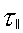 = infinity, no diffusion outside of given Kspec only. Elsewhere reverts to collision option 0.
Collision option 2 :
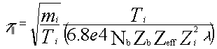
where Zeff given outside of given Kspec only.
Elsewhere reverts to collision option 0.
Collision option 3 :
Time between K diff steps = tau para outside of given Kspec only. Elsewhere Time between Y diff steps = DeltaT
Collision option 4:
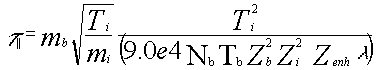
when Ti > Tb.Mi/Mb and
for rings >= given ring no.
Elsewhere reverts to collision option 0.
Time between S diff steps = tau para
for rings >= given ring no. Elsewhere
Time between Y diff steps = DeltaT
Collision Option 5: Parallel velocity diffusion
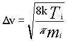
diffusion occurs if :
0 < (random) < dt/
Collision Option 6: Parallel velocity diffusion
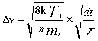
deltav = sqrt(8kti/pi.Mi)* sqrt( dt / (tau para))
at every time step
Collision Option 7:
diffusive steps in the direction
opposite of the particles velocity
reverse the sign of that v.
For rings greater than IRSPEC-1:
(Unless special plasma parameter = 0)
time between s diff steps = (t
Elsewhere:
time between s diff steps = taupara
Collision Option 8:
S diffusive steps are based on:
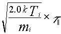
Otherwise as Coll Opt 0.
Collision Option 9:
S diffusive steps are based on:
For IR < IRSPEC:
time between s diff steps =
Elsewhere:
time between s diff steps = (t
Collision Option 10: Parallel velocity diffusion
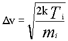
diffusion occurs if :
0 < (random) < (t /
Collision Option 11: Parallel velocity diffusion
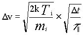
at every time step
Collision Option 12: Parallel velocity diffusion
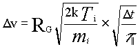
at every time step
where
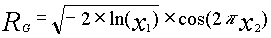
x1,x2 are uniform on [0,1]
Collision Option 13: Parallel velocity diffusion
at every time step
where
x1,x2 are uniform on [0,1]
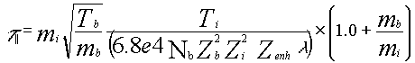
Collision Option 14: Parallel Velocity Diffusion
Exactly the same as Option 13 EXCEPT that velocity diffusion is turned off (DELTAV=0.0) for S > FACTOR * SMAX for the ring, from each target. FACTOR is specified by the Stgrad parameter.
Reiser option 0 :
Reiser coulomb collison option for calculating the parallel forces is turned off.
Reiser option 1 :
Reiser coulomb collison option for calculating the parallel forces is turned on. The regular DIVIMP collison and friction options are not used. The Reiser coefficients are constant for each cell.
Reiser option 2 :
Reiser coulomb collison option for calculating the parallel forces is turned on. The regular DIVIMP collison and friction options are not used. The Reiser transport coeffcients are recalculated at every time step based on the local conditions and impurity particle location along the field line. Background profiles are interpolated between cell centers. This may incur a significant computational cost.
Friction option 0 :
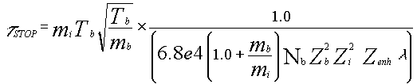
Friction option 1 : Taustop = infinity outside of given Kspec only. Elsewhere reverts to friction option 0.
Friction option 2 : Taustop = Tau|| outside of given Kspec only. Elsewhere reverts to friction option 0
Friction option 3 :
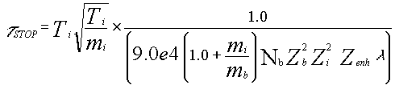
when Ti > Tb.Mi/Mb and
for rings >= given ring no. Elsewhere
reverts to friction option 0.
Friction option 4 :
The friction goes to zero for a cell whose mean free path is less than the distance to the target.
Heating option 0 :
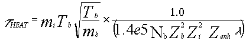
Heating option 1 : TauHEAT = infinity outside of given Kspec only. Elsewhere reverts to heating option 0.
Heating option 2 : TauHEAT = zero outside of given Kspec only. Elsewhere reverts to heating option 0.
Heating option 3 :
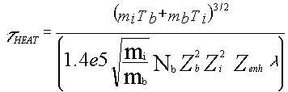
outside of given Kspec only. Elsewhere reverts to heating option 0
Injection opt * : Disregarded when NEUT control switch not 0
Injection opt 1 : Inject ions at given (r,z) with given v0
Injection opt 2 : Inject uniformly on a given ring between INJ1*SMAX and INJ2*SMAX relative to both plates. Given V0.
Injection opt 3 : Inject uniformly on a given ring between INJ1*SMAX and INJ2*SMAX. Given V0.
Injection opt 4 : Neutral impurity ionization profiles taken from a nimbus/pin run are used to generate a probability map for ion injection. The initial ion energy is taken from the nimbus/pin results.
Injection opt 5 : Inject uniformly on a given ring between INJ1*SMAX and INJ2*SMAX relative to both plates.
Initial velocity is calculated from:
vinit = rg * v0'
where rg = sqrt(-2*ln(x1))* cos(2pi*x2)
x1,x2 are uniform on [0,1]
and the value for V0 is given.
Injection opt 6 : Inject uniformly on a given ring between INJ1*SMAX and INJ2*SMAX.
Initial velocity is calculated from:
vinit = rg * v0'
where rg = sqrt(-2*ln(x1))* cos(2pi*x2)
x1,x2 are uniform on [0,1]
and the value for V0 is given.
Injection opt 7 : Based on FLUID CODE results.
Neutral impurity ionization source profiles taken from a FLUID CODE run are used to generate a probability map for ion injection. The initial ion energy is') also taken from the FLUID CODE data.
SOL option -1 : SOL1a (fl,fs) values given (N344)
Background velocity and electric field are specified by formulae. See the sol.d6a source code module for a detailed description of the formulae.
SOL option 0 : SOL0
Background velocity and electric field are set to zero everywhere.
SOL option 1 : SOL1
Background velocity and electric field are specified by formulae. See the sol.d6a source code module for a detailed description of the formulae.
SOL option 2 : SOL2
The velocity is set to Cs * (1-S/SMAX) while the electric field is set to -Te/SMAX.
SOL option 3 : SOL3
Background velocity and electric field are specified by formulae. See the sol.d6a source code module for a detailed description of the formulae.
SOL option 4 : SOL4
Background velocity and electric field are specified by formulae. See the sol.d6a source code module for a detailed description of the formulae.
SOL option 5 : SOL5
Background velocity and electric field are held constant in the SOL with appropriate changes in sign for the different ends of the flux tube. The values assigned to the velocity and electric field are entered separately in the input file.
SOL option 6 : Efield = constant.
Vb is set to three discrete constant values in three separate regions. The actual values assigned are controlled by the SOL option 6 and 7 parameters specified later.
SOL option 7 : Efield = constant.
Vb is split into three linearly ramping regions with Vb going to zero at SMAX/2.0. Vb varies linearly across each region from the value specified at one boundary to the value specified for the next. The actual values assigned are controlled by the SOL option 6 and 7 parameters specified later.
SOL option 8 : Not used
SOL option 9 : SOL9 similar to SOL2 (N327)
The velocity is set to the sound speed everywhere with appropriate sign for each half flux tube. The electric field is set to -Te/SMAX where Te is the temperature in the current cell and SMAX is the field line length from target to target.
SOL option 10 : SOL10 fRM, fRmin, fRmax, Kin, Kout and (fl,fs) values given (N353)
SOL option 12 : SOL12 - Pseudo self consistent
Overrides Tgrad options. Electron and ion heat transport are equal. Te, Ti, Nb, Vh and E are calculated from the following equations. The value for K0 is the same for both electrons and ions.
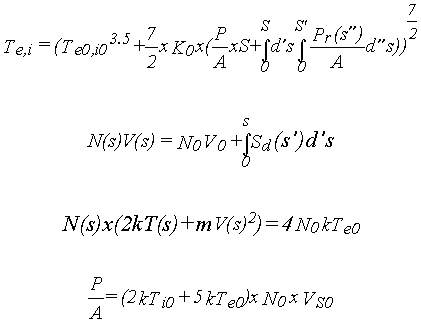
SOL option 13 : SOL13 - Pseudo self consistent Overrides Tgrad options. Electron and ion heat transport are independent. Te, Ti, Nb, Vh and E are calculated from the following equations. The value of K0 differs for electrons and ions.
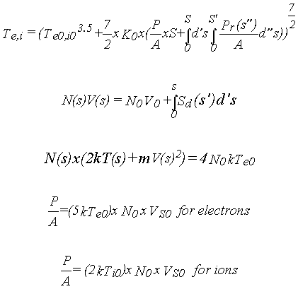
SOL option 14 : SOL14 - Pseudo self consistent Overrides Tgrad options in the SOL. Calculates Ti, Te, Nb, Vh and E from the following equations involving both heat conduction and convection.
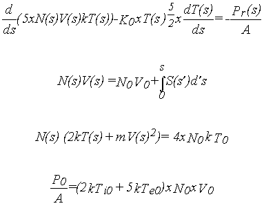
SOL option 15 : SOL15 - Pseudo self consistent Overrides Tgrad options. Electron and ion heat transport are independent. Te, Ti, Nb, Vh and E are calculated from the following equations. The value of K0 differs for electrons and ions.
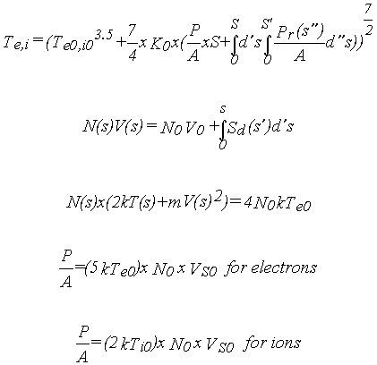
SOL option 21 : Detached Plasma Prescription.
The regions may be defined either in terms of SMAX or PMAX. This is controlled by the length switch. The following description uses SMAX as an example.
Three regions:
A: 0 < SMAX * L1
C: S > SMAX * L2
A: Te at outer edge of A : Te0 * TeR1
A: Ti at outer edge of A : Te0 * TiR1
A: Ne at outer edge of A: Ne0 * NR1
Te increases linearly in A to Te0*TR1 at SMAX*L1
Ti increases linearly in A to Te0*TR1 at SMAX*L1
Ne increases linearly in A to Ne0*NR1 at SMAX*L1
Velocity in A: v(s)=N0V0/n(s)
B: T=(T1**3.5+7/2K0*(Q0(s-L1) + 1/2(s-L1)^2*(Qrad/Lrad)))**(2/7)
B: Radiated power in B (Qrad): Q0*QR
C: T=(T2**3.5+7/2K0*(Qtot(s-L2)))**(2/7)
Qtot = Q0 + Qrad
B,C: N(s) = N1 * (T(s)/T1)**(-1)
Velocity linearly->0 at SMAX*VR1
SOL Option 22 : SOL Option 22 is a multi-parameter OSM (Onion Skin Model) that uses a Runge-Kutta based solver to numerically evaluate the one-dimensional fluid equations. Starting from given target conditions and including a wide variety of effects, the option generates a complete background plasma solution for density, ion and electron temperature, parallel flow velocity and parallel electric field. The solutions represent what appears to be a reasonable approximation to the conditions found in the edge. As such, they should be a useful research tool in examining the behaviour of impurities as well as the hydrogenic species behaviour in the reactor and especially for comparing predicted observables to actual experimental results. It is important to verify that the solution generated, for a given set of target conditions, appear to be reasonable. The code can not definitively evaluate the legitimacy of a given background solution - this requires that the user look at the solution generated and evaluate it in the context of the physical situation being modelled. This SOL option has a large number of sub-options that are specified in a block at the bottom of the input file and are documented later in this manual. The equations that are solved are listed below - the solver can find solutions for Te=Ti or for Te and Ti evolving independently.
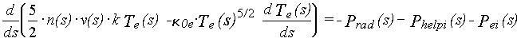
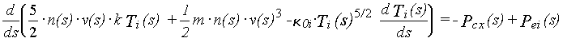
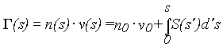
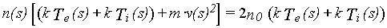
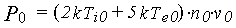
SOL option 23 : SOL option 23 aolves the 1D fluid equations in a DIVIMP context. More deatil is provided in the sol23 specific documentation.
SOL option 98 : Read data from DIVIMP generated background plasma file - this option must be used in combination with plasma decay option 98.
SOL option 99 : Read data from file - B2 or Edge2D depending on grid.
Core Option -1 : Ignore. This option will cause all of the core processing options to be bypassed. Any values set for the core plasma either initially or by routines other than the core plasma code section will be used for the core plasma. The values for the core will be either those specified in the INITPLASMA routine or some values applied through other options in the code.
Core Option 0 : Normal. This has been the standard DIVIMP option in the past. The temperature and density are constant on each core ring around it's length and increase by a specified step for each ring inside the separatrix ring. These quantities are specified by TebIn, TibIn and NbIn. The flow velocity is always zero in the core.
Core Option 1 : Core Conditions Specified. The quantities, Te, Ti and Nb are specified for each ring in the core separately. The values are constant along each ring.
Core Option 2 : Core Marfe Option. The values of Te, Ti, Ne, Vb at the X-point are specified for each ring. These ramp up linearly along the core ring to the standard DIVIMP values (specified as in option zero) at the inner and outer mid-planes.
Core Option 3 : Core Marfe Option. The values of Te, Ti,---, and Vb at the X-point are specified (Note that the density is NOT specified in this option). These ramp up linearly from the X-point along the core ring to the standard DIVIMP values for that core ring (specified as in option zero) at the inner and outer mid-planes. The density along the ring is calculated by applying pressure conservation. A number must be supplied for the density in the input but it is ignored.
Core Option 4 : Core Marfe Option. The values of Te, Ti,---, and Vb near the X-point are specified. (Note that the density is NOT specified in this option). In addition, location factors are also specified for the temperature and velocity. The temperature and velocity ramp up linearly from the first location along the core ring to the standard DIVIMP values for that core ring (specified as in option zero) at the second location specified. The density along the ring is calculated by applying pressure conservation. A number must be supplied for the density in the input but it is ignored.
e.g.
V -> 0 for S < Vf1 * SMAX
V -> Vb specified above for S = Vf1 * SMAX
V ramps linearly from Vb down to zero
for Vf1 * SMAX < S < Vf2 * SMAX
V -> 0 for S > Vf2 * SMAX
Te,Ti -> Tex,Tix for S =< Tf1 * SMAX
Te,Ti ramp up linearly to the standard values
for Tf1 * SMAX < S < Tf2 * SMAX
Te,Ti -> Standard for S> Tf2 * SMAX
Core Option 5 : This option is exactly the same as option 4 except that instead of using the standard option for calculating the base conditions on each core ring - this information is expected to be entered on a ring by ring basis in the data input block used to specify the plasma background for the SOL. See plasma decay option 7. Use of this option does NOT require that plasma decay option 7 be specified - only that the data be entered in the appropriate portion of the input file. This allows alternative methods of specifying target conditions to be used while reading in the core conditions and simulating a Marfe.
Plasma decay 0 : Standard method (N309)
Plasma decay 1 : Exponential decay outboard using the distance along the target from the separatrix strike point as the distance for the decay.
Plasma decay 2 : Temperature and density taken from input data for rings in the SOL.
Plasma decay 3 : Temperature and density taken from input data for rings in the SOL. Inner and Outer plates may differ.
Plasma decay 4 : Temperature and density taken from input data for rings in the SOL and Trap. Inner and Outer plates may differ.
Plasma decay 5 : Exponential Decay Outboard using the straight-line distance of the target point from the separatrix strike point as the distance for the decay.
Plasma decay 6 : Exponential Decay Outboard as in option 5 except that different exponential decay factors are specified for the main SOL and Private Plasma target regions.
Plasma decay 7 : Temperature and density taken from input data for rings in the main SOL, Private Plasma and the Core. Inner and Outer plates may differ.
Plasma decay 90 : Compound Background Plasma Option. The background plasma is created by using different options for different half-rings throughout the plasma. The specific input lines are described below. The plasma solution can be iterated through several PIN iterations. Option 90 uses an EDGE2D or other fluid code solution as the basis and overlays the other specified pieces of the solution over the different segments of the grid.
Plasma decay 91 : Compound Background Plasma Option. This option also creates a piece wise assembled background plasma by allowing a great deal of flexibility in what options are allowed for each half-ring. This option uses the given input values for the regular SOL options combined with an assumed plasma decay option of 4 to generate a base background plasma. The specified pieces are then overlaid on top of this.
Plasma decay 98 : Read data from a DIVIMP formatted plasma transfer file written by a previous DIVIMP run. A plasma file can be created on any DIVIMP run by setting the print option equal to 10.
Plasma decay 99 : From data file.
Note: Most Plasma Decay options (e.g. 3 and 4) may be used to assign uniform values to the entire plasma region and not just at the targets. Other temperature gradient options may then take these values that have been assigned to the entire plasma and change them. For example, SOL option 13 will use the values entered through these options as target specifications. Temperature gradient option 1 on the other hand will interpret values entered through using plasma option 3 or 4 as the mid-plane temperatures and densities.
These input lines describe the options to be overlaid onto various pieces of the background plasma. For example, this can be used to allow for detachment of only a few rings at the inside target while solving for all the rest of the half-rings normally. The input consists of two values. I line indicating the number of lines of input - or pieces to be overlaid on the base background. This is followed by the specifications of options to be used for each piece including the rings to which those options should be applied.
e.g.
' ' 'BG PLASMA Options by Ring (PlasDec Opts 90 & 91) '
' R1,R2,Sect, PlasDec, SOL, Teg, Tig, Core, Efield ' 2
1 16 3 4 0 0 0 1 3
17 28 2 4 21 0 0 0 3
The input specifications are as follows. R1 to R2 represent the range of rings to be affected. In this case 1 to 16 and 17 to 28 respectively. The next integer represents the section of the ring to be affected. Section 1 = the first section of the ring (IK=1 to the midpoint) or the OUTER target for JET grids (INNER target for SONNET grids). Section 2 = the second section of the ring (IK = midpoint to NKS(IR)) or the INNER half of the ring for JET Grids (OUTER half for SONNET grids). Section 3 = the entire ring. PlasDec is the Plasma Decay option to be applied to the specified region. SOL is the SOL option for the specified region. Teg and Tig are the temperature gradient options to be applied. Finally, Core and E-field are the core and e-field options to be applied to the specified region. If the region is not a core ring, the core option will be ignored. Similarly, the SOL options will have no effect if a core ring region is being calculated.
Edge2D Reference Option 0: OFF- An Edge2D background will not be read.
Edge2D Reference Option 1: ON- An Edge2D background - whose name was specified to the DIVIMP execution script - will be read in and stored for comparison to the calculated DIVIMP background plasma.
Edge2D Reference Option 2: ON - SONNET based (i.e. B2 or UEDGE) background plasma is read in for reference.
Note: The purpose of this option is to allow easy comparison between DIVIMP calculated background plasma results and equivalent Edge2D results. The values read in are passed to the OUT program and are then plotted on the same graph with the DIVIMP values in order to provide a direct method of comparison.
This option will read the target conditions from an EDGE2D case using one of five different methods and make them available to the DIVIMP SOL background routines. It also allows these conditions to be extracted and passed to NIMBUS.
FLUID CODE Target Opt 0: OFF. FLUID CODE data that has been read in not used to assign the initial target conditions.
FLUID CODE Target Opt 1: ON.
EDGE2D data is read using the standard method and is applied as the target conditions. The standard EDGE2D method uses the following formulae
N-target = N-centre-of-first-cell
Ti-target= Ti-centre-of-first-cell
Te-target= Te-centre-of-first-cell
V-target = E2D-mach-number * Cs
For UEDGE or other B2 like codes the data is read using the standard method and is applied as the target conditions. The standard UEDGE method uses the following formulae
N-target = N-centre-of-first-cell
Ti-target= Ti-guard-cell
Te-target= Te-guard-cell
V-target = V-cell-edge (for each target)
EDGE2D Target Opt 2: ON. EDGE2D data is read from the plasma file. In addition the EDGE2D down fluxes MUST be supplied so that the target conditions can be properly extracted.
V-target,Te-target and Ti-target as option 1.
N-target = G-target/V-target
EDGE2D Target Opt 3: ON. EDGE2D target values are calculated as in option 1. However, the EDGE2D down fluxes are also loaded and are passed to NIMBUS as the target fluxes for each segment. The target conditions and fluxes will not necessarily agree.
EDGE2D Target Opt 4: ON. EDGE2D data read for target. EDGE2D down fluxes are also read.
N-target,Te-target and Ti-target as option 1.
V-target = G-target/N-target
EDGE2D Target Opt 5: ON. EDGE2D data read for target. EDGE2D down fluxes for both particles and power are also read. The target conditions are calculated as described in option 2.
EDGE2D Target Opt 6: ON. EDGE2D data read for target. This is the same as option 1 except that the velocity is explicitly set to the sound speed based on the extracted target conditions rather than being based on the EDGE2D mach number.
CX Recomb option 0 : No charge exchange recombination
CX Recomb option 1 : Nh = Nho (constant) and Vcx = sqrt(2Tb/Mb) where Nho given.
CX Recomb option 2 : Nh = Nho (constant) with constant Vcx (given) where Nho given.
CX Recomb option 3 : Nh = Nhc, Constant in core.
Nh = Nho * exp( -S/lamhx), Exponential decay from the plates in the SOL.
where Nho, Nhc and lamhx are given. S is the distance from the plates along the field lines.
CX Recomb option 4 : Nh from PIN with Vcx = sqrt(2 Tb / Mb)
CX Recomb option 5 : Nh from PIN with constant Vcx.
CX Recomb option 6 : Nh from PIN with Charge exchange Coefficient Data (CCD) taken from ADAS.
CX Recomb option 7 : ADPAK/INEL CX rates. CX rates are extracted from B2-FRATES or INEL formatted atomic information database. Nh is supplied either by PIN or by loading as an auxiliary quantity to the background plasma specification.
CX Recomb option 8 : Nh from PIN. <SIGMA V> cx rates have been taken from the PhD thesis of C.F.MAGGI and have been fitted to a three parameter exponential by Tom Rognlien (LLNL).
CX Recomb option 9 : Nh from PIN. <SIGMA V> cx rates have been taken from the PhD thesis of C.F.MAGGI and have been fitted to a modified three parameter exponential by Tom Rognlien (LLNL) The modified coefficients reduce the CX recombination rates extrapolated from the Maggi data for low temperature conditions.
First diffusion 0 : instant
First diffusion 1 : after randomly generated time interval
First diffusion 2 : after ion has existed for time = Tau parallel
Dperp option 0 : constant
Dperp option 1 : Dperp = Dperp0.Nb0/Nb in SOL&Trap
Constant Dperp0 in Main
Dperp option 2 : Dperp is held constant along the reference line at knot number NKS(IRSEP)/2 +1. Cross-field transport elsewhere is based on moving particles in proportion to their equivalent cross-field position on the reference line. Transport in the Private Plasma is mapped relative to the adjacent cell on the separatrix at the IK=1 index which is then mapped back to the reference line.
Dperp option 3 : UNTESTED. Spatially varying Dperp. The value of Dperp in each cell is allowed to changed so that the number of Dperp steps required to cross a cell remains consatnt along a field line. The Private Plasma Dperp is set to match the corresponding cells on the separatrix. The actual cross-field steps are done proportional to cell sizes so that a particle taking a step from one cell to the next can step back to its starting position despite the differing Dperp values in the adjacent cells.
Dperp option 4 : UNTESTED. As option 3 except that the private plasma Dperp values are varied to try to try to keep the number of steps consistent instead of matching the Dperp on the separatrix.
Perp. Step Opt 0 : Constant - The probability of inward and outward cross-field diffusive steps is constant everywhere at a value of 0.5
Perp. Step Opt 1 : Geometrically Varying for Core Only - The probability of making an inward or outward cross-field diffusive step within the core region is equal to the ratio of the lengths of the sides parallel to the field lines of a small cell located at the current particle position. In the SOL and private plasma the probability of a cross-field step is as calculated in option 0.
Perp. Step Opt 2 : Geometrically Varying for the entire grid - The probability of making an inward or outward cross-field diffusive step in all regions is equal to the ratio of the lengths of the sides parallel to the field lines of a small cell located at the current particle position.
Perp. Step Opt 3 : Geometrically Varying for the entire grid - The probability of making an inward or outward cross-field diffusive step in all regions is equal to the ratio of the lengths of the sides parallel to the field lines of a small cell located at the current particle position. This is calculated for each half-cell independently.
Pinch Velocity Opt 0 : OFF. No Pinch Velocity Applied.
Pinch Velocity Opt 1 : ON. Pinch Velocity is applied at the specified value everywhere on the grid.
Pinch Velocity Opt 2 : ON. Pinch Velocity is applied at the specified value only in the main SOL.
Pinch Velocity Opt 3 : ON. Pinch Velocity is applied with the value specified at the separatrix. The pinch is only applied in the core and is scaled proportional to the square of the poloidal field line length as a particle moves deeper into the core.
TeB Gradient 0 : Linear, from TeB0.feBt at Target to TeB0
at feBL.Smax, then constant
TeB Gradient 1 : Linear from Teb0*Febt at target to TeB0*Febt2
at Febl*Smax to TeB at Febl2*Smax, then constant.
TeB Gradient 2 : P/A driven gradients. P/A and K0 are given
TeB Gradient 3 : P/A driven gradients. K0 given. Based on input data/ring.
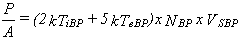
TeB Gradient 4 : P/A driven gradients. K0 given. P/A calculated as above. The input data for inner and outer plates may differ. A factor of 7/4 is assumed in the heat transport equation.
TeB Gradient 5 : P/A driven gradients. K0 given. The input data for inner and outer plates may differ. A factor of 7/4 is assumed in the heat transport equation.
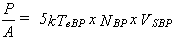
TeB Gradient 6 : Identical to option 4 except a factor of 7/2 is assumed in the heat transport equation.
TeB Gradient 7 : Identical to option 5 except a factor of 7/2 is assumed in the heat transport equation.
TeB Gradient 98 : Read data from DIVIMP generated background plasma file - this option must be used in combination with plasma decay option 98.
TeB Gradient 99 : Read from file.
TiB Gradient 0 : Linear, from TiB0.fiBt at Target to TiB0
at fiBL.Smax, then constant
TiB Gradient 1 : Linear from Tib0*Fibt at target to TiB0*Fibt2
at Fibl*Smax to TiB at Fibl2*Smax, then constant.
TiB Gradient 2 : P/A driven gradients. P/A and K0 are given
TiB Gradient 3 : P/A driven gradients. K0 given. Based on input data/ring.
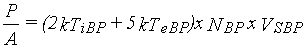
TiB Gradient 4 : P/A driven gradients. K0 given. P/A calculated as above. The input data for inner and outer plates may differ. A factor of 7/4 is assumed in the heat transport equation.
TiB Gradient 5 : P/A driven gradients. K0i given. The input data for inner and outer plates may differ. A factor of 7/4 is assumed in the heat transport equation.
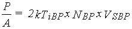
TiB Gradient 6 : Identical to option 4 except a factor of 7/2 is assumed in the heat transport equation.
TiB Gradient 7 : Identical to option 5 except a factor of 7/2 is assumed in the heat transport equation.
TiB Gradient 98 : Read data from DIVIMP generated background plasma file - this option must be used in combination with plasma decay option 98.
TiB Gradient 99 : Read from file
TeB Grad Coeff 0 : alphae = 0
TeB Grad Coeff 1 : alphae = 0.71 Zi.Zi
TeB Grad Coeff 2 : alphae = 1.5(1-0.6934(1.3167**-Zi))Zi.Zi
TeB Grad Coeff 3 : alphae = 0.71 Zi.Zi
Feg is set to zero for S values as measured from either target that are greater than the specified value.
TiB Grad Coeff 0 : betai = 0
TiB Grad Coeff 1 : betai=-3(1-mu-5.Zi.Zi.sqrt(2mu)mu(1.1mu- 0.35))/(2.6-2mu+5.4mu.mu), mu=mi/(mi+mb)
TiB Grad Coeff 2 : betai=H(ZO)Zi.Zi/(ZO+sqrt(0.5(1+mb/mi)))
where H(ZO)=1.56(1+1.41ZO)(1+0.52ZO)/ ((1+2.65ZO)(1+0.285ZO))
where ZO given.
TiB Grad Coeff 3 : betai=-3(1-mu-5.Zi.Zi.sqrt(2mu)mu(1.1mu- 0.35))/(2.6-2mu+5.4mu.mu), mu=mi/(mi+mb)
Feg is set to zero for S values as measured from either target that are greater than the specified value.
Flatten Gradient Opt 0: OFF. Temperature profiles are not flattened.
Flatten Gradient Opt 1: ON. Temperature profiles are flattened at their current values for S or (SMAX-S) > SMAX * Fcut
Flatten Gradient Opt 2: ON. Temperature profiles for S > SMAX * Fcut are limited to a maximum of the value at the position SMAX * Fcut.
This is the Fcut factor that will be used for the Electron Temperature profile flattening. If this value is specified as 0.0 then no flattening or cutting off of the temperature rise will occur.
This is the Fcut factor that will be used for the Ion Temperature profile flattening. If this value is specified as 0.0 then no flattening or cutting off of the temperature rise will occur.
T-Grad Mod Opt 0 : Off - the temperature gradient forces are not modified from their values calculated on the basis of fluid assumptions. (i.e. a sufficiently collisional plasma). The modification array is set to 1.0 everywhere.
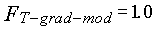
T-Grad Mod Opt 1 : On - the temperature gradient forces are modified by a multiplicative factor which is an attempt to include kinetic effects in the underlying force equations. The following formula is taken from the correction term used in the UEDGE code.
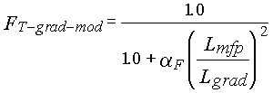
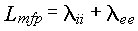
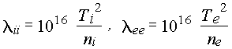
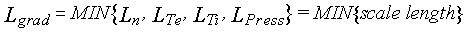
T-Grad Mod Opt 2 : On - This is identical to option 1 except that the value for FT-grad-mod is equal to 0.0 for the ion temperature gradient force when within one ion mean free path length of the target.
T-grad Mod Opt 3 : On - the temperature gradient forces are modified by a multiplicative factor which is an attempt to include kinetic effects in the underlying temperature gradient calculations. This option is based on the methods used in the Garching-B2 code with an additional parameter to provide the ability to change the magnitude of the effect to allow for which specific mean-free path is to be used. This option limit the temperature gradient directly as opposed to generating a multiplicative factor that modifies the final calculated force. The temperature gradients are found using the following relation. (Applied to both electrons and ions.)
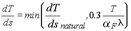
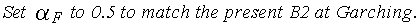
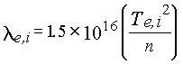
T-grad Mod Opt 4 : On - This is identical to option 1 except that the value for FT-grad-mod is equal to 0.0 for both the ion and electron temperature gradient force when within one ion mean free path length of the target.
Trap Tgrad 0 : Off. Tgrad options are not applied in the trapped plasma. Temperature and density are constant.
Trap Tgrad 1 : On. The specified temperature gradient or SOL option are applied to the trap region as if they were a standard SOL ring.
Trap Tgrad 2 : On. The Private Plasma Conditions are completely specified by two (x,f(x)) points for each of density, electron temperature, ion temperature and velocity. Each quantity is constant out to the mid-plane at the value of the second point. The specific input parameters defining these points are described later in this document.
Trap Tgrad 3 : On. Plasma conditions in the private plasma region are calculated from experimental Thomson measurements. All data for each flux tube are averaged and this value is then assigned to all cells on the flux tube. The target conditions are taken from the input Langmuir probe values.
Trap Tgrad 4 : On. Plasma conditions in the private plasma region are calculated from experimental Thomson measurements. All data for each flux tube are averaged and this value is then assigned to all cells on the flux tube. The target conditions are then set to equal the flux tube values.
Control switch 0 : NEUT on: follow atoms to ionization positions
Control switch 1 : NEUT off: inject ions as "initial state" option
Launch option 0 : Distributed launch along target
Launch option 1 : At given (R,Z)
Launch option 2 : Homogeneously along walls - different wall definitions are possible.
Launch option 3 : Distributed launch along Target due to hydrogenic ion impact utilizing PIN/NIMBUS data.
Launch option 4 : Distributed launch along "Wall" surfaces due to hydrogen ATOM impact utilizing PIN/NIMBUS data for wall fluxes and wall definitions. Walls are defined as all vessel surfaces including the target segments. Wall coordinates are passed to DIVIMP from NIMBUS.
Launch option 5 : 2D Distributed Launch. Neutral particles are launched from a selection of cell centres on the grid. The probability of launch from a given cell centre is taken from an externally supplied distribution function. The only currently supported distribution function is the Carbon neutral recombination rate that has been imported from some UEDGE modelling of DIIID.
Vel/angle flag 0 : theta =+/-asin($), $ in (0,1)
Vin=sqrt(2Ebd/(Mi.(1/sqrt($)-1))), $ in (0,1)
Vel/angle flag 1 : theta = atan(tan(beta)cos(phi))
Vin=sqrt(2Ebd/Mi.(1/sqrt($)-1)) $ < $max
*sqrt(|cos(beta)**2+sin(beta)**2.cos(phi)**2|)
Vel/angle flag 2 : theta = atan(tan(beta)cos(phi))
Vin=sqrt(2Tg/Mi).sqrt(abs(ln(1-$))), $ in(0,1)
Gas temperature given
Vel/angle flag 3 : theta =+/-asin(sqrt($)), $ in (0,1)
Vin = sqrt(2Ein/Mi), Initial energy Ein given
Vel/angle flag 4 : theta = atan(tan(beta)cos(phi))
Vin=sqrt(2Ebd/Mi.(1/sqrt($)-1)) $ < $max
*sqrt(|cos(beta)**2+sin(beta)**2.cos(phi)**2|)
Emax-factor given
Vel/angle flag 5 : theta =+/-asin(sqrt($)), $ in (0,1)
Vin = sqrt(2Ebd/Mi.(1/sqrt($)-1)) $ < $max
Emax-factor given
Vel/angle flag 6 : theta = 0
Vin = sqrt(2Ein/Mi), Initial energy Ein given
Vel/angle flag 7 : theta=+/-acos((1-$)**1/3), $ in (0,1) "Free Jet"
Vin = sqrt(2Ein/Mi), Initial energy Ein given
Vel/angle flag 8 : theta = 2pi$, $ in (0,1) "Isotropic"
Vin = sqrt(2Ein/Mi), Initial energy Ein given
Vel/angle flag 9 : theta =+/-asin(sqrt($)), $ in (0,1)
Vin = sqrt(2Ein/Mi), where two given values
are used alternately for Ein
Vel/angle flag 10 : beta = acos((1-$)**1/3) "3D Free Jet"
psi = 2pi$, $ in (0,1)
Vin = sqrt(2Ein/Mi), Initial energy Ein given
Vel/angle flag 11 : theta=+/-acos((1-$)**1/3) 0<$<1 "2.5D Free Jet"
P0 assigned randomly in range (-Pmax,Pmax)
Vin = sqrt(2Ein/Mi), Initial energy Ein given
Vel/angle flag 12 : Emission at a constant energy specified by the input quantity EIN (CTEM1) into a cos**N distribution where N is also a specified input.
Vel/angle flag 13 : Emission at a temperature (Tg) into a cos**N distribution. Tg is specified by the same input quantity (CTEM1) as in V/A flag 12. N is also a specified input as in V/A flag 12.
Vel/angle flag 14 : theta = atan(tan(beta)cos(phi))
Vin=sqrt(2Etarg/Mi.) * VMULT *
*sqrt(|cos(beta)**2+sin(beta)**2.cos(phi)**2|)
Where VMULT = input multiplication factor.
Vel/angle flag 15 : theta = 2pi$, $ in (0,1) "Isotropic"
Vin = sqrt(Ti/Mi) * VVMULT , Ti = local ion temperture. VMULT = input multiplication factor.
These are identical to the possible launch options and apply to any supplementary neutral launches.
Sup. Launch opt -1 : Set value to the same as the primary launch option.
These are identical to the possible V/A flag options and apply to any supplementary neutral launches.
Sup. V/A flag opt -1 : Set value to the same as the primary V/A flag option.
These are identical to the possible V/A flag options and apply to any the initial group of neutral launches only. This allows such for simulations of a free-space neutral pellet ablation followed by regular self-sputtering. Each of which has quite different characteristic Velocity/Angle source distributions.
Init. Neut. V/A opt -1: Set value to the same as the primary V/A flag option.
2D Neut. Launch Opt 0 : OFF. No 2D neutral source is used.
2D Neut. Launch Opt 1 : ON. A 2D source of impurity neutrals - equivalent to launch option 5 is launched in addition to all other specified impurity sources. Each source is weighted according to its relative production strength. This option is required in order to allow for both wall and target particle sources as well as 2D distributed impurity neutral sources. This could be either modelling recombined impurities or modelling a puff of some description in addition to regular target production.
This takes the same options as those described in the Velocity/Angle flag above. This Velocity/Angle flag is applied to any particles launched using the 2D Neutral Launch described in the previous option.
Sputter Data Option 1: Data is taken from earlier publications.
Sputter Data Option 2: Data is taken from Eckstein (1993)
Sputter Data Option 3: Data is based on Eckstein (1993) with small changes to H,D,T coefficients taken from Garcia-Rosales and Roth(1996)
Sputter Data Option 4: Specified CONSTANT yield value.
Sputter Data Option 5: Data is based on Eckstein (1993) with small changes to H,D,T coefficients taken from Garcia-Rosales and Roth(1996). A customized routine has been created for the W sputtering values and is used instead of the Eckstein values for this option.
Chemical Sputter Opt 1: DIVIMP implementation - yield formulae from Garcia-Rosales/Roth (1994)
Chemical Sputter Opt 2: DIVIMP implementation - yield formulae from Garcia-Rosales/Roth (1996)
Note: Options 3 to 7 correspond exactly to chemical sputtering options 1 through 5 as they are implemented in NIMBUS. The identical code for calculating these yields has been incorporated into DIVIMP.
Chemical Sputter Opt 3: NIMBUS option 1 - Garcia-Rosales/Roth (EPS'94)
Chemical Sputter Opt 4: NIMBUS option 2 - Pospieszczyk (EPS'95)
Chemical Sputter Opt 5: NIMBUS option 3 - Vietzke
Chemical Sputter Opt 6: NIMBUS option 4 - Haasz
Chemical Sputter Opt 7: NIMBUS option 5 - Garcia-Rosales/Roth (1996)
Chemical Sputter Opt 8: NIMBUS option 6 - Haasz (1997) - (Brian Mech PhD)
Chemical Sputter Opt 9: Specified CONSTANT yield value.
Chemical Sputter Opt 10: Based on Haasz (1997) - (Brian Mech PhD Thesis). Modified to reduce the yield to 1/5 of its value as the temperature drops from 10eV to >5eV. Constant at 1/5 below 5eV.
Sputter option 0 : Sputtering by background ions (Mb,Zb) only
Eimp=Tb(2+3Zb) Emax=Eimp.gamma(1-gamma)-Ebd
Sputter option 1 : Sputtering by specified ion type only
Eimp=Tb(2+3Zimp) Emax=Eimp Zimp given
Sputter option 3 : Initial sputtering by background ions only.
Eimp=Tb(2+3Zb) Emax=Eimp.gamma(1-gamma)-Ebd
Sputter option 4 : Initial sputtering by background ions only.
Eimp=Tb(2+3Zb) Emax=Eimp.gamma(1-gamma)-Ebd
The maximum energy of the distribution of self-sputtered particles resulting from the use of this option is multiplied by the EMAX-FACTOR described later (CEMAXF). Velocity/Angle flag 1 will be used for any self-sputtered particles.
Sputter option 5 : Initial Chemical Sputtering Source. The formula used to calculate the chemical sputtering is specified using the Chemical Sputtering Source Option defined above. The surface temperatures of the walls and the target can be specified separately and are defined later in this document.
Sputter option 6 : Initial COMBINED physical and chemical sputtering. Two groups of atoms are launched. The first is PHYSICALLY SPUTTERED using the Velocity/Angle flag specified by the Initial Neutral V/A flag option. The second group is CHEMICALLY SPUTTERED and uses a Velocity/Angle flag of 3 with the characteristic energy specified in the input. The ratio of particles launched through each mechanism is proportional to the total (BG FLUX) * (YIELD) for each sputter source.
Note: In previous versions of DIVIMP - sputter options of 3 or more were used to indicate that self-sputtering would be active. This is no longer the case. A separate switch has been added to turn self-sputtering On or Off. Thus there is some duplication of definition in the various sputter options.
These are identical to the possible Sputter options listed above and apply to any supplementary neutral launches.
Sup. Sputter opt -1: Set value to the same as the primary sputter option.
Self-Sputter Opt 0 : OFF. Self-sputtering cascade does not occur.
Self-Sputter Opt 1 : ON. Self-sputtering cascades are followed as usual based on the maximum number of generations of self-sputtering allowed to be followed, the minimum specified threshold yield allowed, and the calculated actual yield based on the particle impact energy for self-sputtering.
Self-Sputter Opt 2 : ON. Self-sputtering cascades are followed as usual based on the maximum number of generations of self-sputtering allowed to be followed and the minimum threshold yield. The yield for each segment is set at a separately specified fixed value. The energy of emitted sputter fragments is also fixed. This option was implemented to allow for modelling of prompt re-emission of impurity species ions (particularly carbon) as they strike a target surface through mechanisms other than physical sputtering
Normal option 0 : Measure theta from surface normal
Normal option 1 : Measure theta from T degrees to X=0, T given
Apply to primary neutrals only.
Normal option 2 : Measure theta from T degrees to X=0, T given
Apply to primary and self-sputtered neutrals.
NEUT spreading 0 : OFF (Launch at meshpoints only)
NEUT spreading 1 : NOT SUPPORTED ... (ON -Launch with variation in Y0)
Initial ion Vel 0 : Vn=0.0
Initial ion Vel 1 : +/-0.5Vn along S
Initial ion Vel 2 : Vn along S away from Target
Initial ion Vel 3 : +/-sqrt($).Vn along S, $ in (0,1)
The Ion Wall options specify the boundaries for ion transport in the DIVIMP code. This option is combined with the target option to define the region of allowed ion transport. This option applies to both the main SOL outer wall and private plasma outer wall definitions for ion transport.
Ion Wall Option 0 : Ion walls mid-way between the center points of the outermost two rings on the grid. The outermost ring on both JET and Sonnet based grids is virtual and is used only to anchor the fluid solutions. As such, the plasma space mapped by the grid only extends to the midpoint between this virtual ring and the last real ring contained within it.
Ion Wall Option 1 : Ion walls are at the outermost ring of the SOL. The center points of the virtual ring are used to define the ion wall position.
Ion Wall Option 2 : Ion walls are located at the polygon edge of the outermost complete ring of polygons defining the plasma region. This is almost equivalent to option 0 except that it uses the actual polygon definition of the last real ring to construct the outer wall for ion transport. Option 0 was the original option for DIVIMP grids that contained only the centre points and not the compete polygonal description of the grid.
The Neutral Wall options specify the boundaries for neutral transport in the DIVIMP code. In all cases the different neutral wall options link to the target and private plasma wall options to define a vessel boundary for neutral transport. This definition applies to the neutral walls bordering the main SOL region. The private plasma wall region for neutrals is defined in the next option.
Neut Wall Option 0 : Neutral walls are half-way between the center points of the outermost two rings on the grid.
Neut Wall Option 1 : Neutral walls are created by joining the center points of the outermost (virtual) ring.
Neut Wall Option 2 : Neutral walls are specified by a set of coordinates entered in the input file.
Neut Wall Option 3 : Neutral walls are specified by a set of points that have been hard-coded for specific JET grids in the subroutine loadgeo - located in the pindiv.d4a module. This option is old and has been superseded by options 4 and 5 - however, it may prove useful if it is ever necessary to often use a specific grid for which pre-generated wall data is either unavailable or inaccurate.
Neut Wall Option 4 : Neutral walls are specified by the vessel coordinates that are specified in the GRID2D geometry file that is read-in by DIVIMP.
Neut Wall Option 5 : Neutral walls are read-in from the PIN/NIMBUS transfer file. Although, the position of the walls is the same as in the GRID2D file, PIN/NIMBUS generally sub-divides the vessel surface for its own purposes in calculating data - as such it is necessary to load the PIN/NIMBUS version of the wall specification when using PIN/NIMBUS wall data in conjunction with DIVIMP. Use of this option requires that PIN/NIMBUS be run from within DIVIMP.
Neut Wall Option 6 : This option deals with walls whose segments are ordered counter-clockwise. It will invert the ordering of these wall segments so that they conform to the clockwise standard required by DIVIMP. This option then sets the neutral wall option to be option 4. This option should ONLY be used for VERY old JET grids where this is known to be a problem.
Neut Wall Option 7 : The main wall for neutrals is located at the outermost polygon edge of the last real (non-boundary) ring of the grid.
Trap Wall Option 0 : The wall for neutrals in the trap region is midway between the outermost two rings.
Trap Wall Option 1 : The wall for neutrals in the trap region is at the outermost ring.
Trap Wall Option 2 : The wall for neutrals in the trap region is created by joining the private plasma end-points of the two plates with a straight line. The end-points are defined to be midway between the outermost two rings of the private plasma region in order to remain compatible with PIN.
Trap Wall Option 3 : The neutral wall in the trap region is specified by a series of line segments entered in the data file just after the entry for the outer wall specification. These points are joined to the end/corner points of the target to form a continuous outer boundary for neutrals.
Trap Wall Option 4 : The private plasma wall for neutrals is specified by a set of additional coordinates for the vessel wall taken from the GRID2D geometry file.
Trap Wall Option 5 : The private plasma wall for neutrals is read from the PIN/NIMBUS transfer file.
Trap Wall Option 7 : The private plasma wall for neutrals is located at the outermost polygon edge of the last real (non-boundary) ring of the grid.
The purpose of this option is to instruct DIVIMP to include any baffles that may be specified in the grid file as part of the vessel wall. The code follows the main vessel wall until a section where a baffle comes very close to the wall is found. The code then redefines the wall by following around the outside of the baffle until it rejoins the wall. This option is only meaningful in conjunction with wall option 4 and/or trap wall option 4. If trap or wall option 5 are specified, in which the wall definition is taken from the PIN/NIMBUS output, then the wall will automatically be redefined if baffles are present.
Vessel Redef Option 0 : OFF - Vessel will not be redefined.
Vessel Redef Option 1 : ON - Vessel will be redefined to include adjacent baffles.
Velocity Type Opt 0 : OFF. Impurity neutrals will have a constant speed from creation until final removal.
Velocity Type Opt 1 : ON. Impurity neutral speed will change as the particle moves across the grid. The impurity neutral is assigned a speed based on the local plasma ion temperature. This speed changes as the neutral enters a new cell on the grid and is adjusted to match the local temperature.
Velocity Type Opt 2 : ON. Impurity neutral speed may change as the particle moves. The neutral will be assigned a new speed based on the local plasma ion temperature and the impurity mass whenever a Momentum Transfer Collision is calculated to take place.
Reflection Opt 0 : Off - Impurity neutrals striking the walls are recorded. They do not cause self-sputtering nor are they reflected.
Reflection Opt 1 : On - Impurity neutrals striking the wall are reflected specularly retaining the same energy as they had before impact. They do not cause sputtering at wall impact. This may be a poor approximation for most carbon-wall collisions. It might not be too bad for inert gas collisions.
Reflection Opt 2 : On - Impurity neutrals striking the wall are reflected with a cosine angular distribution retaining the same energy as they had before impact. They do not cause sputtering at wall impact. This may be poor approximation for most carbon-wall collisions. It might not be too bad for inert gas collisions.
Follow Recombined Neutrals Opt 0 : OFF. Recombined Impurity neutrals are not-followed.
Follow Recombined Neutrals Opt 1 : ON. Recombined Impurity neutrals are followed in the neutral state until re-ionization or removal from the system by some other mechanism. The re-ionized neutral is then followed as an ion. The recombined neutral is given the poloidal plane component of a projected 3D isotropic velocity calculated based on the temperature of the recombining ion. Unless over-ridden by the neutral velocity type option.
Momentum Transfer Collision Opt 0: OFF. Neutrals travel in straight lines from creation until ionization.
Momentum Transfer Collision Opt 1: ON. Neutrals will undergo 90 degree changes in flight path based on the probability calculated for the occurrence of a momentum transfer collision. The collision frequency is given by the following expression.
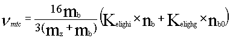
Probability coefficient for a momentum transfer collision with a background ion.
Probability coefficient for a momentum transfer collision with a background neutral particle.
Ion Prompt Dep. Opt 0: OFF. Ion prompt deposition does not occur.
Ion Prompt Dep. Opt 1: ON. Ion prompt deposition is allowed to occur. If an ion is created within a larmor radius of the target surface OR if it is created within the Magnetic Pre-Sheath thickness of the asociated target segment then it is assumed to promptly redeposit on the target surface. The ion's impact energy for self-sputtering purposes is calculated based on the ion's creation energy and it's precise location of ionization relative to the Magnetic Pre-Sheath. The impact energy is reduced appropriately for ionization occurring within the MPS.
Target Option 0 : Target is located at second grid points on the SOL and trap rings. Virtual points are discarded.
Target Option 1 : Target is located mid-way between the centre points of the virtual cell and first real cell on the SOL and trap rings. Virtual cell centers are then discarded.
Target Option 2 : Target is specified by a set of points entered in the data file. One point for each end of each ring. Virtual points are discarded.
Target Option 3 : Target is specified by a set of points that are hard-coded. One point for each end of each ring. The set of points is selected by the geometry option. The virtual points are discarded.
Target Option 4 : Target is located at the center of the first (virtual) cell on the SOL and trap rings.
Target Option 5 : Target is specified by a set of points entered in the data file. One point for each end of each ring.
Virtual points are not discarded.
Target Option 6 : Target is specified by the polygon boundaries of the last of the real plasma cells on each ring. The virtual cells are discarded. This option should be the one used with all grids for which complete polygon information is available since the target in these cases should correspond exactly with the polygon edges.
Target Mirror Opt 0: OFF. Target is treated normally.
This option was implemented for testing purposes and to look at some specific transport physics problems. It should normally be turned OFF.
Target Mirror Opt 1: ON. The target reflects all ions striking it. Both position and velocity are reflected. If the particle at position A makes a parallel step of length B that would carry it into the target located at the position X=0 (B>A and towards the target) then the ion's velocity is changed in sign and the position of the particle is adjusted to "|B-A|". Self-sputtering does not occur and particles can not be removed from the system at the target.
Target Mirror Opt 2: ON. The target reflects all ions striking it. Only the position and not the velocity is reflected. If the particle at position A makes a parallel step of length B that would carry it into the target located at the position X=0 (B>A and towards the target) then the ion's velocity is unchanged and the position of the particle is adjusted to "|B-A|". Self-sputtering does not occur and particles can not be removed from the system at the target.
Geometry Option -1 : Wall and Target position data are to be read from the input file for the target and wall options specified above if such action is appropriate.
Geometry Option 0 : Shot 24719 (one specific grid). Hard-coded target and wall data are available for the appropriate target and wall options.
Geometry Option 1 : Shot 26308 (one specific grid). Hard-coded target and wall data are available for the appropriate target and wall options.
Ion Periphery Opt 0 : Hard wall - ions are immediately removed at wall impact.
Ion Periphery Opt 1 : Reflecting wall - ions are always reflected at wall impact. The only loss mechanisms are recombination and target plate impact.
Ion Periphery Opt 2 : No wall - ions are allowed to cross-field diffuse indefinitely. However they are always associated with the outermost ring of the grid system. Thus plots using this option could be invalid because this effectively increases the volume of the outermost ring - thus influencing density calculations.
Ion Periphery Opt 3 : Far periphery model at wall. The ion enters a region where there are three loss mechanisms invoked and governed by three parameters. First, the ion can diffuse back to the plasma - it enters at the point where it left. Second, it can be lost to the far periphery target region with a specified characteristic loss time. Finally, it can diffuse to the "wall" which is specified to be a constant distance from the outermost ring of the grid. In addition, the diffusion coefficient in the far periphery can be specified independently of the value in the SOL and main plasma.
Ion Periphery Opt 4 : Special debugging wall option. The main wall is treated as a hard surface for particle loss. All ions striking the main wall are removed from the system. The private plasma wall is treated as a mirror. All particles striking the private plasma wall are reflected back into the plasma. The purpose of this option is to facilitate testing of the various Dperp options. If the ony sink is the outside wall then it should be possible to reach a condition where the density is constant inboard of the location of ion injection - if the Dperp and parallel transport are spatially uniform. This option is used in conjunction with the mirror target option.
FP Recycle Option 0: Ions are lost and removed from the system upon far periphery target or wall impact.
FP Recycle Option 1: Ions lost to the far periphery target and walls are relaunched from the edge of the nearest target.
Poloidal Drift 0 : Off - No poloidal drift velocity imposed.
Poloidal Drift 1 : On - Additional poloidal drift velocity given. (This velocity is actually imposed along the field lines and NOT directly poloidally.) The poloidal velocity is only applied over Additional "background plasma" poloidal drift velocity is given. The velocity is added to the background plasma velocity and is coupled to the impurities through the force of friction.(This velocity is actually imposed along the field lines and NOT directly poloidally.) The poloidal velocity is only applied over Special plasma parameter - Rspec
To define where any special collision, friction and heating options are to apply in DIVIMP enter a ring number > 0 here, and then the special options will apply for ring numbers greater than or equal to the value given. Typically, the ring no. of the separatrix will be entered, so that for example Collision option 3 applies just to the SOL and Trapped Plasma, reverting to Collision option 0 in the Main plasma. This parameter has no effect on the Velocity Diffusion collision options 12 and 13. If selected, these options apply to particle transport through-out the plasma. In general, this should be set to 0 so that the selected options will apply to the entire plasma.
This quantity allows the core ring, which will be used as the core mirror for impurity ion transport, to be specified. Any ions reaching this ring will be reflected.
Defines the plasma background material. Note that this can be overridden for purposes of sputtering if required (see later). The mass can be given to the nearest whole number, e.g. 2.0 for Deuterium. It can also be given as a fractional value, e.g. 2.5, if one wants quantities that are based on average ion mass to be calculated assuming a 50/50 DT plasma mixture.
Again, defines the plasma background. Enter an integer value here, e.g. 1 for deuterium.
The "standard" plasma temperature and density profiles are described in Note 336. The subscript "e" refers to electrons, and "i" refers to ions. In plasma decay option 1, the quantities TeBout,TiBout and NBout are assumed to be characteristic decay lengths, and are used to determine an exponential decay along the Reference Line for the SOL. When plasma option 99 is used, these values are all ignored and the temperature and density profiles are read in from a file. These values are also ignored - except for the trap values - when various plasma decay and/or temperature gradient options are specified. Furthermore, these values can be used in conjunction with plasma decay options that read values from the input data file and temperature gradient options to generate a variety of background plasma profiles.
The meaning of the parameters are (equivalent for "e" and "i" and similar for density (n) ):
TeB0 : Temperature of electrons at the mid-point of the field line. For options which use this quantity. May be read using some Plasma Decay Options as an alternative.
TeBP : Temperature of electrons at the targets. May be read using some Plasma Decay Options as an alternative.
TeBout : Outboard step for scaling electron temperature. In some cases it will be a linear step in eV and in other cases it might represent a decay length or e-folding distance for electron temperature across the target into the main SOL.
TeBin : Electron temperature step per ring moving inboard from the separatrix into the core plasma. This may be over-ridden by some of the plasma decay or core options.
TeBt : Electron temperature of the trapped plasma - when a constant trap temperature option is in use.
TeBouP: Step for scaling electron temperature at the target into the private plasma region. Used for exponential decay only. (at this time).
Several temperature gradient options are available, as described in notes 351 and 388 and later. The gradients can be switched off by setting feBt,feB2,fiBt and fiB2 to 1.0. The temperature gradient options should be set to 99 when file data is being used. Similar to the temperature parameters - these will only be used when the appropriate gradient options are specified. The parameters labeled "L1" and "L2" specify distances along the field line in units of SMAX. The Bt and B2 quantities are multiplication factors that modify the "base" temperature for the ring. The plasma values assigned to each cell are linearly interpolated (depending on the temperature gradient options selected) between these points.
The meaning of the parameters is (the same for e and i):
feBt: Target multiplier factor. The temperature at the target is (feBt * Specified Upstream Temperature). The upstream temperature is either specified as TeB0 or may be entered using a plasma decay option that specifies a different value for each ring.
feBL1: This is the first length factor. At a distance of (feBL1 * SMAX) from the target the temperature will rise to a value of (feB2 * Specified Upstream Temperature).
feB2: Multiplication factor for distance (feBL1 * SMAX)
feBL2: This is the second length factor. At a distance of (feBL2 * SMAX), the temperature rises to the value specified for the Upstream Temperature and remains constant from this point until the mid-point of the ring - where it will meet the specification coming from the other target.
This mechanism provides a way of imposing a two section linear gradient for the background temperature profile. In many cases, this might be a good first approximation to an unknown experimental background plasma.
See Note 336. When plasma option 1 is used the value of NBout is assumed to be the decay length and is plugged into an exponential decay formula along the reference line. As with the previously specified temperature options, these values may be overridden by the plasma decay and SOL options which set plasma density either based on plate specified values or in conjunction with a SOL model. The base density inboard is then calculated from the average density at the midpoint of the separatrix ring equidistant from both plates. This does cause some discontinuities in density profiles far from the plate, however the effects of this seem to be minor. See the description above of the temperature related quantities for more details - the density quantities are treated equivalently.
This option specifies the form of the data entered in the Langmuir Probe Data input described below.
Probe Switch Option 0: The third column is interpreted as target densities. (in m-3)
Probe Switch Option 1: The third column is interpreted as target saturation currents. (Isat in A/m2)
This input item is a set of three numbers on the one line separated by spaces. These numbers are used to multiply the input data entered in the Langmuir Probe Data entry. This allows the input data to be quickly and easily modified. This is especially useful for cases where it may be suspected that Ti is not equal to Te. The order of the three multipliers is Te multiplier, Ti multiplier, Nb multiplier
The following should be the default value of this input.
'INNER target data multipliers (Ti,Te, Nb) : ' 1.0 1.0 1.0
This section is used to specify a set of data to be used as the base temperature and density for each specified ring. Both the ion and electron temperatures as well as the density can be independently specified for each ring. The data should be entered in ascending ring number order. The format of a line of data is as follows:
' ' 'Probe data at inner plate (opt 4) or both(opt 3)'
' Ring TeBP TiBP NBP : Number of rows - ' 3
9 30.0 30.0 1.0e19
10 15.0 20.0 8.1e18
11 5.0 14.5 1.93e18
For rings in the SOL for which a line of data is not specified, the values for the next inward - i.e. lower numbered ring are used. These values will be assigned to all bins on the specified ring - depending on the plasma decay option specified. Variations in temperature and density will be caused by imposed temperature gradient options ... or by various SOL options which apply a SOL model to calculate the values throughout the SOL based on the plate input data provided here. The values specified here are initially assigned to the respective halves of the grid up to the mid-plane for the inner and outer targets respectively.
This is equivalent to the INNER/Both target data multiplier described above. It applies to the OUTER target data that is entered after it.
See above. Provides input data for the outer plate for cases where it differs.
This section is used to specify a set of data for the temperature, density, and velocity used by the various core plasma options. These values will either specify the temperatures and densities to apply to the entire ring in the case of core option 1 - or they specify the values of temperature and velocity (and density) that apply at the X-point in the case of the other core options. Core Options 2 to 5 are used to simulate an X-point Marfe within the core plasma. The density is ignored for core option 3 to 5. It is calculated by applying conservation of pressure along the field line. When core options 2, 3 and 4 are in use, the base temperatures for the core rings are calculated using the standard core specification procedures. For core option 5, the base values of temperature and density for the core rings must be entered in the tables for Langmuir Probe Data described above; indexed by their core ring numbers.
The format of a line of data is as follows - the data should be entered in ascending ring number order.
' ' 'CORE Plasma data - for Core Options 1 and 2'
' Ring TeBP TiBP NBP Vb : Number of rows - ' 3
4 5.0 10.0 1.0e19 0.0
5 3.0 3.0 5.0e19 200.0
6 2.0 2.0 1.0e20 2000.0
In the case of core option 1 - for rings in the CORE for which a line of data is not specified, the values for the next inward - i.e. lower numbered ring are used. These values will initially be assigned to all bins on the specified ring. For the other core options, the data are applied ONLY to the specified rings.
The basic perpendicular diffusion coefficient is specified for the whole model space. The values for Dperp can be 0.0, 0.5, 1.0, 3.0, etc. as desired.
This option allows a different cross-field transport rate for the private plasma to be specified. It was needed to mimic some effects in EDGE2D.
Value of the perpendicular pinch velocity. At every time-step it will act on ions to move them cross-field. A positive velocity is used to designate inward motion toward the core or into the private plasma region.
This item is always given and defines the impurity type. Mass, in general, need only be given to the nearest whole number, e.g. 12.0 for Carbon. However, for some heavier materials like Chlorine (35.5) or Argon (39.9) a more accurate mass is required for the NOCORONA package to work correctly.
Again to define the impurity, an integer value, e.g. 6 for Carbon.
This item is used for NEUT cases where Vel/ang flag is 0,1,4 or 5. Typically one would use 8.3 (7.3*) for Carbon impurity. Reference: Note 41. This value may change as research defines the value more precisely. In the meantime, one can either enter a desired value from the literature or enter a value of 0.0. In the case of zero, the code reads the value from a hard-coded table taken from the literature.
This item is only required for collision option 2, otherwise it is ignored. Typically 1.0, 2.0, 4.0, etc. See note 103.
Initial temperature of ions, neutrals, gas, etc. can all be defined with this parameter. Replaces Tin, Ein, Tg quantities in LIM3. This value is converted to injection velocity for the case of ion injection.
The formula used for this conversion is V = 9.79e3 X Sqrt (Tem1 / Mi).
For use with Vel/ang9.
These two items are used with injection option 2, and with neutral launch option 1. They specify the initial position of the impurity neutral or ion.
This quantity must be specified for non-NEUT cases where ions are injected straight into the plasma. Normally it will be 1, so that singly ionized ions are injected, but it can be greater than 1 if desired. For NEUT cases, this value is set to 1 internally.
The next few items refer to cases where Charge Exchange Recombination has been requested. It is not available for all impurities and should normally only be used in conjunction with a hydrogenic plasma. It can be used with other plasma types, but a warning message will be issued by the program. The parameters here are described in Note 89. The standard value for Nhc is 1.0E15.
Also for CX-Recombination. Standard value 3.0E18.
Also for CX-Recombination. Standard value 0.02.
Also for CX-Recombination. Standard value 0.11.
Also for CX-Recombination option 2 only. For the usual case (option1) Vcx is calculated as sqrt(2Tb/Mb) and varies with Tb(x). For this option we set Vcx to a constant value, typically 2.4E4. See Note 173.
These two items are ignored in DIVIMP.
Note on definition of theta: in DIVIMP, theta = 0.0 in the positive R direction, and is measured anti-clockwise. Hence an angle of -90.0 degrees might be used for launch uniformly about the -Z direction.
NOT SUPPORTED IN DIVIMP. For most cases we only have flow of the background plasma for the SOL, in which case this item should be set to 0.0. However, to allow for plasma flow inboard this item can be set to a constant value. Note that this option only applies to the inboard region and does not affect the SOL. This item described for LIM in Note 118.
NOT SUPPORTED IN DIVIMP. Again, generally set to 0.0. A positive value gives an inboard electric field.
Required when SOL 5, 6 or 7 has been selected, otherwise set this value to 0.0. For details of SOL5 see Note 123. This also sets the base velocity for use in SOL options 6 and 7.
Required when SOL 5, 6 or 7 has been selected, otherwise set this value to 0.0. This also sets the base velocity for use in SOL options 6 and 7.
This item is used in every case and should normally be set to 1.0. It is a modifying factor used in calculating the collision times, heating times and slowing times and can be set to, for example, 2.0, 4.0, 8.0 to obtain modified plasma characteristics. Defined in Note 121.
This item is rarely used and should normally be 0 for "off". Entering a value higher than 0 indicates an ionization state which, when reached, results in an ion being instantaneously heated (or cooled) to the local plasma background temperature at that point. For example, if this item is set to 2, then any ion ionizing to 2+ or recombining to 2+ has the plasma temperature at its current position assigned to it. Described in Note 121.
Required for cases using proper self-sputtering. The impact energies of ions returning to the targets are calculated, and these are then used to calculate Yields "Ys" using a specified set of sputtering data that includes self-sputtering yields. If Ys is greater than the threshold yield given here, then a fraction Ys of a neutral is sputtered off and followed until it too is eventually removed. If it ionizes and returns to the target then a new value of Ys is calculated and may result in a smaller fraction Ys1*Ys2 of a neutral being sputtered off again. A typical value for this parameter is 0.1. See Note 87.
This item is required for NEUT sputter options 1 and 2, which provide a simple method for modeling self-sputtering (not the same as the proper self-sputtering method, option 3). The ion species bombarding the limiter is defined using this item and the following item "bombion". For example, if "bombion"=5 and this item =4, then we are simulating the bombardment of the limiter with C4+ ions. See Notes 38 and 144.
This item again required for NEUT sputter option 1. There are two special cases :- Setting this flag to 0 indicates that the bombarding ion type is the plasma background ion Mb, but of course the value of Zimp could be specified as different to Zb; setting this flag to 6 indicates that the bombarding ion type is the impurity ion Mi, ie the limiter material itself, with an appropriate value for Zimp. The remaining values for this flag allow a variety of other ion types to bombard the limiter. Note: the subscript "imp" is always used to mean "impact", while the subscript "i" is always used to indicate "impurity". See Note 144.
Adjustment factor applied to the ionization rate of the neutrals only. Is only required for NEUT cases, and normally is set to 1.0. Entering a value such as 0.2 would reduce the ionization rate of the neutrals. Reference: Note 146.
This is a correction factor applied to the calculation of Z effectives, etc. Normally it would be set to 1.0. Any other value causes the "total primary integrated flux*yield" to be adjusted by this factor prior to being used in the Z effectives formula. Reference: Note 152.
To allow selective switching on/off of the electric force, for use with any SOL option. Normally set this value to 1.0, or set to 0.0 to switch off electric field.
Similarly, allows switching on/off of drift velocity - set to 0.0 or 1.0
For use with SOL options 1a and 10. See notes 344, 353 for description.
These quantities VbL1, VbM1, VbL2, and VbM2 control how the velocity is calculated in SOL options 6 and 7. In option 6, the Velocity is the Base Value entered previously out to VbL1 * SMAX then it takes the value VbM1 * Vhout until VbL2 * SMAX and then finally it is VbM2 * Vhout for S > VbL2 * SMAX and S < SMAX/2. The velocity is symmetric from each target except for a change in sign. SOL option 7 is similar except each of the values (0.0 , vhout) , (VbL1*SMAX, VbM1*vhout), (VbL2*SMAX, VbM2*vhout), (SMAX/2.0 , 0.0) are all linked by linear ramps from one point to the next, giving significant flexibility in assigning background flow velocities. (Including approximations to flow reversed situations.)
Most DIVIMP analyses look at the steady state results and operate with mode 2. The standard version of the program does not cater for the other modes. The "big" DIVIMP version allows the use of mode 1, where time dependent results are recorded, and mode 0, where both time dependent and steady state results are recorded. This allows analysis of the spatial distributions of each charge state at a series of specified times after launch. Neither the 0 or the 1 mode has been used in recent development work and care should be taken if one is trying to run in mode 0 or 1 that erroneous effects do not enter into the results.
This item gives the maximum charge state of interest. There are both time and storage advantages in restricting the number of charge states with this parameter. It should be used in conjunction with the "ionization option" above. For options 0,3 and 4, ions are allowed to ionize beyond the maximum charge state given here, but they are then recorded as having "ionized beyond limit" and ignored. For options 1,2,5 and 6, ions are just not allowed to ionize beyond the maximum state given here, so any ion reaching this state remains until it is removed. Note that if option 5 is used (which allows electron-ion recombination), ions which are "stuck" in the highest allowed ionization state are still able to recombine to lower states. Any singly-ionized ions which recombine are recorded and ignored. One special use of this item is in doing a neutral analysis only - if the maximum charge state is set to 0 then any ions created are immediately recorded as "ionized beyond limit", without being tracked. If the maximum state is given as the atomic number of the ion, then of course there are no restrictions on ionization or recombination.
This item has two different meanings: for non-NEUT cases, it gives the number of impurity ions to be injected; for NEUT cases, it gives the number of neutrals to be launched. In the latter case the actual number of impurity ions generated will normally be less than this value, assuming some neutrals reach the wall or the centre and are removed, or befall some other fate. The number is restricted by the MAXIMP parameter in the PARAMS common block. At the present moment this is set to 100,000. Normally 2000 to 5000 ions are followed. (The restriction to 100,000 applies only to cases run in Toronto. On the Cray the maximum limitation is approximately 10,000, while at JET the number was typically limited to 25,000. As with most of these parameters, maximum ionization state, maximum number of particles, maximum number of factors for X and Y resolution, maximum number of bins..., by adjusting the parameters in the common block PARAMS, it is possible to maximize one parameter while balancing the cost in the other parameters - the only restrictions are machine memory and CPU time requirements.)
This quantity specifies a number of additional particles to be launched using the supplementary launch and velocity/angle flag options. At present only neutrals may be injected in this fashion. Although it was designed with the primary purpose of allowing both target and wall neutral launches in the same case, it can be used to launch two different groups of primary neutrals from the targets.
This is the timestep to be used in following all neutrals. It is not required for non-NEUT cases. Generally, a value of 1.0E-8 has been found appropriate. The "time spent following neutrals" is printed at the end of a DIV run - if this is unreasonable then the quantum iteration time can be adjusted.
This is the basic timestep to be used in following all ions of whatever charge state. In cases where the ions never travel far from the targets a value of 1.0E-8 could be used, but in cases where ions spend a lot of time inboard and reach the higher ionization states values closer to 1.0E-6 will be required. Note that the CPU time required for a DIVIMP case is related to the quantum iteration time, so that for example using a timestep of 2.0E-7 in place of 1.0E-7 results in a time saving of around 50%. At the end of a run the "time spent following ions" is printed to help gauge the suitability of the chosen timestep. It is important in the selection of the time step to make it significantly less than characteristic time scales of the system. For example, if the mean collision or ionization time is 5.0e-7, then a value of 3.0e-7, although less, might cause a problem and a value of 1.0e-6 would definitely be in error. The conclusion is that the value for this parameter must be chosen wisely. It has been found that values around 1.0e-7 seconds tend to be adequate for most simulations and in many cases 2.0e-7 to 5.0e-7 are also adequate.
This quantity specifies the maximum time in seconds before the program starts to self-terminate. It will stop following ions and finish with any secondary neutrals. Error messages are written indicating that the statistics may not be reliable. However, all of the program finish processing is performed.
This is an introductory line to the time dependent data. If time dependence is not being used (ie DIV mode = 2) then the "number of dwell times given" on the following line should be set to 0. Otherwise, enter the number of dwell times given followed by the actual dwell times, one per line, starting with the dwell time for NEUTRALS, followed by dwell times for charge states 1,2,3,...up to the maximum charge state specified earlier. The dwell times themselves are not easily predicted and may have to be obtained by first running the same DIV case with mode 2 (steady state) and only a few ions (say 500), and the results analyzed to find the dwell times. For neutrals, this will be the average time to ionization. For the ions, it is the minimum of the average time to ionization and the average time to absorption for each state. The LIM program can then be re-run with the correct mode (0 or 1).
Example of entering dwell time factors :-
'Number of dwell times given below :-' 4
1.0E-7
1.5E-5
1.0E-4
3.0E-4
This specifies Tdwell for neutrals, and charge states 1 through 3. See Note 128 for full description of time dependent cases.
Once we have obtained the dwell times, we wish to record the spatial distributions of each charge state at a series of times indicated by the factors below. For non time dependent cases, there is no need to give any factors and the "number of factors" can be set to 0. The maximum number of time factors is 20.
An example follows for a time dependent case :-
Number of dwell time factors :-' 8
0.05
0.1
0.2
0.5
1.0
2.0
5.0
10.0
For this example, spatial distributions are recorded at the following 8 times :- 0.05, 0.1, 0.2,0.5, 1.0, 2.0, 5.0, 10.0 of Tdwell for each charge state.
This value specifies the maximum time in seconds (in terms of ion lifetime, not CPU time) that an ion will be followed for before it is discarded. If it exists in the plasma for longer than this period it is considered to be in the plasma at the cutoff time and is recorded as such. This parameter reduces the chance that trapped particles prevent a case from finishing.
One must specify here a set of yield multipliers that will be applied to physical and chemically sputtered particle yields originating from energetic ion impact on the targets and the vessel walls. In addition, one specifies a yield multiplier for self-sputtered particles that originate from the target - self-sputtering is not supported from other vessel surfaces. The last item on the line is a value for the reflection coefficient for neutral particles, with a value between 0.0 and 1.0.
The "targets" are defined by the grid segments at the ends of the rings in the SOL and Private Plasma. The "vessel walls" are defined by a set of joined line segments which connect the outer corners of the INNER and OUTER targets together. This set of line-segments approximates the geometry of the actual vessel wall. Normally, set the "number of rows of data" to 1 and enter the following values on the following line:
' ' 'Set of Yield Modifiers for Primary, Secondary neutrals'
' Number of rows of (X,Mpt,Mst,Mct,Mpw,Mcw,Refl) data-' 4
0.0 0.0 1.0 1.0 0.3 1.0 0.3 0.0
36.0 130.0 1.0 1.0 0.3 15.0 15.0 0.0
165.0 166.0 1.0 1.0 0.3 1.0 0.3 0.0
167.0 177.0 1.0 -99.0 1.0 1.0 1.0 -1.0
The leading two numbers are wall indices which specify the range of wall segments to which the specified yield and reflection modifiers will apply. If the first line contains an element labelled as 0.0 as it's first element then this set of values is taken to be the default set for the entire wall and is applied first, before later table entries change the values for specific ranges of wall sections. If there is an overlap in range of segments specified for two regions then the set of yield modifiers later in the list is the one used for any segments that overlap earlier specifications.
There are six values specified on each line in addition to the segment indices. Each of these numbers is interpreted in different contexts depending on it's value. In order the six numbers represent the following quantities.
This option multiplies the calculated yield for physical sputtering on the specified wall element if it is a part of a target. A value of 1.0 is usually used unless there is a reason to suspect a change in the effectiveness of the physical sputtering process.
Self-sputtering multiplier. A positive value will multiply the calculated self-sputtering yield. A negative value in the range of [-50.0,0.0) will be used as an actual value for the yield of the fragment on the surface. Thus a value of -2.0 will result in a fixed yield value of 2.0 being used for this segment no matter what the nature of the impacting particle or it's energy. A value in the range of -99.0 to -100.0 will activate an ion reflection/prompt thermal re-emission mechanism by which the impacting ion will be neutralized and relaunched as a neutral particle with a given fixed energy specified in the input file and with it's trajectory selected from a cosine distribution. A value of -99.0 represents a probability of ion reflection of 1.0. A value of -100.0 is a ion reflection probability of 0.0.
This option multiplies the calculated yield for chemical sputtering on the specified wall element if it is a part of a target. A value less than 1.0 (often in the range of 0.3 to 0.5) may be used as a method of modelling the quick break-up and prompt redeposition of methane fragments. This may be particularly true for target segments which may have significant plasma contact.
This option multiplies the calculated yield for physical sputtering on the specified wall element if it does NOT form part of a target. A value of 1.0 is usually used unless there is a reason to suspect a change in the effectiveness of the physical sputtering process.
This option multiplies the calculated yield for chemical sputtering on the specified wall element if it is NOT a part of a target.
If the neutral reflection option is active then this quantity allows each element of the vessel wall/target to have a different reflection coefficient. A value of 0.0 will deactivate reflection for the given element, even if the refection option is turned on. A negative value for this quantity results in a prompt thermal re-emission mechanism being employed instead of normal reflection. In PTR the emission energy of the neutrals coming from the specific wall segment with a negative yield is specified in the input file by the input energy quantity. Otherwise the energy of the neutral is retained during a surface reflection
When Sputter Data Option 4 is in use the yield for all sputtering events is set to a fixed value. This input line specifies the value that will be used for that fixed value of the yield.
This value is used in the chemical sputtering yield options for calculating the total chemical sputtering yield from each target segment. (Units of Kelvin)
The wall temperature is used in the same manner as the target temperature. It is a factor in the chemical sputtering yield formulae and is used in calculating the yield for each vessel wall segment. (Units of Kelvin)
The private plasma wall temperature is used in the same manner as the wall or target temperature. It is a factor in the chemical sputtering yield formulae and is used in calculating the yield for each vessel wall segment. (Units of Kelvin)
This input contains a list of wall element index numbers and a temperature to be associated with each wall element. A different temperature can be specified for every element of target, wall and private plasma wall. Temperatures may be specified for any range of elements. If a temperature is not specified for a specific element - the temperature for that element is determined by the overall wall, target, and private plasma wall temperatures described previously.
The format for this input is as follows:
' ' 'TN1450 Wall Temperatures in K for Specific segments'
'Number of Segment Ranges (Index1 Index2 Temp):' 3
35 40 800
103 107 1000
116 116 1200
Each line contains a range of wall element indices followed by a temperature that should be applied to those indices. The actual index numbers that should be used can be obtained by running a case using the appropriate grid and wall options and then looking in the output ".dat" file for the wall element listing. This listing contains the location and the index numbers of each element of the vessel wall.
Generally set this value (and the next) to 0. Setting this value to 1 generates some debugging information in the neutrals part of the program. It generates a complete history of each neutral followed, consisting of one line of output indicating the launch parameters for the neutral, followed by one line of output after each neutral timestep, and ending with a line indicating the fate of the neutral (e.g. ionised, hit wall, etc.). Hence a great deal of output is generated if the timestep is small! Setting this value to (say) 100 generates the first and last lines plus an extra line after every 100th timestep, similarly values of 1000, 10000 etc. could be given here.
Generates histories of ions tracked by DIV. Again, a value of 0 switches the option off, a value of 1 produces copious output, and values of 100, 1000, 10000 etc. are often more helpful. Note: when variable timesteps are in use, the printed lines of debug are unlikely to occur at exactly the specified intervals. They might occur at 101.7, 215.3, 306.4 instead of 100, 200, 300 for example. A variable timestep feature is not currently implemented in DIVIMP. The purpose of such a feature is to transport the ions more quickly, in terms of CPU time (i.e. ion iterations) in regions where events are occurring very slowly relative to the base timestep, as may be the case with the core plasma rings.
This option will generate debugging information about the ion velocity distribution. The variables used for this are declared in the common block DIAGVEL. Among other things, this option will generate a distribution of the particle velocities as a multiple of the impurity ion sound speed at the inner target on the separatrix ring. This can be used for debugging collision options based on parallel velocity diffusion. This option will also generate average diffusive step size information for the spatial diffusion options. The value used to turn the option on is not significant at this time. Any value greater than zero will suffice.
The random number generator is reset to a seed dependent on the time and date before starting any DIVIMP run if this item is left as 0. Occasionally it may be desirable to try and reproduce a case exactly (for debugging perhaps) when the random number seed can be read from the printout of the previous run and inserted here for the new run. In this case the given seed is used in place of any generated seed.
The random number generator is reset using a specific seed value before starting any PIN/NIMBUS. A value of 0 will generate a new seed for each PIN/NIMBUS run based onthe current date and time. A value of -1 will use the PIN/NIMBUS default seed value of 1 for all runs. A value greater than 0 will use the specified number for the PIN/NIMBUS seed. Occasionally it may be desirable to try and reproduce a case exactly (for debugging perhaps) when the random number seed can be read from the printout of the previous run and inserted here for the new run. In this case the given seed is used in place of any generated seed. Historically, PIN/NIMBUS has been run using a fixed seed value that does not vary between runs.
This option provides a means of selecting the types of printouts. The reduced printout (enter 0 here) is enough for most cases. The various other printouts give additional information on various aspects of the simulation. Option 1 includes extra print-outs on bin sizes, ionization rates, characteristic times, and other items and is occasionally required. Other values that are used in the code are 2, 3, 4, and 9. These supply different print-outs and may be used for debugging. Print option 10 requests the code to write out the calculated DIVIMP plasma background in a DIVIMP specific format. This plasma background may be read in by using plasma decay option 98.
Print Option 0 : Standard DIVIMP print out. Adequate for most cases.
Print Option 1 : Standard print out plus the following:
- Dperp Extractor Print Out
- Fast Scanning Probe Data
- Private Plasma Impurity Content Data
Print Option 2 : Standard Print out plus the following:
- Detailed core leakage and source description information.
Print Option 3 : Standard Print out plus the following:
- Debug - Additional Geometric Data about grids, targets and walls
Print Option 4 : Standard Print out plus the following:
- Additional debug information about EDGE2D target conditions
Print Option 5 : Standard Print out plus the following:
- Additional information about the background plasma conditions
- Some extra characteristic times data
- Retention predictor values
Print Option 6 : Standard Print out plus the following:
- Writes the grid information to a separate file in a SONNET style
format.
Print Option 7 : Standard Print out plus the following:
- Extra PIN related data for debugging.
Print Option 9 : Standard Print option plus all other possible print-outs. This option is the same as turning on ALL print options from 1 to 8. It is not recommended for use unless necessary since it generates a great deal of output.
Print Option 10: Standard Print out plus the following:
- Writes the finalized background plasma to a DIVIMP specific format that can be read in using Plasma Decay option 98.
This option provides a means of selecting enhanced print outs for a PIN/NIMBUS run. Option 0 will result in a regular PIN/NIMBUS print out while option 1 will cause additional information on the PIN/NIMBUS run to be included in the output files. Option 0 is all that is required for most purposes.
Usually this item will be set to 1. Further iterations can be made with new collision times, plasma density calculated from results of the previous iteration, with the ultimate aim of achieving a Self-Consistent Plasma. See Note 207. This option has not been used recently and may need to be debugged in conjunction with some of the later code additions.
This item has been used for testing SOL processes without using too much CPU time. Any ions reaching the main plasma are noted and their trajectories stopped.
This option is NOT needed anymore, unless the XY-grid option mentioned earlier in this document has been turned on. The XY grid was an older method for efficiently determining the grid element which an ion currently occupied. It was used originally because the cell polygon corner information was not available to DIVIMP and grid positioning was based on the closest cell center. Now that this information is generally available and used by DIVIMP, the XY grids are no longer required. This option remains in order to maintain compatibility with older grids.
This option should be set to 0 whenever some new shot data is first used in order to create a set of index arrays relating the (ik,ir) grid to a straightforward rectangular (ix,iy) grid used for following neutrals. This calculation can be quite time consuming, especially if a fairly fine rectangular grid of say 201 by 200 elements is being used. Once the file has been created, set this option back to 99 for all subsequent runs using the same geometry data and connect the file to Unit number 13. In general, it has become preferable to use the grid position routine that uses the actual coordinates of the bin vertices to determine which bin a particle is in. This may require slightly more computational time while processing the particles, but it is more than compensated for by the greater accuracy in assigning the initial bin of the particles. Furthermore, for larger grids, it had become necessary to use XY grids with resolutions exceeding 1000 by 501 elements. Index arrays of this size require a significant amount of storage and CPU time to compute. Note, however, that the XY grids are still used in the OUT program for mapping the results onto an even XY grid for passing to the plot routines. As before, the indexing arrays are calculated only once and are then reused for subsequent runs. If one wishes to return to the previous system, it is necessary to adjust the values of parameters in the PARAMS, DIVXY and OUTXY common blocks.
For use with TeB and TiB gradient coefficient option 2. See note 412 for details.
Lost SOL Rings 0 : Plasma Set to minimum values
Lost SOL Rings 1 : Plasma Set to outer ring value
This section specifies a block of data that defines factors to multiply the background velocity. The format of the input is as follows:
' ' ' Edge1D/2D Deuterium drift vel. mult. factor VMF '
' Number of VMF blocks ' 0
' Ring range :- ' -20 -30
' J0 and J1 :- ' 5 5
' VMF0,1,2 :- ' 1.0 1.0 1.0
The meaning of the various quantities is...
Number of VMF blocks. Defines the number of different sets of VMF data that will be entered. Each set of data consists of the three data lines listed above. Note that even when 0 sets of data are specified - at three lines of data must appear even though the information they contain is ignored. One reason for this is to keep the data entry format as part of the data file since the input format is somewhat cryptic. The ring range specifies the set of rings over which the data will be applied. These can be actual ring numbers, if such are known, or a set of symbolic negative numbers that specify specific rings. The negative numbers correspond to the following rings:
Ring No. < 1 1 (First main plasma ring)
-10 IRSEP -1 (Last main plasma ring)
-20 IRSEP (Separatrix - or first SOL ring)
-30 IRWALL (Wall ring - or last SOL ring)
-40 irwall+1 (Trap wall - or first trap ring)
-50 NRS (Last ring - innermost trap ring)
The quantities J0 and J1 define the number of bins from each end of the ring over which the multipliers will be applied. So, values of 5 and 5 define the first 5 bins as region 0 and the last 5 as region 2. The three VMF factors specify the velocity multiplier that will be applied in each of these regions. In region 0 and 2 the value scales linearly up to the quantity in region 1 which will in turn apply over the central region.
This quantity defines an arbitrary ion removal function with the characteristic time defined by this value. The probability of an ion being eliminated on any specific time step is QTIM/LOSSTIME. A value of 0.0 entered for this will turn this function off. (This would be the equivalent of an infinite loss time.)
NOTE: It is very important to keep in mind the nature of random number generators when using this and other similar functions in a Monte Carlo code or any code that depends on random numbers. As an example, assume a characteristic loss time of one second was specified, then the probability of elimination on any time step would be 10-7. Unfortunately, the spectrum of many simple random number generators yield a maximum of ~1/32500 or at best - a probability division of 10-5. If the condition test range is 0 <= ran < prob, then usually the result is obtained with a probability of ~ 10-5 since the value 0.0 is usually a part of the spectrum of these simple random number generators. This can skew the likelihood of low probability events and in addition can be very difficult to discover.
This specifies the power flow along the field lines for Temperature gradient option 2.
This is the conduction coefficient used for both electrons and ions in Temperature gradient options 2,3,4 and 6, and exclusively for electrons in options 5 and 7 as well as other SOL options.
This is the conduction coefficient used for ions in Temperature gradient options 5 and 7 as well as other SOL options.
This option allows the behaviour of the electric field to be specified - including over-riding any electric field read in from a background plasma file.
Electric field 0 : Electric field as read from file is used.
Electric field 1 : Electric field is set to zero everywhere.
Electric field 2 : For use with simple SOL options. E -> 0 for S > a specified fraction of SMAX.
Electric field 3 : Electric field calculated using the standard formula based on pressure and temperature gradients is used everywhere. This replaces any other electric field that has been read in or specified. Note that in the following formula - T is in eV and P=NT where T is again in eV. Thus there are several instances where the factor e (the electronic charge) cancels out.
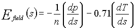
Electric field 4 : The formula from option 3 is used for half-rings that are deemed to be "collisional". For half-rings that are not "collisional", the following formula is used.
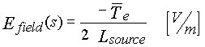
"Collisionality" is determined by an ad hoc method. If the electron temperature at the midpoint of the ring is less than a certain multiple of the target Te then the half-ring is deemed to be non-collisional. The value of this multiplier is entered in the input data file as the second entry after this option.
The source length used above is also arbitrary. The value for the initial source length is given as a multiplier of SMAX for a given ring. This is also described below. If PIN has been run then the value of Lequiv (the source equivalent length) that is calculated after PIN has been run, is used instead of this specified Lsource value.
This value specifies the length of the source to be used on the first iteration of the overriding E-field option. If PIN has been run then the calculated values of the ion source equivalent length at each end of each flux tube are used instead of this imposed value.
This value is used to decide whether a particular half flux tube is to be treated as if it was non-collisional. If the electron temperature at the midpoint is less than this value times the target electron temperature then this half flux tube will be treated as non-collisional for the purposes of this E-field option. The logical oddity arises from the fact that most of the background plasmas to which this option will be applied will have been calculated with the basic fluid assumption that the background is collisional throughout the range of solution.
This quantity defines the characteristic length for the ionization source options used in the SOL models in SOL options 12 to 15 as a proportion of the total length of the SOL.
This defines the second characteristic length for ion source options 4 and 5 which involve a combination of linear and exponential functions superimposed.
This quantity specifies the ratio of source strengths between the two discrete ionization sources that are superimposed in ionization options 4 and 5.
This quantity defines the characteristic length for the radiative source options used in the SOL models in SOL options 12 to 15 as a proportion of the total length of the SOL.
This defines the radiative loss constant used in the power loss model for SOL options 12 to 15.
This quantity is used in radiation options 2 and 3 to specify the radiation source strength relative to the total power at the plates. The exact description is in the equations under the respective radiation options.
Ionization opt 0 : Ionization constant over 0 < s < Ls * SMAX
With S0 = - N0 X V0
Ionization opt 1 : Exponential decay described by:
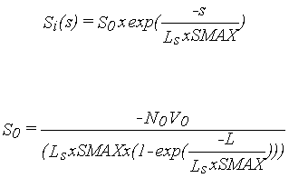
Options 2 and 3 are equivalent to the Ionization source options that can be initially specified, except that they only apply to PIN ionization data and because of this can not be specified initially since PIN data is not immediately available.
Ionization opt 2 : The PIN ionization data for each ring is normalized so that the total ionization (to the midplane) is equal to the outflow at the plate.
Ionization opt 3 : The PIN ionization data is utilized in an unnormalized form so over/under ionization on each flux tube is allowed and other effects arising from the background ionization distribution can be realized. (e.g.Flow recirculation).
In addition, the following normal ionization source options have been added, in conformance with TN740.
Ionization opt 4 : Combination of two constant sources of the type shown in option 0. The combination is described by the following equation.
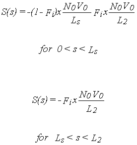
Ionization opt 5 : Combination of a constant source (as in option 0) and an exponential source (as in option 1). The combination is described by the following
equations.
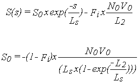
Radiative opt 0 : Constant over 0 < s < Lr * SMAX
With Pr/A given previously.
Radiative opt 1 : Exponential decay described by:
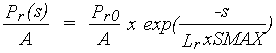
With Pr0/A given previously.
Radiative opt 2 : Constant over 0 < s < Lr * SMAX with the constant value given by the following equation.
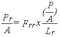
Where Frr is the radiative source strength fraction that is defined previously.
Radiative opt 3 : Exponential decay of source described by the following equations.
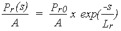
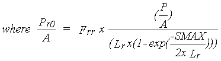
Where Frr is the radiative source strength fraction that is defined previously.
This option is another flag that is applicable only to SOL options 12 to 15. Some of the equations that are solved for the background plasma involve a square root. The quantities in the square root can become imaginary. This is representative of a transition from sub-sonic to super-sonic flow. There are two options available here. Option 0 ... the flow is not restricted and any imaginary quantities are set to zero. Option 1 ... the local velocity is capped at the sound speed and the equation that involves the calculation of the square root is not utilized if it will involve an imaginary result.
This flag turns flux recirculation in SOL options 12 to 15 on and off. Flux recirculation is allowed for via over and under ionization on each flux tube. The source characteristics when the flux recirculation option is on are specified by the next entry. Note that if a multiplication factor of 1.0 is used, this is equivalent to no flux recirculation since the ionization on the ring is equal to the net influx. However, it does allow the following entry to be used to specify different source characteristics for each ring.
Flux Recirculation Option 0: Flux Recirculation Off
Flux Recirculation Option 1: Flux Recirculation ON
The first line contains the description of the entry. The second line has headings and then the number of lines to follow in the table of flux recirculation data. The contents of the table are:
Ring number Flux multiplication factor Source Length Source Decay Length
These specify the characteristics of the ion source for each ring. The Flux multiplication factor represents the quantity of over/under ionization to be found on that ring/flux-tube. A value of 1.0 for this results in no flux recirculation. (i.e. outflux=ionization) A value of 0.5 means that there will be 1/2 as much ionization on the flux-tube as there is flux to the plates and a factor 2.0 will result in twice as much ionization. This results in flow reversal or increased flow to the plates occurring in the calculation of the background velocities in SOL 12 to 15. The Source Length and Source Decay Length are the same as are generally specified except that they can be customized for each flux tube.
Defines an arbitrary Z-point above which is considered the divertor influenced region. This is useful in calculating some quantities that are later plotted. One example is the density decay in the outermost SOL rings which is affected by the behaviour near the plates. In essence this quantity is used to define (very roughly) a near divertor region.
Specifies the ring number for ions to be injected on for injection option 2.
Lower bound injection multiplier. The ions will be injected between INJ1*SMAX and INJ2*SMAX symmetrically from both plates. Thus values of .15 and .2 will result in ion injection in the two regions 0.15 * SMAX to 0.2 * SMAX and 0.80 * SMAX to 0.85 * SMAX. For options 3 and 5, the particles will be injected between INJ1*SMAX and INJ2*SMAX, wherever that may be, including values of INJ1, INJ2 > 0.5 and < 1.0.
Upper bound as described above.
This defines the "width" in meters of the far periphery region model. Ions must diffuse cross-field this far in order to be considered as striking the walls. Different values for the OUTER and INNER halves of the main plasma may be specified. The other loss mechanisms from the far periphery region include diffusing back into the main plasma and far periphery loss to the target plates with a characteristic time specified by the following quantity.
e.g. 'TN443 X-max for Far Periphery Region (Outer/Inner)' 0.1 0.1
This defines the probability, in an arbitrary sense, that an ion entering the far periphery will experience sufficient parallel diffusion or other effects to carry it to the target plates outside the normal strike zones. The loss time is entered in units of seconds. Different values may be specified for the OUTER and INNER halves of the main plasma edge as described above for the Far Periphery width. These ions do not at this time result in self-sputtering - but the totals of such particles are recorded for later analysis. These particles may be re-launched from the corners of the targets closest to their point of entry into the Far Peripheral Region. (See the input option TN998 - Far Periphery Recycle Option described earlier.)
This specifies the diffusion coefficient (m2s-1) to be used for the far periphery region. This can be used to vary the ion sink strength of the periphery region by increasing the rate of cross-field diffusion. It can be set to any value. A value less than zero results in the diffusion coefficient in the far periphery region being the same as that used for the rest of the plasma.
This applies to the Wall Launch option (option 2). The wall is composed (presently) of a set of line segments joining the points defining the outermost SOL ring, both plates, and the outermost trap ring. Depending on the geometry, there are approximately 60 of these segments. For the wall launch, all of the target segments automatically have a probability multiplier of zero - thus preventing wall launches from occurring at the targets. (The previous statement may no longer be true in some DIVIMP versions, i.e. the targets will be included as valid sources of wall-launched particles, so it is desirable to explicitly set the launch probability modifiers for these segments to zero.) In addition, this option can be used to further restrict and/or limit the probability of neutral launch from any particular wall segment or range of wall segments. Initially, the probability of launch from a specific segment is proportional to the length of that segment. This function will modify those probabilities.
' ' ' TN487 Launch Probability modifiers for each '
' TN487 wall segment range #1 #2 mod. :- ' 2
1 28 0.0
53 60 0.0
The example above prevents neutral launch from the first half of the main wall region and from the walls of the trapped plasma region. The probability modifiers could as easily have been set to 0.1 to reduce but not eliminate the wall sources in these regions or to a value greater than 1.0 to enhance the probability of launch from these regions.
This option is also used, in combination with the following option, to specify the proportional probability of launch from each wall segment. The lengths of the wall segments are ignored and the values in this table substituted and normalized to 1.0 to generate a wall launch distribution. Finally, if the wall launch probability data is being generated directly from the results of a PIN run then this table can be used to modify those numbers via a mechanism the same as that above.
Option 0: Off - treat wall launch data as multipliers of initial wall segment launch probability which is calculated based on the relative size of the wall segments.
Option 1: On - treat wall launch probabilities as actual segment probability weightings.
When this is set to 0, the values in the table above are taken as relative multipliers of wall launch probabilities obtained through another method. If it is set to 1, then the values entered in the table above are used as the actual weight for launch from that specific wall segment with the sum total of all weights equal to one and the individual weights renormalized using that sum.
Option 2: On - Wall Segment Launch probabilty is loaded from PIN and multiplied by the probability modifiers.
Option 3: On - Wall Segment Launch probabilty is loaded from PIN and is NOT multiplied by the probability modifiers.
This is the drift velocity used if poloidal drift option 1 is specified. This velocity is applied along the field lines in the SOL. It is not imposed directly on the motion in the poloidal plane.
This entry specifies two values. These are the start and stop points of the range of effect of the poloidal drift velocity. These numbers are expressed as a fraction of SMAX along each individual flux tube. If poloidal drift option 1 is specified then this velocity is applied along the field lines in the SOL for particles in the region from Factor1 * SMAX < S < Factor2 * SMAX. For example, if Factor1 is specified as 0.1 and Factor2 is 0.9 then the poloidal drift velocity will act on particles when their S-position is in the range 0.1 < S/SMAX < 0.9.
Required for NEUT cases with Vel/ang flag 4 or 5. This allows us to adjust the cut-off on the velocity distribution at launch. This factor is normally set to 1.0 but can be adjusted up or down (Note 93).
This is part of the formula for calculating the maximum launch energy available to wall launched neutrals. It represents the mean or average expected impact energy of the particles causing the neutral wall particles to sputter.
Run PIN Option 0 : PIN is not executed from within DIVIMP.
Run PIN Option 1 : Execute PIN from inside DIVIMP and import results.
This on/off switch instructs DIVIMP, when running JET grids, to invoke PIN and pass it the background plasma characteristics. PIN then invokes NIMBUS, a hydrogenic neutral code that follows the hydrogen background given the initial DIVIMP plasma and generates the expected distribution of hydrogen ionization as well as carbon sputtering, charge exchange and several other quantities. This information can then be imported back into DIVIMP and used for several different purposes. (e.g. Recalculation of the background plasma using the PIN source ionization, calculation of charge exchange probabilities using the hydrogen neutral densities, plotting of Halpha radiation distributions, Carbon ion launch based on the distribution of primary Carbon ionization and several other possibilities.)
Note: PIN can be run from DIVIMP in a number of ways. The whole PIN module can be bound to DIVIMP and invoked as a subroutine. Alternatively, PIN can be invoked as a stand-alone program that is called from inside DIVIMP and while running, the DIVIMP process is not active. Each procedure has different advantages and disadvantages and the option chosen is architecture and processor specific.
If this option is invoked when DIVIMP is being run on a Sonnet grid then DIVIMP will write a background plasma file in the B2/EIRENE format and then invoke EIRENE to calculate the hydrogenic behaviour. EIRENE is an alternate Monte Carlo hydrogen code that is available and runs on Sonnet grids. It reads it's input from a data file in the EIRENE subdirectory. This information in this data file needs to be tailored to the specific machine specifications and contains all of the simulations parameters required by EIRENE. The name of this file is passed as a command-line parameter to the reirediv script. If a datafile name is not specified it uses a default file called "asdex.dat"
This is not a simple optional choice or specifiable value. It should contain the UNIX command to execute PIN with the appropriate options.
e.g. rpindiv
or
reirediv
The name (rpindiv) is the name of the command file that will execute PIN. The character string in UNIX is passed directly to the operating system by the SYSTEM subroutine and is then executed. The input for this option would be ignored if PIN has been bound to the DIVIMP executable and is being called as a subroutine. The script file obtains the name of the case and other information from environment variables that are set when the script that runs DIVIMP begins executing.
NIMBUS has two methods for calculating the cell areas. These two methods do NOT give the same results either for cell area or for final results from the neutral code. As a result we have added this as a DIVIMP input parameter that is passed directly to NIMBUS. IHCORR=0 will instruct NIMBUS to use the EDGE2D cell areas based on the formula Rho * Theta * Drho * Dtheta while IHCORR=1 instructs NIMBUS to use the cell polygon areas.
This option applies only to PIN runs on JET grids. It selects one of a limited set of hybrid wall specifications. The option seeks to simulate an "average" wall for JET by allowing for a wall with greater gaps between the plasma and the wall than is done when the grid file is created. The hybrid wall file contains wall descriptions for both MKII and MKIIa divertor configurations.
Hybrid Wall Option 0: Off. This option specifies the use of the Standard Wall in the grid file.
Hybrid Wall Option 1: On. Use the MKII hybrid wall specified in the ancillary input file "hybrid.dat".
Hybrid Wall Option 2: On. Use the MKIIa hybrid wall specification found in the same input file as option 1.
Hybrid Wall Option 3: On. Use the corrected MKIIa hybrid wall specification found in the same input file as option 1.
Hybrid Wall Option 4: On. Use the modified corrected MKIIa hybrid wall specification found in the same input file as option 1.
This option specifies the form of the PIN/NIMBUS puffing that will be used if NIMBUS is run. Puffing is the process of adding additional sources to the hydrogenic Monte Carlo solution that is produced by NIMBUS. (See: TN1421, 10 Sept. 1996; Memos of L.Horton of 6 Aug. 1996, 16 Aug. 1996, 20 Aug.1996, 9 Sept.1996, 27 Oct.1996,)
PIN/NIMBUS Puffing Option 0: Puffing is OFF.
PIN/NIMBUS Puffing Option 1: Puffing is ON.
Particles lost to the Albedo (PUMP) escape regions are re-injected with characteristics specified by the following quantities. The puffing will only occur on subsequent iterations of PIN because the neutral code does not know how many will be lost until it has finished and thus can not puff these at the beginning.
Puff Fraction (proportion of losses reinjected) = HPCPUF.
Puff Temperature (eV) = TPUFH.
The location of the puff is specified by the location option in combination with the segment specifiers.
PIN/NIMBUS Puffing Option 2: Puffing is ON.
A portion of the target flux is injected as a puff instead.
Fraction of target flux to be puffed = PPCPUF
Puff Temperature (eV) = TPUFH
The location of the puff is specified by the location option in combination with the segment specifiers.
This switch determines the general location of the puffed particles. The segment specifiers allow the region of the source to be fine-tuned.
PIN/NIMBUS Puff Location option 0: From main SOL walls.
PIN/NIMBUS Puff Location option 1: From private void walls.
This parameter applies to puff option 1 only. It specifies the fraction of all particles lost to the Albedo regions that will be re-injected by puffing. Thus a value of 1.0 will result in all Albedo losses from the system being re-injected. This will not work on the first PIN iteration - only on subsequent ones.
This parameter applies to Puff option 2 only. It specifies a fraction of the total target flux that is redirected into a puffed hydrogen source. A value of 0.0 should result in no extra source even if puff option 2 is in use.
This is the initial temperature of the puffed hydrogen atoms. (Note: It is not clear at this time whether NIMBUS actually puffs these particles as atoms or molecules. It is believed that they are puffed as atoms but there is no confirmation of this at this time.)
The exact meaning of these numbers is difficult to determine before running a case and becoming familiar with the particular grid. The following quantities - JHPUF1(1), JHPUF2(1), JHPUF1(2) and JHPUF2(2) are integers that define the indices of the wall segments from which puffing will occur. There are two relationships that need to be defined before these numbers can be interpreted. First, how are the indices of the outer grid segments defined inside the NIMBUS/EDGE2D code for an arbitrary grid? Second, how are the numbers specified here employed to determine valid puff segments?
1) NIMBUS puffs neutrals in these cases from the outermost boundary of the plasma grid. The neutrals are then followed towards the outer wall - reflect from the wall - and then re-enter the plasma or are removed by other methods. (i.e. Albedo or core loss). The index numbers of these segments are defined in the following manner.
All rings have the same number of cells. There is a certain number of cells along the separatrix ring on both the left and right divertor legs that are adjacent to private plasma cells. The rest are adjacent to cells in the core plasma. The number of the cell that is first adjacent to a core cell is designated as JPRGT. The number of the last cell on the separatrix adjacent to a core cell is called JPLFT. All of the cell indexing for main SOL wall launches is done relative to these two positions. In addition, although the private plasma rings in DIVIMP are treated as separate and smaller rings - in the fluid codes (EDGE2D or B2) and in the hydrogenic Monte Carlo codes (NIMBUS or EIRENE) - the private plasma rings are extensions of the corresponding core rings. Each of these combined private plasma + core rings has the same number of cells - in these other codes - as the main SOL rings. As a result, designation of the puffing segments in the private plasma is handled in a somewhat similar fashion to main SOL puffing.
2) The numbers specified in these inputs are interpreted in the following way to determine at which boundary segments the puff should occur.
In the case of main SOL puffing - Segments J - satisfying the following relationships are selected for puffing.
A) JPRGT + JHPUF1(1) ( J ( JPRGT + JHPUF2(1)
or JPLFT - JHPUF2(2) ( J ( JPLFT - JHPUF1(2)
Examples: (1) To puff from the corner of the right target up to the X-point.
JHPUF1(1) = -1000 JHPUF2(1) = -1
( Using -1000 will guarantee that all knots on the boundary of the grid from the right X-point down to the target will be selected. (Unless one is using an incredibly large grid.) A value of -1 will start the puffing at the first segment whose corresponding cell on the separatrix is adjacent to the private plasma. Unless the grid is very non-orthogonal JPRGT and JPLFT will roughly correspond to the cells just up from the Xpoint.
( To puff from the corner of the left target up to the X-point simply set
JHPUF1(2) = -1000 JHPUF2(2) = -1
( This will do exactly the same as the above except for the left target
(2) To puff from the entire main SOL wall.
JHPUF1(1) = -1000 JHPUF2(1) = 1000
( This will select the entire wall.
( Wall segments will not be selected "twice" if overlapping regions from the right and left targets are specified. To turn OFF puffing relative to one of the conditions just specify values for JHPUF that can not be satisfied.
JHPUF1(2) = 1 JHPUF2(2) = 0
( For the left target - this would require that JPLFT ( J ( JPLFT -1 which can not be satisfied and thus no segments would be selected for puffing through this condition.
(3) To puff from the top of the torus. This can be specified relative to either target and knowledge of the values of JPRGT and JPLFT as well as what numbers correspond to what boundary elements is required before these can be specified with confidence. IF - (for example) - JPRGT = 10 and JPLFT = 30 then the middle segment between these two might be roughly 20. To select this segment for puffing one could choose to set the following values.
JHPUF1(1) = 10 JHPUF2(1) = 10
JHPUF1(2) = 1 JHPUF2(2) = 0
( These should select the segment numbered 20 relative to the right target. To puff from both the 20th and 21st - set the values in the first line to the following.
JHPUF1(1) = 10 JHPUF2(1) = 11
In the case of puffing in the private plasma the following relationship is used to define which segments to puff from. The values entered for JHPUF1(2) and JHPUF2(2) have no relevance for a private plasma boundary puff source.
B) J < JPRGT or J > JPLFT
and 1 + JHPUF1(1) ( J ( NR - JHPUF2(1)
NR is the total number of segments on the ring.
Examples: (1) To puff from the entire private plasma boundary.
JHPUF1(1) = 0 JHPUF2(1) = 0
(2) To puff from the right side of the private plasma boundary
JHPUF1(1) = JPRGT JHPUF2(1) = 0
(3) To puff from the left side of the private plasma boundary
JHPUF1(1) = JPLFT JHPUF2(1) = 0
(4) To puff from the middle segments of the private plasma boundary
JHPUF1(1) = JPRGT-1 JHPUF2(1) = JPLFT+1
These are indices that specify the bounds of the region from which the extra puffing will occur. The general region is specified by the location option. These parameters allow the specific segments or range of segments to be selected. The default values of JHPUF1 and JHPUF2 together should result in the entire main plasma wall or the entire private void wall being specified as the injection region.
The default entry for this quantity is:
' PIN Puff Location Indices JHPUF1 (1 and 2) ' -1000 -1000
See the previous entry for a detailed description of the meaning and interpretation of these parameters.
These are indices that specify the bounds of the region from which the extra puffing will occur. The general region is specified by the location option. These parameters allow the specific segments or range of segments to be selected. The default values of JHPUF1 and JHPUF2 together should result in the entire main plasma wall or the entire private void wall being specified as the injection region.
The default entry for this quantity is:
' PIN Puff Location Indices JHPUF2 (1 and 2) ' -1 -1
Iterate SOL Opt 0 : Off - Do NOT calculate the SOL iteratively if PIN has been run. This allows the use of PIN data without requiring a recalculation of the background characteristics.
Iterate SOL Opt 1 : On - Re-calculate the characteristics of the SOL a specified number of times, recalculating each time after PIN has been executed. If the correct options are selected, this will use the PIN generated data in the SOL recalculation.
This specifies the SOL option to be used in the plasma background recalculation. It is allowed to differ from the SOL option originally specified. Of course, if a SOL option is chosen that does not use the data generated by iteration then the calculated background plasma will be unchanged. This may be useful wen trying to stabilize the effect of PIN puffing. If this option is specified as "-2" then the iteration will automatically use the same SOL option as was specified for the first iteration.
This is the same as the ionization source options specified previously for SOL 12 to 15, except that only ionization options 2 and 3 are meaningful. Option 2 will normalize the ionization data on the flux tube so that the total ionization is equal to the total flux to the plates. This then ensures no flux recirculation and simply uses the PIN data to distribute the ionization along the flux tube. Option 3 takes the PIN ionization data directly (it is not adjusted or normalized except to convert to MKS units) and allows over and under ionization to occur and thus allows for the possibility of flow reversal and its effects on the background plasma characteristics.
This quantity specifies the number of iterations that will be made in a DIVIMP SOL option -> Pin -> DIVIMP SOL option iteration sequence in an attempt to generate a convergent background solution with the aid of the hydrogenic neutral code.
This table specifies target co-ordinates for each ring. The first line is a comment. The second contains a comment and the number of lines in the table. The rest of the lines contain the co-ordinates of the targets for each ring. For this data to be used, the target option must be set appropriately and the geometry option set to -1. The contents of each line in the table are:
Ring number R,Z Outer target R,Z Inner target
The R,Z values are specified in meters. There are then 5 numbers on each line of the table. Target points must be specified for each ring.
This table specifies the set of wall segments that will make up the wall. The first line is a comment, the second is a comment plus the number of lines in the table, the rest are the R,Z coordinates of the end-points of the wall segments, one end-point per line. The end-point of the first section is the corner point of the outer plate. The sections then number clockwise from that point to the outer corner point of the inner plate. The wall in the private plasma cannot (at this time) be independently specified. Furthermore, the targets are assumed to be part of the wall.
This table specifies the points that will be used either for trap wall option 3 - where a neutral wall is specified in the trap region or for the second wall in an ITER double null geometry. The first line in the input is a comment, the second is a comment plus the number of lines in the table, the rest are the R,Z coordinates of the end-points of the wall segments, one end-point per line. These points are joined by line segments and connected to the inside corners of the targets to give a continuous wall surface for neutrals inside the trap region.
This parameter limits the number of iterations or generations for which a sputter fragment can exist. The purpose of this is to limit the CPU time for cases using recycling gases with high YMF values. Recycling gases and pumping rates are simulated through two mechanisms. First, they are defined to have a sputter yield of 1.0. This means that every particle striking the target would be relaunched. This runaway condition is limited by applying a yield modifier of, for example, 0.95, which gives an effective pumping rate at the targets of 5% of the incident recycling impurity flux. These particles will only be followed until their weight is less than the sputter threshold (usually 0.1) or their weight reaches (YMF)^n where n is the specified number of sputter generations. This is implemented by simply ceasing to follow the ion fragment after the specified number of target collisions.
Some of the higher numbered SOL options may allow calculations of the background on a much finer grid than the bin system that is used for particle accounting. In order to save storage, these high resolution background values are not stored for every ring. This parameter specifies the one ring of interest for which these high resolution background data will be stored. This is useful for debugging purposes and for looking at transitional effects which are not visible on the scale of the larger bin system. (Not available for all SOL options)
This specifies the exponential power of the cosine distribution used to inject particles in V/A flag options 12 and 13.
This number is used to multiply the velocity of all initial impurity neutral launches which use Velocity/Angle flags 14 or 15. It does not apply to the velocity assigned to any recombined impurity neutrals.
This quantity multiplies the velocity assigned to recombined impurity neutrals.
The first line specifies the number of entries. This is limited by the value of MAXPTS, set in the PARAMS common block. The rest of the data, one number per line, specifies the S-bin values at which the leakage information will be collected. When an ion exceeds the value of S along the field line that is listed in this table then the count for that distance will be incremented by the weight of the particle. The particle will not be counted more than once for any of the distances. The distances are specified in meters.
e.g.
' ' 'Set of S-distances for ion leakage diagnostic (m)'
'TN982 Number of S-values :-' 5
1.0
2.0
3.5
6.0
13.35
The limitations on these values are that they be greater than zero and be recorded in ascending order.
The following is based on a simple prescription specified in TN988 for a detached plasma. The parameters here specify various characteristics of this prescription which is implemented through SOL option 21 described above. The detached plasma prescription defines three regions where different behaviours, as defined by the following quantities are implemented. The detached plasma description has been further refined to allow the distances to be specified as either absolute lengths in meters along the grid or as a fraction of the total distance along the ring in either an S (along the field line) or P (poloidal) coordinate system. The option has also been further refined to allow different values for the OUTER and INNER SOL to be defined.
This option determines how the values entered for the distances L1, L2 and Lv will be interpreted.
DP Length Scaling option 0: Distance values are interpreted as a fraction of Smax.
DP Length Scaling option 1: Distance values are interpreted as a fraction of Pmax.
DP Length Scaling option 2: Distance values are interpreted as absolute distances along S.
DP Length Scaling option 3: Distance values are interpreted as absolute distances along P.
The Electron temperature at the upper boundary of region A is this quantity times the electron temperature at the target. The electron temperature ramps linearly between these two values in this region. Different values may be specified for inner and outer (JET=OUTER/INNER, Sonnet=INNER/OUTER).
The ion temperature at the upper boundary of region A is this quantity times the ion temperature at the target. The ion temperature ramps linearly between these two values in this region. Different values may be specified for inner and outer. (JET=OUTER/INNER, Sonnet=INNER/OUTER).
The plasma density at the upper boundary of A is this ratio times the density at the target. The density ramps linearly from the value at the target to this value at the boundary. Different values may be specified for inner and outer (JET=OUTER/INNER, Sonnet=INNER/OUTER).
The plasma density in region A usually rises linearly from the value at the target if this input is specified as 1.0. However, specifying a value other than 1.0 will result in profile of the form: N(s) = Nt + Nt (Nrat-1) (s/S1)^Alpha. Different values may be specified for inner and outer (JET=OUTER/INNER, Sonnet=INNER/OUTER).
This ratio defines the amount of power radiated in region B, as a function of the power flux onto the targets (Q0). Different values may be specified for inner and outer (JET=OUTER/INNER, Sonnet=INNER/OUTER).
Upper bound of region A is this Ratio times SMAX. This is also the lower bound of region B. Different values may be specified for inner and outer. (JET=OUTER/INNER, Sonnet=INNER/OUTER).
Upper bound of region B/ lower bound of C as defined above. Different values may be specified for inner and outer (JET=OUTER/INNER, Sonnet=INNER/OUTER).
The background flow velocity ramps to 0.0 at this Ratio times SMAX from the value it has as calculated at the upper bound of region A. Different values may be specified for inner and outer (JET=OUTER/INNER, Sonnet=INNER/OUTER).
The background flow velocity in region A is usually controlled by conservation of flux and is described by equation (1). This option multiplies the velocity at position L1 by the given factor. It would usually be used if one supected that there was a loss of flux in region A due to cross-field drifts or other effects. The velocity in region A is then calculated lineraly based on the value of V0 at the target and a value of V1 at position L1.
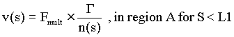
These inputs allow the parameters used for the detached plasma model to be specified independently on a ring by ring basis for both the inside and the outside. This is necessary at times because not all flux tubes are equally detached and it was found that changing the detached plasma parameters for each ring could result in better agreement with experimental observations. Each line of the input specifies the ring, Te-ratio, Ti-ratio, N-ratio, Q-ratio, L1 and L2 fractions, the Lv value, and the velocity multiplier. The exponent of the density equation can not be specified independently for each ring at this time. The R11 input line specifies data for the INNER-JET (OUTER-SONNET) while the R12 input line defines the data for the OUTER-JET (INNER-SONNET) halves of the rings.
'+R11 ' 'TN DETACHED Plasma Specifications on a by ring basis'
'TN INNER - IR TER TIR NR QR L1R L2R LVR VBM - N= ' 2
10 1.0 2.0 1.0 0.1 0.2 0.25 1.0
11 1.0 3.0 3.0 0.1 0.15 0.2 1.0
'+R12 ' 'TN DETACHED Plasma Specifications on a by ring basis'
'TN OUTER - IR TER TIR NR QR L1R L2R LVR VBM - N= ' 3
11 2.0 2.0 1.0 0.1 0.2 0.25 1.0
12 1.0 3.0 3.0 0.1 0.15 0.2 1.0
15 1.0 2.0 2.0 0.1 0.15 0.2 1.0
Normally this quantity will be calculated by the DIVIMP run. However, for purely ion injection cases it is not possible for DIVIMP to calculate an absolute calibration factor for the results. This quantity can be externally calculated or deduced for a given shot or other simulation and then entered into the code to check the absolute values of the results generated by DIVIMP against the experiment. This quantity may instead be interpreted as the Power onto the targets when SOL option 21 is used. This also yields an absolute calibration factor but has the additional effect of easing the definition of the region B power loss in terms of plate target power. The absolute factor would have values on the order of 1019 for ABSFAC and 2.0 X 105 for the power onto the targets.
These quantities are now usually included at the beginning of a SONNET style grid file. If there are no numbers present in the grid file then the values specified here will be used. The values in the grid file will always take precedence over numbers specified in the input file.
The following set of values specify the characteristics of grids created by the Sonnet mesh generator. This generator creates grids compatible with the B2/Eirene code combination. Thus the grid is initially stored in an indexed XY array that needs to be divided into three segments for DIVIMP. The core plasma, the trapped or private plasma and the SOL. This first parameter specifies the number of rings in the Sonnet geometry file. (This would typically be the number of rows in the Sonnet mesh- since the Sonnet mesh is indexed from 0 to n - the number entered here is n+1)
This quantity specifies the number of knots along each ring. It is typically larger than the number of rings but there is no requirement that this be true. Again, since Sonnet numbers from 0 to m, the number entered here will be m+1.
This is the last ring composing the trapped and core plasma regions. (The last ring containing a B2 cut line.) Note: the terminology comes from B2 where the square geometry has two regions - the SOL is usually the upper half and the trapped plasma and core are the lower half. However there is no direct coupling between the trapped plasma and the core and so there are "insulating" lines (cut lines) inserted separating these regions on these rings. That is why they are termed "cut rings". DIVIMP needs to split these rings into core and trapped plasma rings which DIVIMP deals with separately and so needs to know the ring number to stop this procedure at - again since Sonnet grids are numbered from 0 - this number is the cut ring index number +1.
This index specifies the last element belonging to the trapped plasma region on the cut rings. All the elements greater than this and less than cut point 2 belong on the core plasma rings.
This specifies the first point after the second cut belonging to the trapped plasma rings. (see above.)
This specifies the number of fluid solution that will be found in the B2/UEDGE background plasma solution that will be read by the case. Specifying this number enables the input file to be read correctly and will allow the code to load the impurity fluid results for comparison with the DIVIMP results.
This switch instructs DIVIMP to try to read in an auxiliary plasma input file. This file will typically contain additional information that is not included in the plasma file. For example, at this time, when this option is activated for a JET grid and EDGE2D background , DIVIMP will look for a file connected to unit #12 that contains the EDGE2D down flux information for the case. The expected name for this file is "shots/<gridfile>.<plasma descriptor>.aux". For an UEDGE case, the auxiliary file is expected to contain a variety of information in a B2 plasma file format. This includes such items as the hydrogenic neutral density, the carbon neutral density and the 2-D carbon neutral production rate on the grid among other items.
This quantity is used for some simple options to arbitrarily turn off the temperature gradient force or velocity diffusion for values of S > stgrad * smax ... and yet still allow a temperature gradient for S > stgrad * smax and temperature gradient forces for the region less than Stgrad * smax (from both targets). This option was used in testing some specific modelling conditions involving various collision options and force balance effects and is not recommended for regular use.
SOL Option 22 is a multi-parameter OSM (Onion Skin Model) that uses a Runge-Kutta based solver to numerically evaluate the one-dimensional fluid equations. Starting from given target conditions and including a wide variety of effects, the option generates a complete background plasma solution for density, ion and electron temperature, parallel flow velocity and parallel electric field. The solutions represent what appears to be a reasonable approximation to the conditions found in the edge - and as such should be a useful research tool in examining the behaviour of impurities as well as the hydrogenic species behaviour in the reactor. It is especially useful for comparing predicted observables to actual experimental results. However, it is important to verify that the solution generated for a given set of target conditions does appear to be reasonable. The code can not definitively evaluate the legitimacy of a given background solution - this requires that the user look at the solution generated and evaluate it in the context of the physical situation being modelled. The following are the input parameters to SOL Option 22 in the order they are found in the input file. SOL option 22 itself is selected by setting the SOL option input parameter to 22.
There are three other options that are not a part of the SOL Option 22 input block that affect the functioning of SOL Option 22. These are the Run PIN option, the Calculate SOL iteratively switch and the input item for the number of times to iterate the SOL calculation. These options are described in the documentation above and are not repeated here.
List of Parameter Values for SOL option 22:
Option 0: 0=Off - Te and Ti are calculated separately applying the source terms that are appropriate for each species in the independent heat transport equations.
Option 1: 1=On - Te and Ti are forced to be equal each other at all points - source terms for the two are combined into one heat transport equation.
This is the value of the flow velocity initially imposed at the target as a multiple of the target sound speed. (A value of 1.0 is usually used initially for the target mach number). If the iterative mach solver option is turned on - then the value of the mach number at the target may move from this initial value as the solver searches for a smooth solution at the point of the super-sonic to sub-sonic transition.
When the iterative Mach solver is turned ON the values of the Mach number are initially stepped by this amount as the solver conducts its search. (Typically this value is set to 0.1 - so that mach number solver initially proceeds in increments of 0.1 - trying to bracket the critical target mach number.)
The solver resolves the Mach number to this level of "accuracy". (Usually 0.00001 is used) . Due to instabilities encountered in the equations, the solution is found to bifurcate at the value of the critical mach number - even for exceptionally small changes in the Mach number of 10-10 or less. As such, it has proven difficult to actually find a solution that smoothly traverses the transition region when examined on a small scale length. Usually, the solutions containing sonic transitions are adequate given the granularity of the grid on which the simulation is taking place.
This option controls the interpretation of the length entries of the ionization source characteristics that are entered below.
Option 0: Source lengths are interpreted to be in absolute units (meters)
Option 1: Source lengths are expressed in relative units as a proportion of SMAX for each individual ring.
The interpretation of this number depends on the analytic ionization option selected. This number is interpreted as the starting S position (relative or absolute) of the ionization source. In the case of the triangular or rectangular ionization sources there will be no ionization for S less than the value listed here.
This specifies the end of the ionization source or effectively its length if the ionization source starts at 0.0. All of the source lengths are limited to a maximum of 1/2 of the field line. This is because the solver operates from each target out to the point mid-way from both targets along the field line and would ignore any source contributions outside this range.
This is the characteristic decay length or the width factor of the ionization source depending on which ionization source option has been selected. In particular, this value is used for the decay length of the default Exponential Decay Ionization Source.
Length of radiating source region in meters.
Characteristic decay length for the exponential decay radiation source - Prad Option 1.
This specifies the total power radiated by the radiation source term in terms of the power flux onto the target. A value of 3.0 means that the integrated strength of radiated losses will total 3 times the total target power flux for the specific ring.
The Garching model for impurity radiation uses the following formula. The quantities Alpha, the base temperature and the two exponents are read from the input data file using these lines. The actual option is selected through the Radiative Source Switch (Prad Option 2) which is found below.
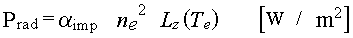
This is the base temperature in the above radiation formula. It is typically 15 eV.
This is the first exponent in the above radiation formula. It is typically 1.5.
This is the second exponent in the above radiation formula. It is typically -3.
Ion sheath heat transmission coefficient correction factor. This factor adjusts the total ion heat flux onto the targets by adjusting the Gamma factor for the ion heat sheath transmission. It is usually set to zero.
The formula used to calculate Ion heat flux is (where M is the target Mach number):
Electron sheath heat transmission coefficient correction factor. This factor adjusts the total electron heat flux onto the targets by adjusting the Gamma factor for the electron heat sheath transmission.
Ion charge exchange is one of the power loss mechanisms that play a role in the ion heat equation. Roughly 3/2 kT is removed for each charge exchange event. This coefficient can be used to increase or decrease the number of charge exchange events occurring and thus adjust the significance of the associated terms. This factor is used in most of the Pcx Options. This is usually set to 1.0.
The recycling source coefficient should be set to 1.0 in most cases. It represents the proportion of target flux that is being recycled into the ionization source. This feature is particularly useful and necessary when dealing with PIN or EDGE2D ionization results where the recycling fraction was intentionally reduced to obtain a "flow" from the core. Effectively assuming that a certain proportion of the total ion source is effectively entering the system through the core and not through the ionization of particles recycling at the targets. This factor is used to multiply the ionization sources obtained from either PIN or EDGE2D and thus is a factor in determining the amount of cross-field flow required to equalize the sources and sinks on the field line. This cross-field flow can be added as a source through the use of the various Gperp options.
This factor multiplies the Pei power transfer term in the Te and Ti heat equations, thus allowing some flexibility in the strength of equipartition. (Pei may be turned on and off completely through the use of the Pei Option Switch described below.) The value SHOULD always be set to 1.0 unless there is a good reason for changing it or the objective is to match results from other sources which may have used an alternative form of equipartition.
This switch affects the default action of the R-K solver when it calculates conditions that result in an imaginary quantity for the density. This condition likely arises in the system of equations because not all of the physical effects are necessarily included. Furthermore, the models of the included physical processes, although as good as possible, are approximations in many cases. Thus, over small scale lengths or in regions near or beyond a super-sonic/sub-sonic flow transition region the relationship between pressure, flux, Te and Ti can result in no solution for the density. This is unphysical since it is believed that the density is a smoothly varying physical quantity. However, the product of the density and the velocity, ( = nv (flux), is a well-defined quantity at all points. When the equations yield an imaginary n, the solver assigns a value of v, either equal to the local sound speed or equal to the last value of v that was correctly calculated and from this value for the velocity and the known parallel particle flux, calculates a local value of n. These methods seem to produce reasonable solutions of n and v for the cases that have been examined.
Velocity Error Switch Option 0 : Cs
Velocity Error Switch Option 1 : Const
Velocity Error Switch Option 2 : Pressure Adjustment - additional pressure required carried forward.
Velocity Error Switch Option 3 : Pressure Adjustment - additional pressure required is not carried forward.
This parameter is used with power distribution options 7, 8 and 9. It specifies the starting position, as a function of SMAX for the ring, of the region where the power being carried by the electrons and ions should start reducing. This can be used for distributing the target power flux and any volume power terms if present. The simplest assumption in SOL 22 occurs when there are no heat sources or sinks along the ring and the power reaching the target is carried by the electrons and ions all the way from the mid-point ("top"). This is an adequate first order assumption - but in fact the power carried to the target or being radiated along the length of the ring would have likely entered the ring with some spatial distribution and not at the top. The power distribution options address the question of distributing this power loading.
This specifies the position (times SMAX for the ring) at which all the power has been input. (See previous entry and notes on power distribution options.)
Gperp is the amount of additional cross-field source or sink that is necessary to force particle conservation on an individual flux-tube. This additional source or sink can be distributed in a variety of ways - determined by the Gperp option described below. This parameter specifies the fraction of the required amount that will be added in a rectangular distribution in a region defined by the following two parameters. The remainder is added uniformly over the length of the flux tube. This parameter is used with Gperp options 5 and 6.
For Gperp options involving a specified region for adding the perpendicular flux - this option defines the start of this region. The starting point is calculated by multiplying this factor times the value of SMAX for the ring.
For Gperp options involving a specified region for adding the perpendicular flux - this option defines the end point of this region. The ending point is calculated by multiplying this factor times the value of SMAX for the ring.
If the "extra" source/sink switch is turned on then an additional source is added to the ring over a specified region and a sink of exactly equal magnitude is removed over a second specified region. This artificial addition of a source and sink does not affect the global particle balance on a ring but will significantly affect the flow pattern.
This first parameter specifies the magnitude of the source/sink to be applied to the ring. The magnitude is expressed as a fraction of the total target outflux for the entire flux tube. Both source and sink will exactly equal the particle influx specified by this parameter resulting in a net influx/outflux of zero. This option is designed to redistribute the influx/outflux on the flux tube in order to replicate experimentally observed flows at the mid-plane.
This entry consists of two numbers in the range [0.0,1.0]. These are then multiplied by the Smax distance for the ring to obtain the region over which the additional source is uniformly added.
This entry consists of two numbers in the range [0.0,1.0]. These are then multiplied by the Smax distance for the ring to obtain the region over which the additional sink is uniformly removed.
If the Start Knot Index for EDGE2D Compatibility Option
This parameter specifies the starting knot number for EDGE2D compatibility option 9. SOL option 22 will start solving at this knot using the fluxes and background plasma conditions taken from EGE2D at this point. The following option describes what is done with the cells between the target and the starting point of the solver.
This option specifies how the plasma background is calculated for the cells between the target and the starting point of the SOL 22 solver when compatibility option 9 is invoked.
Fill Option 0: Linear interpolation from the target conditions extracted from EDGE2D to the solver solution at the knot where the solver starts.
Fill Option 1: Extrapolation. The cell values and target conditions are linearly extrapolated back to the target from the values found by the solver in the first two cells for which it has a solution. If this extrapolation would yield negative target temperatures then the values are held constant from the start cell to the target at the values for the solver start cell.
Fill Option 2: Constant at solver start cell values. The cells from the target to the start cell are held constant at the start cell values. The target conditions themselves are extracted from the EDGE2D solution and are not changed.
Fill Option 3: Constant at EDGE2D target values. The cells from the target to the start cell are held constant at the EDGE2D target values.
It has been found that some of the power terms calculated by various sources may be erroneous or very destabilizing for the solver at very low temperatures. As a result this cutoff temperature was introduced such that for any cell with a Te < Qe Term Tcutoff - the contributions from PINQE would be set to zero.
It has been found that some of the power terms calculated by various sources may be erroneous or very destabilizing for the solver at very low temperatures. As a result this cutoff temperature was introduced such that for any cell with a Ti < PINQID atomic Tcutoff - the contributions calculated for the atomic ionization portion of PINQID would be set to zero.
It has been found that some of the power terms calculated by various sources may be erroneous or very destabilizing for the solver at very low temperatures. As a result this cutoff temperature was introduced such that for any cell with a Ti < PINQID molecular Tcutoff - the contributions calculated for the molecular ionization portion of PINQID would be set to zero.
It has been found that some of the power terms calculated by various sources may be erroneous or very destabilizing for the solver at very low temperatures. As a result this cutoff temperature was introduced such that for any cell with a Ti < PINQID recombination Tcutoff - the contributions calculated for the recombination portion of PINQID would be set to zero.
It has been found that some of the power terms calculated by various sources may be erroneous or very destabilizing for the solver at very low temperatures. As a result this cutoff temperature was introduced such that for any cell with a Ti < PINQID charge exchange Tcutoff - the contributions calculated for the charge exchange portion of PINQID would be set to zero.
This cutoff term is also used for the PINQI quantity read in from NIMBUS. For Ti < Qi Term Tcutoff - the contributions from PINQI would be set to zero.
PINQID charge exchange option 1, described in the section on SOL 22 switches, requires a reference temperature in order to calculate the power loss through the ion charge exchange channel.
This is the minimum temperature allowed in the solver. If temperatures lower than the value entered here are encountered within the solver they are set equal to this value. Usually this is set to zero. However, in some extreme cases, usually when modelling detachment, recombination and charge exchange processes can result in cases where power and particle balances will result in a falling ion temperature - to such an extent that the temperature would be negative unless this is prevented.
This quantity specifies the maximum fractional temperature drop that is allowed on a ring. If the temperature drops to less than this fraction of it's maximum value then the solver generates an error condition and exits for this flux tube. At this point the error correcting code can adjust the solution options for this flux tube and re-run for this ring. This requires that the error correction option be activated. The solver records the maximum temperature reached along the ring and checks to see that the calculated temperature does not fall below this fraction of that value. Specifying a value of 0.0 will turn off this option. Specifying a value of 1.0 is the same as requiring only solutions with constantly increasing or at least constant temperatures along the field line.
This is an arbitrary variable factor used to scale the momentum loss term if desired. It can be used to enhance or decrease the effect of calculated momentum loss terms for the purposes of exploring the effect, comparing with other codes utilizing a somewhat different model or to proportionally allow for other physical effects that are not a part of the current model. It should usually be set to 1.0. See the descriptions of Momentum Loss formulae in the DIVIMP guide and for the Momentum loss options below.
This is a variable factor used in the simplified formulae for momentum loss. See the descriptions of Momentum Loss formulae in the DIVIMP guide and for the Momentum loss options below.
Length of momentum loss region for the simpler analytic momentum loss options. (0.25 is a typical value - distributing the momentum loss over the first quarter of the ring.)
The decay length is used as the scale length or exponential characteristic length in some of the analytic momentum source options. See the descriptions of Momentum Loss formulae in the DIVIMP guide and the descriptions of the Momentum Loss Option switch in the section below.
This is an extra correction multiplier for the number of CX momentum events (and thus pressure loss) to ionization events for those momentum sources that depend on the ionization source. It is typically set to 1.0 unless one wants to increase the effectiveness of the momentum loss term.
At low Te the ratio of CX events to ionization events increases at a great rate - dependent on the local electron temperature. In order to replicate this and thus approximately estimate the momentum loss terms - it is necessary to increase the number of momentum transfer events occurring / ionization. The following formula is used to give the ratio of momentum loss to ionization rates.
For temperatures above the Tcut value specified in this entry - the multiplier is equal to 1.0. Below this temperature - the multiplier increases rapidly. However, behaviour at very low temperatures is not well understood. So the following entry cuts off the multiplication factor for temperatures lower than the given cut-off.
The CX multiplier described in the previous entry returns a value of 1.0 for temperatures below this cut-off value.
This is a factor to allow for scaling of the electron energy loss term that is returned by the hydrogenic neutral code. It should usually be set to 1.0.
This option applies to PRAD option 3. Prad option 3 defines the radiative loss term to be a multiple of the PINQE (electron energy loss term that is calculated by PIN. This parameter specifies the value of the multiplier.
This is the initial number of Runge-Kutta steps that the solver assumes between each consecutive grid point where a solution is necessary. The solver will increase or decrease the actual step-sizes taken depending on errors encountered and the solver's estimate of the error on any given step. The usual value entered here is 100.
The general options to the solver are invoked by a series of switches that can each take a number of values for each option. The following section describes the switches, their functions and the various acceptable input values.
There are, at present, eleven different ionization options that can be chosen. This number changes so if the code version is newer than this documentation then you might want to examine the code and the ECHOSOL subroutine for additional information.
Option 0.0: Exponential Decay The ionization source is modelled as an exponential decay falling away from the target. This is the simplest and usually the default option. Lengths of the source region and the characteristic decay are as specified above in the ionization parameter section.
Where S0 is the normalization factor - usually set so that the integral of the ionization source along the ring will equal the flux to the targets.
Option 1.0: PIN data Normalized PIN data is read in and normalized to the target flux for each end of the flux tube individually.
Option 2.0: PIN data Unnormalized PIN data is read in and used as is - there is a global normalization check performed to make sure that the integral of ionization over the entire grid is equal to the particle sources (usually target flux and recombination).
Option 3.0: Triangular Source The ionization is distributed in a triangular shape between the Start position of the ionization Source to the End position (specified as parameters above). The integral over the triangle is normalized to the target flux for each end of the flux tube.
Option 4.0: Rectangular Source The ionization is a rectangular shape from the Start of the ionization source to the End of the ionization source region. (Start and End are parameters specified above). The strength of the ionization is constant over the region. The integral of the source is normalized to the target flux for each end of the flux tube.
Option 5.0: Algorithmic Source 1 This option chooses between the Triangular and Rectangular sources and their characteristics applied to these sources based on the target conditions for the half-ring.
The algorithm used is the following:
If ntarget > 1.0e19 then a Triangular Source (option 3 is used).
If Te < 1.3 eV
Start of Triangular Source = 13 - 10 X Te
End of Triangular Source = Start + 2.0
If Te >= 1.3 eV
Start of Triangular Source = 0.0
End of Triangular Source = 2.0 meters
If ntarget <= 1.0e19 then a Rectangular Source (option 4 is used).
If Te < 10 eV
Start of Rectangular Source = 0.0
End of Rectangular Source = 13.0 - Te
If Te >= 10 eV
Start of Rectangular Source = 0.0
End of Rectangular Source = 2.0 meters
Option 6.0: s5 Gaussian This option selects a source of the form s5 exp(-s2) (i.e. s5 times a Gaussian distribution). This may be a good analytic source for low temperature cases where the ionization is somewhat removed from the target. However, the almost complete lack of ionization immediately adjacent to the target can cause problems with the solver. The solver often needs to use a very small step-size in these regions and may run into conditions resulting in imaginary solutions. Either of these can significantly increase the computational time required by SOL 22 to provide a background plasma solution. The "Decay Length of Ionization Source" specified above is used as the width or decay factor for this distribution - it approximately specifies the location of the peak of this distribution. The source starts at S=0 and is cutoff at the End of ionization source specified in the parameter section. The total integrated source strength for each half ring is normalized to the target flux for each end of the flux tube. This form of a Gaussian was chosen for the source because of it's reasonable spatial distribution and because it is analytically integrable.
where

Option 7.0: Algorithmic Source 2 This option chooses between the s5 Gaussian and Rectangular type sources based on target conditions. It is otherwise similar to option 5.0.
The algorithm used is the following:
If ntarget > 1.0e19 then an s5Gaussian Source (option 6 is used).
If Te < 1.3 eV
Start of s5Gaussian Source = 0.0
End of s5Gaussian Source = End of 1/2 ring
Width Factor = 14.0 - 10 ( Te
If Te >= 1.3 eV
Start of s5Gaussian Source = 0.0
End of s5Gaussian Source = End of 1/2 ring
Width Factor = 1.0
If ntarget <= 1.0e19 then a Rectangular Source (option 4 is used).
If Te < 10 eV
Start of Rectangular Source = 0.0
End of Rectangular Source = 13.0 - Te
If Te >= 10 eV
Start of Rectangular Source = 0.0
End of Rectangular Source = 2.0 meters
Option 8.0: PIN Source Strength This option runs PIN to obtain the total ionization on each field-line, affected only by global normalization. It then applies the ionization option specified in the initial ionization option on each subsequent iteration except that instead of the ionization source being normalized to the target flux, it is normalized to the amount of ionization on the 1/2 flux tube as determined from PIN.
Option 9.0: Offset s5Gaussian This ionization option is almost the same as option 6.0 except that the width factor for the distribution is also simultaneously used as a zero offset. The form of the ionization source is the following. The source is normalized (by setting the factor A) so that the integral over the source is equal to the target flux for the 1/2 ring.
and
Option 10.0: Algorithmic Source 3 This option chooses between the Offset s5Gaussian source and the Rectangular source based on target conditions.
The algorithm used is the following:
If ntarget > 1.0e19 then Offset s5Gaussian (option 9 is used).
If Te < 1.3 eV
Start of s5Gaussian Source = 0.0
End of s5Gaussian Source = End of 1/2 ring
Width Factor = 28.0 - 20 ( Te
If Te >= 1.3 eV
Start of s5Gaussian Source = 0.0
End of s5Gaussian Source = End of 1/2 ring
Width Factor = 2.0
If ntarget <= 1.0e19 then a Rectangular Source (option 4 is used).
If Te < 10 eV
Start of Rectangular Source = 0.0
End of Rectangular Source = 13.0 - Te
If Te >= 10 eV
Start of Rectangular Source = 0.0
End of Rectangular Source = 2.0 meters
This ionization option is used to generate the seed plasma solution ("Starter Plasma") for PIN iteration. Since PIN needs a plasma solution before it can determine the hydrogenic ionization and power loss terms, which will be used as the OSM iterates to calculate better estimates of the background plasma, it is necessary to start with an analytically calculated plasma. This option specifies the ionization source to be used when the ionization option is set to 1.0, 2.0 or 8.0.
Options: Match Previous These are identical to the options above. Options 1, 2 and 8 are invalid as the initial ionization option.
In addition, the following ionization source options are available on the initial iteration.
Option 11: Edge2D Ionization Source This option is only useful when trying to directly compare OSM model solutions to Edge2D background plasma solutions. This option requires that the Edge2D data be read into DIVIMP so that the ionization source, as it was used by Edge2D in it's calculations, is then available within DIVIMP for use by SOL option 22. This can reduce or eliminate differences in the solutions caused by differences in the source terms.
Option 12 : PIN is run once with EDGE2D background in the SOL before SOL 22 is invoked. This generates power terms but does not include puffing.
Option 13: PIN is run twice with an EDGE2D background in the SOL before SOL22 is invoked. This generates power terms and a more correct puffing approximation.
Option 14: PIN is run twice with an EDGE2D background everywhere (SOL+CORE) before SOL 22 is invoked. This option must be used in conjunction with core option -1 or else the EDGE2D solution in the core will be overwritten.
Option 15: Ionization source data is read from the EDGE2D input for the case. The EDGE2D plasma solution is assigned as the "previous" solution so that cross-field gradient dependent perpendicular flux and power terms may be assigned correctly.
Option 16 : PIN is run once with previously generated DIVIMP background in the SOL before SOL 22 is invoked. This generates power terms but does not include puffing.
Option 17 : PIN is run once with previously generated DIVIMP background in the SOL before SOL 22 is invoked. This generates power terms but does not include puffing. In addition, each subsequent iteration through the solver will ensure that the original solution is used for the core and private plasma regions. Only the main SOL plasma is allowed to evolve. This option pre-dated the piece-wise background plasma options and it is recommended that one use the piece-wise method of combining plasma solutions to obtain the same effect.
This option allows one to specify a different analytic ionization model in the private plasma from what is used in the main SOL. The physics in the private plasma are very different from the main SOL and a very different background plasma may result. This makes using the same initial ionization source option in these two regions somewhat invalid since one might expect quite different behaviour. These options will only be active IF the Tgrad option has been set to "1" so that SOL22 will be applied to both main SOL and PP rings.
Option -6.0: A uniform plasma is assigned to each ring in the private flux zone from a listing of temperature and density in the divimp input file. The target values are set from the bulk plasma values.
Option -5.0: A uniform plasma is assigned to each ring in the private flux zone from a listing of temperature and density in the divimp input file. The target values are not modified.
Option -4.0: Experimental Thomson data is applied to the private plasma. the average value of the Thomson data on a ring is assigned to every cell on the ring. Rings without data are interpolated. The target flux is assigned using the thomson data.
Option -3.0: Experimental Thomson data is applied to the private plasma. The average value of the Thomson data on a ring is assigned to every cell on the ring. Rings without data are interpolated. The target flux is specified in the divimp input file.
Option -2.0: Specified Plasma This option uses a completely arbitrary, specified background plasma for the private plasma region. This specification is exactly the same as Trap Temperature Gradient Option 2 and uses all the coefficients that are defined for that option. In practice, this option is identical to using Tgrad Option 2. Historically, this option was developed first and then later generalized into Tgrad Option 2 for use in combination with other SOL options.
Option -1.0: Matches Previous Same as Initial Ionization Option if the Main Ionization option has been set to 1.0, 2.0 or 8.0. Otherwise, the private plasma ionization option is set to the value of the Ionization option.
Options 0.0 to 15.0: These are identical to the options outlined in the Initial Ionization Option.
This option turns on/off the first convection term in the fluid equations for both ions and electrons.
Option 0.0: Off
Option 1.0: On
This will turn on/off the kinetic convection term for ions.
Option 0.0: Off
Option 1.0: On
This option turns on and off the radiative loss source term. The radiative loss term imposes a certain amount of power loss in each cell that could be due to radiative power losses. There are a couple of options supported.
Option 0.0: Off - No Radiative Losses
Option 1.0: On - Exponential Decay radiation source. The radiation falls off exponentially away from the target. The length of the decay source, the characteristic decay distance of the exponential, and the total integrated power radiated are all specified in parameters described earlier in the document.
Option 2.0: On - The power loss is described by the Garching Model. The equations and their parameters are described in the parameter section.
Option 3.0: On - Radiative losses are proportional to PINQE. The multiplier is specified by this parameter.
This option estimates the power loss for electrons due to hydrogenic ionization.
Option 0.0: Off Off - No power loss due to hydrogenic ionization.
Option 1.0: On On - Analytic calculation of electron energy losses due to hydrogenic ionization. The analytic formula used to estimate this is the following.
Option 2.0: On - PINQE On - PINQE used - Option 1 (ANALYTIC) is used on the seed plasma iteration. For subsequent iterations the electron energy losses as reported by PIN are used.
Option 3.0: On - PINQE On - PINQE used - Option 0 (OFF) is used on the seed plasma iteration. For subsequent iterations the electron energy losses as reported by PIN are used.
Equipartition power term due to electron/ion energy transfer. This term has been found to be quite destabilizing at low temperatures because as one solves the equations moving upstream - the hotter species will get hotter due to this term and the cooler species will cool further. To be stable this term needs adequate compensating flows from other power sources.
Option 0.0: Off Off - the term is not calculated and is not included in the power balance equations.
Option 1.0: On On - the term is calculated according to the formula in the DIVIMP Guide - modified by the Pei parameter described previously. (Note: There is a typographical error in the Guide in the Pei equation - eqn. 3.68: the exponent in the numerator should not be 3/2 but instead should be 1)
Option 3.0: Off - (but calculated) Pei is not applied to the solver but the values are calculated using the formula of option 1.0 and are then stored in the .lim or .SOL output file.
This option instructs the solver to include the designated ion energy loss/gain due to various processes in the ion energy balance equation.
Option 0.0: Off Off - No ion power term is used.
Option 1.0: On - Analytic CX An analytic formulation of ion CX energy losses only is included. (See Guide for more information)
Option 2.0: On - PINQI On - For the seed plasma iteration, option 1 is used to calculate the ion power term (keep in mind the CEICF factor specified in the parameter list). On subsequent iterations the ion energy loss/gain from PIN is used.
Option 3.0: On - PINQI On - For the seed plasma iteration, option 0 (OFF) is used for the ion power term. On subsequent iterations the ion energy loss/gain from PIN is used.
Option 4.0: On - DIVIMP QI On - The seed plasma iteration is calculated using option 0 (OFF) for the ion power term. On subsequent iterations, DIVIMP uses the quantities returned from PIN to estimate the values of four of the components parts of the ion power source term. These are the Atomic Ionization, Molecular Ionization, Charge Exchange and Recombination. Each of these components to DIVIMP QI can be calculated with different options which are outlined below. Furthermore, each of the contributions has an associated cut-off temperature. If the background temperature in a cell is less than the cutoff then no contribution to the specific source term in that cell is included in the integration. (This term is also referred to as PINQID).
Option 5.0: On - PINQI On - Internal PCX term (option 1) is on for seed plasma iteration. PINQI term is used for subsequent iterations EXCEPT that the PINQI term is clipped. Plasma heating by the PINQI term is not allowed.
This option specifies how the contribution to the ion power source term due to atomic ionization is to be calculated. The values for the densities of neutral hydrogen as well as neutral hydrogen molecules and the ionization source are all generated by PIN. When the temperature in the cell is less than a specified cutoff the contribution is set to zero.
Option 0 : Off Off - no contribution due to atomic ionization
Option 1: On On - Ionization from PIN.
Option 2: On On - Ionization rates from ADAS
This option specifies how the contribution to the ion power source term due to molecular ionization is to be calculated. The values for the densities of neutral hydrogen as well as neutral hydrogen molecules and the ionization source are all generated by PIN. When the temperature in the cell is less than a specified cutoff the contribution is set to zero.
Option 0 : Off Off - no contribution due to molecular ionization
Option 1: On On - Ionization from PIN - fixed 3eV contribution/event.
Option 2: On On - Ionization rates from ADAS - the atomic ionization rate is used as an approximation to the molecular ionization rate.
This option specifies how the contribution to the ion power source term due to recombination is to be calculated. When the temperature in the cell is less than a specified cutoff the contribution is set to zero.
Option 0 : Off Off - no contribution due to recombination power terms.
Option 1: On On - Recombination rates from ADAS.
This option specifies how the contribution to the ion power source term due to charge exchange is to be calculated. The values for the densities of neutral hydrogen and the ionization source are generated by PIN. When the temperature in the cell is less than a specified cutoff the contribution is set to zero.
Option 0 : Off Off - no contribution due to charge exchange.
Option 1: On On - Ionization from PIN. Reference Temperature is a specified parameter.
Option 2: On On - Charge Exchange cross-section from analytic formula. The temperature differential is used for calculating contributions.
Option 3: On On - Charge Exchange cross-section from ADAS. The temperature differential is used for calculating contributions. ADAS charge exchange cross-sections were considered unreliable at the time of writing.
Option 4: On On - This option is identical to Option 2 - except that the contributions are limited to ion cooling only. (i.e. "-" ve - or power loss from ions - if Tatom is greater than Ti - then the contribution (r) 0 for that cell).
Option 0: Private plasma electron power loss compensation term is OFF.
Option 1: Private Plasma electron power loss compensation term is ON. Electron power lost to each element of the private plasma target is removed from the main SOL rings in the corresponding position relative to the separatrix. This power loss is distrtibuted evenly to the Xpoint on the main SOL rings.
Option 2: Private plasma electron power loss compensation term is ON. Electron power lost to each element of the private plasma target is removed from main SOL rings in the corresponding position relative to the separatrix. This power loss is distrtibuted evenly over Smax * the power distribution parameter from each target on the main SOL rings.
Option 0: Private plasma ion power loss compensation term is OFF.
Option 1: Private Plasma ion power loss compensation term is ON. Ion power lost to each element of the private plasma target is removed from the main SOL rings in the corresponding position relative to the separatrix. This power loss is distrtibuted evenly to the Xpoint on the main SOL rings.
Option 2: Private plasma ion power loss compensation term is ON. Ion power lost to each element of the private plasma target is removed from main SOL rings in the corresponding position relative to the separatrix. This power loss is distrtibuted evenly over Smax * the power distribution parameter from each target on the main SOL rings.
NOT IMPLEMENTED. This was associated with attempts to include parallel viscosity in the transport equations. At present it does nothing but should be specified with an Option of 0.0 to ensure that it is OFF.
This option specifies the form of the momentum loss or pressure term in the equations that are being solved. The pressure loss due to neutral interactions can have a significant effect on the solution. Furthermore, it tends to be a stabilizing factor within the solver since the pressure is an important term in the equation where imaginary values are usually found.
Option 0: Off Off - pressure loss is turned OFF.
Option 1: On - Rectangular On - rectangular/constant/flat momentum loss source from the target to specified cut off length, with a specified total integral value. (See Guide)
Smom = Smom0 for S <= FL * SMAX
Smom = 0 for S > FL * SMAX
Option 2: On - Exponential On- Exponential decay momentum loss source - decaying away from the target with specified decay length, maximum length and magnitude specified by the Ffric factor. (See Guide)
Option 3: On - Proportional On- Proportional to ionization source. The magnitude of the momentum loss is defined as in options 2 and 3. However, in this case it is distributed in proportion to the ionization source. The integral is performed over the half field line. This is proportional to the specified ionization source - either analytic or returned from a PIN run.
Option 4: On - Proportional On - Proportional to the ionization source. The momentum loss in this case is calculated assuming that the ions are moving at the background velocity found at the given s-position by the solver. In addition it is proportional to the ionization source modified by a number of multiplicative factors defined earlier in the text. Rcxmult is a function of Te and varies between 1.0 and 1500.0. The other multiplicative factor Rcx/iz is a constant parameter that is usually set to 1.0 but can be used to increase the effectiveness of the momentum loss term over the entire range.
Option 5: Off Off - not used at present. This was an initial test option for PIN related momentum loss. It now sets momentum loss equal to zero if it is selected.
Option 6: On- PIN - Untested On - PIN - This option generates the seed plasma using Momentum Loss Option 0 (OFF) and then reads the momentum source from PIN (PINMP array). The PINMP array may be unreliable for statistical reasons so this option is not recommended unless some verification of the validity of the PINMP values has already been completed.
Option 7: On- PIN - Untested On - PIN - This option generates the seed plasma using Momentum Loss Option 1 (Rectangular) and then reads the momentum source from PIN (PINMP array). The PINMP array may be unreliable for statistical reasons so this option is not recommended unless some verification of the validity of the PINMP values has already been completed.
Option 8: On- PIN - Untested On - PIN - This option generates the seed plasma using Momentum Loss Option 2 (Exponential) and then reads the momentum source from PIN (PINMP array). The PINMP array may be unreliable for statistical reasons so this option is not recommended unless some verification of the validity of the PINMP values has already been completed.
Option 9: On - EDGE2D On - EDGE2D - This option is based on charge exchange momentum loss Cross-sections taken from the Edge2D/NIMBUS implementation. The option needs quantities from a PIN run so for the initial seed plasma calculation the momentum loss option is turned OFF. The rates are multiplied by the Rcx/iz factor.
Implemented in DIVIMP by Wojciech Fundamenski.
Option 10: On - EDGE2D On - EDGE2D - This option is similar to option 9. This option factors in the H0 velocity distributions as returned by PIN.
This option instructs the solver to attempt to resolve any invalid solutions for density or temperature (e.g. imaginary density values or negative temperatures) by increasing the background flow mach number at the target. Following both the super and sub-sonic solutions to the equations yields a situation in which one follows the super-sonic branch from the target until it can make a smooth transition (at the point where the two solutions just touch) to the sub-sonic branch. The solver steps up the mach number until it finds a solution where there are no imaginary values encountered. It then steps back to the previous mach number that did not work, divides the mach number increment by 10 and starts iterating up from there until it again finds a solution that does not generate invalid results. It continues this process until it reaches the resolution limit for the mach number specified in the input and then stops. At this time, the mach solver finds that the solutions near the critical mach number are very dependent on the exact value of the target mach number. This instability can cause odd effects near the transition point in the plasma solution. If the mach solver is in use, it is important to peruse the results and check them for validity as well as checking the output files for any warnings.
Option 0: Off Off - the target Mach number is fixed at the input value - usually 1.0. The velocity error setting is used to deal with any imaginary values encountered.
Option 1: On On - Target Mach number is changed as indicated to obtain a solution but the density at the target is held fixed. This effectively becomes a modification of the target particle flux.
Option 2: On On - The target density is changed as well as the target mach number in such a way that the particle flux onto the target segment is conserved. This is the only option compatible with unnormalized PIN ionization and perpendicular flux correction option 2. Since most target data is actually based on flux measurements - it is believed that this is the better option to select if using mach number iteration.
Option 3: On Fixed Target MACH number option. Target mach number is NOT fixed to 1.0 but is defined to be a constant value calculated from the flow velocity at the target divided by the sound speed. For example, if the flow velocity happens to equal the sound speed the solver will use MACH=1.0. In this option, for a value other than 1.0 to be found - the target flow velocity will have been derived using alternate methods. Perhaps obtained from the ratio of the down flux and the target density.
This is an attempt to improve compatibility between the SOL Option 22 solver and Edge2D for comparison purposes. When this option is active the solver starts at the middle of the first grid cell using data drawn directly from an Edge2D case. There are several different options due to the difficulty of precisely specifying the velocity at the middle of the first cell based on an Edge2D output. In addition, this option was implemented in the first place solely because of the difficulty in precisely specifying the target conditions applicable in an Edge2D case. As such, this option should be turned off when examining experimental data.
Option < 0: On On - EDGE2D compatibility options less than zero instruct the solver to run once using the EDGE2D background plasma solution for the SOL and then to use the absolute value of the compatibility option for subsequent iterations of SOL 22.
Option 0: Off Off - the solver works from the target with the specified target conditions determining the velocity and the sound speed at the target.
Option 1: On - Pressure On - The velocity at the starting point (middle of the first cell) is calculated from conservation of pressure from the actual target conditions, as reported by Edge2D, to the values reported at the middle of the first cell. This assumes that there is no pressure loss in the first half cell.
Option 2: On - EDGE2D Ghost On - The velocity at the starting point (middle of the first cell) is the average of the velocity at the cell faces (as reported by Edge2D) in the ghost (.g80) plasma background file.
Option 3: On - Parallel Flux On - The velocity at the starting point (middle of the first cell) is calculated by taking the parallel flux into and out of the cell at each cell boundary - obtaining an average flux for the cell and then dividing by the cell density to get an average velocity for the cell centre.
Option 4: Debug - EDGE2D Ghost On - Edge2D Data is read for first cell - the velocity is taken from the EDGE2D value for the first cell centre. SOL 22 is NOT run. The EDGE2D solution is used for the background plasma. This option is used only to produce detailed flux analyses for debugging purposes.
Option 5: Debug - Off Off - fluxes are calculated from the target - optionally taken from the EDGE2D solution. SOL 22 is NOT run. The EDGE2D solution is used for the background plasma. This option is used only to produce detailed flux analyses for debugging purposes.
Option 6: Debug - Pressure On - Edge2D data is read for first cell - EDGE2D pressure is matched at the first cell centre. SOL 22 is NOT run. The EDGE2D solution is used for the background plasma. This option is used only to produce detailed flux analyses for debugging purposes.
Option 7: Debug - Parallel Flux On - Edge2D data is read for first cell - the cell centre velocity is calculated from the cell boundary fluxes and cell density extracted from the EDGE2D solution. SOL 22 is NOT run. The EDGE2D solution is used for the background plasma. This option is used only to produce detailed flux analyses for debugging purposes.
Option 8: On - Down Flux On - Solver will run from the middle of the first cell. Cell centre velocity is obtained by averaging the EDGE2D fluxes into the cell and dividing by the density. The fluxes used in this option are NOT the EDGE2D fluxes from the GHOST file. These are the EDGE2D DOWN fluxes and are read in from an auxiliary input file. These values will be extracted from the EDGE2D down flux listing. If EDGE2D TARGET OPTION 5 is also selected then the down power fluxes as well as particle fluxes will also be used.
Option 9: On - Down Flux (Knot) On - Solver runs from the middle of a SPECIFIED cell. The starting knot index is specified by the Start Knot Index Value described above. Edge2D data is required for the entire ring. EDGE2D DOWN fluxes are extracted from an auxiliary file - the EDGE2D DOWN flux listing. The starting velocity at the cell centre is determined by averaging the cell face down fluxes and dividing by the density. If EDGE2D TARGET OPTION 5 is also specified then the solver will use both the down particle fluxes and down power fluxes. The cells between the target and the cell where the solver begins are filled with values determined by the FILL OPTION described above.
Many of the older DIVIMP SOL options implicitly assume that all of the power onto the targets plus any other sources must enter at the mid-point between targets and be carried all the way along the SOL by the various transport mechanisms. This option adds the ability to distribute the required input power (target flows and in some options volume sources as well) over various lengths of the whole or half-ring. This models the expected reduction in power transported as the equations are solved towards the mid-point. The effect of this option is to reduce some of the "peakiness" towards the mid-point of the temperature solutions seen in SOL option 12, 13 and 22 (when this option is turned OFF). However, when used in conjunction with PIN ionization and perpendicular flux corrections, it can occur that the convection terms in the heat equation at the mid-point end up carrying all of the heat flux. In some cases, the convection terms carry significantly more than the heat flux required to satisfy the target and volume power sinks on the ring. In order to compensate for this, the conduction term is forced to carry heat in the opposite direction in order to satisfy the conservation equation. This situation can result in temperatures dropping (downward temperature gradient) towards the mid-point as the conduction term tries to counteract the convection term. In particular, when using PINQI (the ion energy term from PIN), the integration of the volume power terms can show a net power gain by the ions, which when combined with a reduced requirement for power flow as one approaches the mid-point, can result in negative ion temperatures being encountered by the solver. This situation is still under investigation. However, errors of this type are flagged and printed in both the output data file and in the .lim file. Also, unless the power distribution option explicitly distributes a specific power source, it will be treated as if the power to supply it was coming in at the mid-point between the targets.
Option 0: Off Off - All power is assumed to come in at the top (mid-point on the ring between targets.)
Option 1: On - Target - Half Ring On - The total TARGET power flux (for both electrons and ions) is evenly distributed over the entire 1/2 ring. This means that the power required to be carried by each species falls linearly from the target power flux at s = 0 to 0.0 at s = SMAX/2. There is no adjustment for volume power terms. These are implicitly assumed to be supplied by a flow from the mid-plane.
Option 2: On - Target - X-point On - The total TARGET power flow is evenly distributed from an S-position approximately equivalent to the X-point for each ring to the mid-point. For the region from the X-point to the target the equations are identical to option 0 where all of the target power flow is being transported by the usual mechanisms.
Option 3: On - Major Radius On - This is identical to option 1 except that the power losses have been modified by a Major Radius correction. This is for use ONLY when the major radius correction option has been selected. In addition, many newer options have not been designed to work with the Major Radius corrected version of the solver and can not be expected to work correctly.
Option 4: On - Targets - Whole Ring On - The power flux to both targets is added together and then evenly distributed over the entire ring. This forces the power being carried by each species to ramp linearly from the value at one target to the value at the other target. This will likely result in power being transported across the mid-point. Keep in mind that the sign of the power flux at the two targets is different because the velocity at the two targets have opposite signs.
Option 5: On - Target + PIN - Half On - The TARGET power flow and power from both the PINQE and PINQI volume terms are added together and distributed over the half ring. This option is equivalent to option 1 for the seed plasma solution and otherwise only works with PIN when either or both of PINQE and PINQI are specified for source power loss terms in the Phelpi and Pcx options mentioned above.
Option 6: On - Target +PIN - Whole On - This is the same as option 4 except that it also includes the PIN based power terms if available and in use.
Option 7: On - Target - Dist On - the target power flow is distributed from a specified position F1 × SMAX to the midpoint of the ring. The factor F1 is described in the parameter section above.
Option 8: On - Target + PIN - Dist On - This is the same as option 7 except that it also includes the PIN based power terms if they are available and in use.
Option 9: On - Target - Dist2 On - the Target power flow is evenly distributed between two given positions on the field-line. (F1 × SMAX to F2 × SMAX).
Option 10: On - Target + PIN - Dist2 On - This is the same as option 9 except that it also includes the PIN based power terms if they are available and in use.
Option 11: On- Target - Whole - Dist On - This is the same as option 4 - the total target power outflux is summed and distributed evenly over the ring starting at a distance F1 ( SMAX from each target.
This option allows a different power distribution option to be specified in the Private Plasma. This feature may be necessary because the physics of the power influx in the private plasma region may be quite different from the processes and behaviour that dominate the heat flux into the main SOL rings.
Option -1.0: Special Set the value of this switch equal to the value used for the general power option.
Options: 0.0 to 11.0 Off/On - These options are identical to those described above.
This is a perpendicular flux correction option. It is used to ensure that the particle balance for each ring is maintained. When using an unnormalized ionization source, with or without recombination particle sources, a condition of over or under-ionization on a flux tube may be encountered. If left uncorrected this will result in a constant background drift velocity beyond the end of the ionization source because there are no additional particle sources or sinks. Furthermore, the only time the velocity will be exactly zero is when the target sink is equal to the ionization source. This is obviously both an unacceptable and unphysical solution since it is clear that cross-field particle sources and sinks will, in steady state, ensure that the sum of sources and sinks on the field line is zero. This option implements a very simple version of a cross-field source - any particle excess or deficit (after considering the target fluxes and the ionization source) is then compensated for by a cross-field source/sink term distributed over the entire field line. This ensures that the velocity will cross through zero at least once and also results in a more realistic evolution of the particle source. This option is only effective with unnormalized sources - typically a PIN result. It has no effect on sources that are normalized to the target flux as there is no excess/deficit that needs to be compensated for in these cases. In general, this option will have no effect on the seed plasma iteration since the seed plasma ionization source will usually be normalized.
Option 0: Off Off - no additional cross-field source or sink is used in the calculations.
Option 1: On - Half-Ring On - The flux correction is calculated for each half ring independently. This causes the flux (and thus also the velocity) to fall to zero at the mid-point of the ring and ensures particle conservation on each half ring.
Option 2: On - Whole Ring On - The flux correction is calculated for the entire flux tube from target to target by summing ionization and target flux for the entire ring and distributing the resulting difference uniformly over the entire ring. The velocity will cross zero somewhere on the ring and in the case of ionization exceeding target fluxes - may cross more than once.
Option 3: On - Whole Ring - N On - The flux correction is calculated for the entire flux tube from target to target by summing ionization and target flux for the entire ring. Additional cross-field sources for under-ionized rings are applied using an evenly distributed perpendicular flux. Cross-field sinks for over-ionized rings are applied using a flux that is proportional to the density in each cell calculated on the previous iteration of the solver.
Option 4: On - Half Ring - N On - This is the same as option 3 except that the particle source excess/deficit is calculated for only one half ring at a time. The distribution of the flux uses the strategy outlined in option 3.
Option 5: On - Half Ring + Rect On - The net flux along the field line goes to zero at the midpoint with a specified fraction of the required perpendicular flux being distributed uniformly over the half-ring with the remainder being distributed uniformly between specified start and end points on the half-ring. The fraction in the rectangular source is specified by the Compound Gperp fraction described previously. The rectangular region is specified from GperpF1 × SMAX to GperpF2 × SMAX from the target.
Option 6: On - Whole Ring + Rect On - This is the same as option 5 except that the net flux goes to zero for the entire flux tube considered as a whole with a specified fraction of the required cross-field flux being included in the flux in two specified regions. One region near each target. The rest of the flux is included uniformly over the entire flux tube. The fraction in the rectangular source is specified by the Compound Gperp fraction described previously. The rectangular region is specified from GperpF1 × SMAX to GperpF2 × SMAX from both targets.
Option 7: On-Whole Ring-Gradient On - The net flux over the entire ring goes to zero with the excess or deficit distributed proportional to the second gradient of the density. This gradient is derived from either an EDGE2D solution or the SOL 22 solution from a previous iteration. This option is changed to a uniform distribution for any rings where the total positive or negative contribution for the ring exceeds five times the integrated value of the whole. The reason for this is that such case are usually unstable and do not produce useful results.
Option 8: On-Whole Ring-Absolute On - The net cross-field flux over the entire ring goes to zero. A cross-field component of the flux is calculated using a second gradient of the density of a previous iteration and a fixed value for the diffusion coefficient. Any remaining excess or deficit after this term is included is imposed as a uniform source or sink over the entire ring.
A different Gperp option can be specified for the Private Plasma from that used for the main SOL. However, these options will share the same parameter values if the Gperp option requires them. The options available are the same as those for the regular Gperp option.
Option 0: Extra perpendicular flux term is OFF.
Option 1: Extra perpendicular flux term is ON. An extra source and sink are superimposed on the flux tube. This source and sink exactly cancel but will affect the flow pattern on the flux tube.
Source and Sink Strength = (total target flux on ring) * Fstr
The source is imposed over the region: Smax * [F1,F2]
The sink is imposed over the region: Smax * [F3,F4]
This is an attempt to restructure the entire solver to work using equations that have been adapted to a varying value of Major Radius. Extensive comparisons have been made between this and the standard OSM methods that do not include the major radius effect. Differences are minimal and it is recommended that this option be left turned OFF. Furthermore, a number of the newer features of both the ionization sources and power sources will not work correctly in combination with this option. Some of the options are intended to NOT generate correct major radius solutions but to instead explore the magnitude of the effects of these changes on the solutions.
Option 0: Off OFF - NORMAL operation. This is the recommended setting.
Option 1: On - Target Correction On - All target fluxes are adjusted by Rtarg/R0
Option 2: On - Source Correction On - All ionization sources are adjusted by Rcell/R0
Option 3: On - Source Correction On - All ionization sources are adjusted by R0/Rcell
Option 4: On - General Correction On - Generalized R-correction to both ionization and target fluxes. Both of these quantities must be adjusted in order to correctly include major radius effects.
NOT IMPLEMENTED. The purpose of this option was originally related to compensating the ionization source for ionization occurring inside the innermost ring on the grid. However, this was then superseded by the Perpendicular Flux correction option that ensured particle conservation for each ring. It became unnecessary to try to add to the ion source any particles that would have been ionized within the central core escape region of the grid because the flux of these particles would already be included in the Perpendicular Flux option. In addition, the distribution of such a source would not be better defined using a separate option than would be possible using the available perpendicular flux options. This entry in the input file may be redefined in future releases of DIVIMP
Option 0.0: Off Off - This option will do nothing - no matter what value is used.
Option 0.0: Off Off - No recombination particle source is added to the target flux and ionization in the calculation of the spatial particle fluxes and ring particle balance.
Option 1.0: On - DIVIMP/PIN On - The recombination particle source, as calculated by DIVIMP, is added to the calculation of the net particle flux and is included in the calculation of the particle balance on each ring. The temperature specified for the recombination cut-off limit results in this minimum value being used in the calculation of the recombination rates.
Option 2.0: On - Special Edge2D On - The recombination particle source calculated from the input Edge2d background is used in the solver. The option specifying the formulae to be used to calculate the recombination is described later in the text.
This option will apply a smoothing algorithm to the density, Te and Ti profiles across the mid-point of the ring and thus supply a smoother looking background without the peakiness at the mid-point associated with the non-uniform power distribution usually employed by the solver. This is however, a completely ad hoc adjustment to the background and does not reflect any physics at all. The sole purpose is to obtain a smoother looking background plasma. However, since the solutions from each end of the ring would be expected to meet somewhere in the middle, this may not be a bad approximation, just one that is difficult to justify.
Option 0: Off Off - No smoothing is done
Option 1: On On - Smoothing by averaging over a number of adjacent cells is applied to smooth the peaks that usually occur at the mid-point of the rings.
This option allows either the inner or outer half-rings to be specified using the detached plasma specification instead of solved using SOL22.
Option 0: Off Detached Plasma Prescription is OFF
Option 1: On Detached Plasma Model is used for the first half-ring starting at (IK=1). (OUTER target for JET)
Option 2: On Detached Plasma Model is used for the second half-ring (IK=NKS(IR)) . (INNER target for JET).
This switch turns on the solver error recovery mechanism. For some rings under certain conditions it can be impossible for the solver to arrive at a consistent and correct solution with the selected options. Usually this will occur when volume power source terms have been turned on and it will occasionally result in negative ion temperatures being found by the solver. Under these circumstances and if the minimum solver temperature option has not been specified, the solver sometimes can not find a valid solution for the ring. If this option is turned on the solver will restart the solution of the ring using a modified set of options that is more conservative than those originally specified. The solver will start at the specified error recovery level and work it's way down from the highest numbered option to the lowest. Each level of error recovery will include all of the error recovery actions taken in all of the higher levels unless the option specifically states otherwise. The eventual solution may be very simple and thus may not reflect the physics that could be included. However, the solution will also not include pathological values like negative temperatures that will interfere with the behaviour of the rest of the particle transport or with the behaviour of the other codes with which DIVIMP interacts. Whenever, this option is turned on, the print-out for SOL 22 should be checked and all rings which demonstrate an error condition should be closely examined to assure validity.
Option 0.0: Off - No error correction - if the solver dies on a particular ring the contents of the background plasma values will be those from the previous iteration OR the target values if this is the first iteration. The actual contents depend on the plasma decay option selected and the default values that are loaded into the arrays in the "plasma" subroutine.
Option 1.0: On - Conduction Only On - The ring is solved using an analytic ionization source and only the conduction term - all other options and switches are turned OFF.
Option 2.0: On - As Level 3.0 + All convective terms are turned off.
Option 3.0: On - As Level 4.0 + All power terms are turned off.
Option 4.0: On - As Level 5.0 + turn off convection terms proportional to v2
Option 5.0: On - As Level 6.0 + all power enters at the flux tube at the mid-point.
Option 6.0: On - As Level 7.0 + replace whole ring uniform particle balance with the equivalent half ring options.
Option 7.0: On - As Level 8.0 + use half-ring uniform power terms instead of whole ring.
Option 8.0: On - As Level 9.0 + use only the cooling portion of PINQI if the PINQI term is included.
Option 9.0: On - As level 10.0 + Use a uniform Gperp source instead of one proportional to d2n/dr2 if this option is active.
Option 10.0: On - Turn off equipartition if it is on. Pei option is set to zero.
This option reads in a list of ring numbers that are to be solved using error correction level 1.0 default only. It has been found in some cases that only specific rings will experience trouble in the solver and these will always experience problems with the given set of selected options and switches. To save time in the solver for these rings- one can bypass the initial solution and instruct the solver to use the default error recovery initially for this list of specified rings. This option is usually used ONLY for pathological cases. This option is now redundant except for exceptionally pathological cases since the overall error correction level would eventually try to solve the ring using these options in any case if it could not find a solution using more complex options.
This option is set non-zero when the ONLY purpose of the run is to generate a background plasma or to test the background plasma generation routines. It will stop the program execution before any ions are injected. A value of 0.0 is the normal default condition that will allow DIVIMP to execute normally.
Option -1.0: Complete Background Calculate a complete background plasma for all rings, iterating PIN and the selected SOL options if necessary, and stop before any impurity ions are followed.
Option 0.0: Run DIVIMP Normally Calculate the background plasma using the specified parameters and then execute DIVIMP and the ion following portion with the specified options.
Option N.0: Specific Ring - Debug Calculate the background plasma for the specified ring ONLY. This can be very useful for debugging plasma solutions for specific rings and target conditions. Unfortunately, since it does NOT generate a complete background, this option is incompatible with PIN iteration.
This option specifies the formula to be used to calculate the Hydrogenic Recombination. This term is calculated in DIVIMP because it is not passed back from NIMBUS. (It is available from EIRENE). The option specified here is passed to NIMBUS as an input to ensure that the same calculations are made in DIVIMP and NIMBUS for the hydrogenic recombination source. The following entry is the specification of a lower temperature limit that may be used in the calculation of the recombination. Some of the expressions or data used to calculate the recombination may not be reliable at very low temperatures. As a result, this mechanism was introduced to prevent this term from becoming exceedingly large at very low temperatures as seemed to be the trend in some cases.
Option 0: OFF Hydrogenic Recombination is OFF
Option 1: Gordeev Gordeev coefficients - as implemented in NIMBUS (May, 1996) - are used to calculate the recombination.
Option 2: Janev Janev coefficients - as implemented in NIMBUS (May, 1996) - are used to calculate the recombination.
Option 3: NRL NRL coefficients - as implemented in NIMBUS (May, 1996) - are used to calculate the recombination.
Option 4: ADAS ADAS coefficients are used to calculate the recombination.
This is a lower limit cut-off temperature, implemented in DIVIMP, which is applied in the calculation of the recombination in the above formulae. Usually, this quantity is set to 0.0 so that it does not interfere with the calculations. It should only be used when a specific situation where a specific cell with an exceptionally low temperature contains so much recombination that it prevents the solver from working altogether.
The purpose of this new feature is to extract estimates of the transport coefficients (Dperp and Xperp) from the background plasma that has been utilized by DIVIMP. The DIVIMP background can be calculated using the OSM - SOL option 22 - or any of the other SOL options that are included in DIVIMP, or it can be read in from the results of a fluid code like Edge2D or B2. There are several basic quantities that are required by the extractor before it can attempt to deduce estimates of these transport coefficients. First, it needs a complete background plasma. Second, it needs the hydrogenic ionization pattern associated with this background. Finally, it also needs some estimate of the power loss terms due to hydrogenic interactions and charge exchange so that these effects can be included in the Xperp calculations. These quantities are typically obtained from running PIN or another Monte Carlo hydrogenic neutral code on the DIVIMP background and retaining the results.
The basic concept behind the extractor is particle and heat conservation balance for each ring. The analysis, at present, uses the balances for the entire SOL volume from each ring in turn, out to the outermost ring and from target to target. Assuming that the particle and heat sources (other than ionization) originate in the core plasma, then one can calculate a balance for each ring by looking at the sources and sinks and then calculating the cross-field flux required to satisfy the equations. Since the gradients of density and temperature on the grid can be calculated, one can deduce the transport coefficients by dividing the integrated gradient contribution for each cell on the ring into the flux (assuming the transport coefficients are constant along the ring). These values can then be compared to what might be expected experimentally.
This option is still under development. This can be seen when one looks at the code itself. Some of the options have been superseded while in other cases older versions still remain for the necessary early debugging and comparison efforts. At some point this code will be cleaned up and some of the options described here will either be modified or removed.
The following are the various options that can be set for the Extractor routine.
These were various methods used initially to calculate the transport coefficients. Only Option 2 should be used now and in later releases this input option will be removed.
Option 0,1: OBSOLETE
Option 2: Calculates transport coefficients ring by ring over the entire grid. Gradients are calculated for each cell on the grid, based on the values in adjacent cells.
This option specifies the section of the field-line over which the extractor will work. Either the whole ring from target to target or only the sub-section of the ring from X-point region around to the X-point region on the other side. (The X-point to X-point region is approximately defined by the first cell on the separatrix with it's center located above the X-point.) Generally, it seems best to use the whole field line in the calculations.
Option 0: Xpoint
Option 1: Whole Ring
Examining the gradients in density and temperature, it becomes clear that there must be a cross-field ion and heat flux across the outermost boundary of the grid. In order to calculate the transport coefficients correctly, particularly in the rings closer to the outside, it may become necessary to include this term in the transport coefficient calculations. This may be particularly true for cases with large cross-field gradients on the outermost field lines. For cases where there is little or no cross-field variation in the background plasma at the outermost ring, there will also be little in the way of outer ring losses and so this term may not play a role in these cases. The actual amount of outer ring losses requires knowledge of the transport coefficients. This difficulty is overcome by assuming that the transport coefficient for the outer ring is the same as the ring currently being analyzed. This allows the gradient summation for the outer ring to be combined with the one for the current ring and thus allow a value for the transport coefficient to be extracted. This method is used when no data about the transport coefficient is available. However, when the Average Calculation Option (described below) is turned on, the values of the transport coefficients used for the outer ring losses are those calculated by averaging the coefficients found over a set of rings closer to the separatrix - themselves calculated using the first method described. This average is then applied to the outermost ring losses in the transport coefficient calculations for those rings beyond the averaging region.
Option 0: Off - outermost ring loss corrections are left out of the transport coefficient calculations. This assumes that there are no particle or heat flows across the outermost plasma ring.
Option 1: On - The methods described above are applied to calculate an outermost ring perpendicular loss that is factored into the transport coefficient calculations.
The cross-field flow of particles carries heat and this can be included in the calculation of the Xperp coefficients. The Dperp values for each ring are calculated first, this then allows the convective heat contribution from the Dperps to be added to the Xperp calculations. Unfortunately, under certain circumstances, it can be difficult to extract a reliable value of Dperp. For example, when the particle balance for the ring is almost entirely due to the ionization and target loss (i.e. when the actual amount of cross-field flow required is small), the calculation of Dperp can be problematic. When this occurs, it is probably better to leave this option off and avoid adding the noise in the Dperp extraction to the Xperp values.
Option 0: Off
Option 1: On
This is also an obsolete option that was used in examining alternative methods of calculating the transport coefficients. It should always be turned OFF.
Option 0: Off
This option will calculate the average values of the transport coefficients over the rings IRSEP+N to irsep+N+3 and then apply this averaged value to the outer ring loss calculations for all rings greater than irsep+N+3. The reason for this is that as one moves out the outer ring losses become a bigger contribution to the remaining flux that must be accounted for by the transport coefficients. As a result, if the transport coefficients for the outer rings are allowed to float the calculations can become very sensitive and unstable leading to large variations of the transport coefficients on the outer-most rings. This option can help to stabilize these variations.
Option 0: Off
Option N: On - calculate average as noted above where this is the value of N indicated.
This option is aimed at correcting the extractor for major radius effects (toroidal geometry). After testing it was found that this option did not cause significant variation in the extracted values of the transport coefficients. The code may no longer be up to date with the latest extractor options. It is recommended that this option be left turned OFF.
Option 0: Off
One concern in the extractor was noise in the gradients calculated from the plasma background grid. This option allows for averaging/smoothing of the gradients in an attempt to even out large variations. It is usually left off, at least for initial evaluation purposes. If turned on, a small value of N is recommended.
Option 0: Off
Option N: On - Calculate the gradient in cell (i,j) by averaging the values of the gradients in cells (i-N,j), (i-N+1,j) ... (i,j) ... (i+N,j) and assigning the average to the (i,j) cell. Where the i'th index runs across the field lines.
Different methods used to calculate the cross-field gradients at each cell of the grid. Option 0 is usually used.
Option -1: On - the gradients are taken from a routine that fits a cubic spline to the set of data along each set of knots perpendicular to the field line. The cubic spline interpolation itself is not used, only the gradients returned by this routine. This is actually functionally equivalent to option 0 once the details of the cubic spline interpolation routine were examined.
Option 0: On - gradient is calculated by taking the average of the gradient outward to the next grid cell and inward to the last grid cell.
Option 1: On - gradient is calculated by taking the value of the function at the inward and outward grid cells and the total distance between the inward and outward grid cells, ignoring the values in the current cell.
Option 2: On - gradient is calculated by taking the value of the function at the current cell and the next outward cell and the distance between them.
The "area" across which the cross-field flux is moving is required in order to estimate the transport coefficients. This could be calculated either on the cell centres or at the edge of the respective cells. This is typically a very small difference and this option was only implemented to test if there was any appreciable change in the calculated transport coefficients when this was combined with other options. The cell centre Areas are the recommended ones and the ones most often used
Option 0: On - Use cell centre evaluated poloidal lengths
Option 1: On - Use cell boundary evaluated poloidal lengths
This option will include the PIN calculated power loss terms in the calculation of the energy transport coefficients (Xperp).
Option 0: Off
Option 1: On - the values of PINQE and PINQI are read from the PIN output and used in the calculation of the extracted transport coefficients.
Option 2: On - the values of PINQE and PINQI are read from the PIN output and used in the calculation of the extracted transport coefficients. The value of PEI the equipartition energy transport term is calculated analytically and also added in the calculation of the transport coefficients. The PEI term is modified by the Pei correction factor described below.
This option is a first approximation at correcting the calculated gradients for non-orthogonal grids. Since the calculation should use the perpendicular gradients, it is necessary to correct the calculated gradients based on cell centre positions and quantities for the actual perpendicular distance involved. It is recommended to use option 1. However, since the majority of the grid is usually orthogonal this is often just a small correction.
Option 0: Off - No Non-orthogonal corrections are performed.
Option 1: On - the calculated value of the gradient for the cell is adjusted by dividing by the SIN(cell orthogonal angle). Where the cell orthogonal angle is 90 degrees or Pi/2.0 for an orthogonal cell and tends towards zero or Pi for a degenerate cell.
This value multiplies the analytic expression for the Pei energy transfer term used in the extractor. (In option 2 of the Power Loss Term option). It would normally be set to 1.0, however, allowing a specifiable parameter one can gauge the effect of equipartition on the output.
This value is also usually equal to 1.0. However, in some cases it is known that the normalization of the PIN terms is not correct due to recycling, pumping or other effects. In these cases, it is not possible to extract appropriate transport coefficients because the strength of the ionization source is typically too large. This quantity is used to multiply all of the source terms that are extracted from the PIN data in order to account for recycling/pumping loss. It is also used to match Edge2D data where a recycling source fraction less than one is sometimes used to induce plasma flow from the core in the fluid simulation.
Often the value of Dperp obtained by the extractor can be unreliable because it relies on the small difference between two large quantities. (The net remaining SOL plasma outflux and the total integrated ionization source over a section of the grid.) This unfortunately affects the value of Xperp extracted from the background. The Xperp value itself does not have the same sensitivity as does the value of Dperp. For this reason it can be useful to run the extractor using a fixed ratio of Dperp/Xperp. This will allow an estimate of the Xperp value to be extracted while losing the error caused by the noisy nature of the extracted Dperp value. The cost is the additional constraint of the system of equations. The ratio between Dperp and Xperp is not necessarily well known and as a result the asigned value may significantly affect the extracted Xperp values.
These inputs are used for Tgrad option 2 and SOL22 private plasma ionization option -2. The 16 parameters specified here provide a complete description of the density, temperatures and velocity of the background plasma in the private plasma. This completely prescriptive option was implemented because of mounting evidence that the models of the background plasma OSM that are appropriate for the main SOL may not apply in the private plasma. Furthermore, there are few diagnostics and a limited understanding of the physics that lead to the actual conditions in the private plasma. As such, it seemed best to allow for the option of prescribing the conditions in a manner appropriate for the specific case under consideration.
This option uses the specified parameters to impose a two piece step-wise linear prescription for the density, temperatures and velocity. To make the velocity go to 0.0 at the midpoint, it is necessary to set VBF2 = 0.0.
The sixteen parameters are:
Electron temperature (Te): TES1, TEF1, TES2, TEF2
Ion temperature (Ti): TIS1, TIF1, TIS2, TIF2
Density (Nb): NES1, NEF1, NES2, NEF2
Velocity (Vb): VBS1, VBF1, VBS2, VBF2
They are employed in the following fashion where Q can be interpreted as Te, Ti, Nb or Vb.
DIVIMP will produce output for a vertical fast scanning probe. It requires two values. The first is the intersection count. The code starts at the first target (IK=1, OUTER for JET, INNER for SONNET) and searches for intersections at the R value specified for the probe. This quantity specifies the R-intersection for which the data will be output. A value of 0 will turn off the vertical fast scanning probe output.
This specifies the R-location for the vertical fast scanning probe. A value of -99.0 will turn off the probe output.
DIVIMP will produce output for a horizontal fast scanning probe. It requires two values. The first is the intersection count. The code starts at the first target (IK=1, OUTER for JET, INNER for SONNET) and searches for intersections at the Z value specified for the probe. This input specifies the Z-intersection for which the data will be output. A value of 0 will turn off the horizontal fast scanning probe output.
This specifies the Z-location for the horizontal fast scanning probe. A value of -99.0 will turn off the probe output.
These four parameters are the quantities Vf1, Tf1, Vf2 and Tf2 described in the Core Option 4 and 5 entries much earlier in this document. They are multiplied by the core field line lengths to obtain the distances over which the core Marfe descriptions of options 4 and 5 are applied.
The four quantities in the input are the Velocity distance factor 1, Temperature distance factor 1, Velocity distance factor 2, and Temperature distance factor 2.
This factor is used in the UEDGE and Garching correction formulae for the temperature gradient forces. These corrections are intended to compensate for kinetic effects which would be expected to weaken the temperature gradient force which is dependent on a good collisional coupling for energy transfer along the field lines.
This input has a value of 0 for OFF and 1 for ON. All this input does in indicate whether or not the set of SOL23 input parameters are present in the current input file. There are approximately 75 parameters that can be specified for SOL option 23. These are documented in the supplementary DIVIMP SOL23 Documentation.
The following block of entries are not used by DIVIMP - instead they are used by NIMBUS when a PIN run is requested. Since DIVIMP ignores these values and NIMBUS will ignore everything else except the namelist input - it is safer and more efficient to include the parameters for the NIMBUS run in the DIVIMP input file. Under these circumstances, it is always clear what options were used to run Nimbus/PIN with a specific DIVIMP case. In addition, the entries in the namelist are now analyzed by DIVIMP and printed in the data file with a description and their usual default values. These items are not printed or analyzed if NIMBUS is not run.
The following is a list of the namelist parameters for PIN/NIMBUS which DIVIMP recognizes and for which it can produce a simple description. The contents of this list are neither complete nor extensive but simply serve as a quick reference for DIVIMP users using the PIN/NIMBUS code. The default value for an entry (the value that is assigned inside NIMBUS if this parameter is NOT specified) is included in [ ] if it is known.
NHIST: Number of Neutral Histories [2000]
IFCHAN: 0=No Channels 1=Yes [1]
IFWALD: 0=off [0]
1=request distributions of sputtering and power along walls in print file.
IFPRIM: 0=do not follow impurity neutrals 1=do [1]')
IZWALL: Atomic number of wall
IAEMIS: 0=Mol. reemission [0]
1=Atomic Reemission
-1/-2=INUTPG @ EATMR + AT./MOL
KINDPR: Print Switch 0=minimum [0]
TWALL: Vessel Wall Temperature (C) [300]
ZESCUT: Gap polygons above or equal are wall [INF]
JXLM: Knot for projection beyond X-pt. (Use default) [0]
JXRM: Knot for projection beyond X-pt. (Use default) [0]
XC1: Point for projection beyond X-pt. (Use default) [RPX]
YC1: Point for projection beyond X-pt. (Use default) [ZPX]
IALB: Albedo condition 0=wall 1=albedo 2=void for P.P. void [0]
LWALL: Use Actual Vessel As Wall (True/False) [T]
LBUFLE: Use Baffle (Set False) (True/False) [T]
LPWALL: Use Vessel Wall for private region (True/False) (forces LBUFLE=F) [F]
LPSEG: Use Explicit Source segments around private void. (Set True!) (True/False) [F]
IALBPG: Switch for turning specific wall segments into albedo regions - rely on pump files - [off]
ALBPG: Switch for turning specific wall segments into albedo regions - rely on pump files - [off]
ALBEPG: Switch for turning specific wall segments into albedo regions - rely on pump files - [off]
ALATO: Switch for turning specific wall segments into albedo regions - rely on pump files - [off]
LNWESC: Use New Escape Figure Method (Use T) (True/False) [T]
EATMD: Energy (eV) of neutrals re-emitted as atoms. 0.0=Franck-Condon [0.025]
MCX: Model for energy after CX - use default [0]
NTSPUT: Turn on neutral sputtering of impurities? 0=off 1=on [1]
IHOR: Switch for multi-group vel. distributions. 0=off 1=on [0]
DECIMA: Decimation probability - leave as is - [0.7]
MODATM: Model for atomic CX Losses [1]
NCOLP: Max # of collisons before R.R. analog game (0 to 100,00) (use default) [0]
ISEHHE: Model for elastic scattering. 0=none 1to7=diff. comb. of H,HZ,HE (use 0) [0]
RNLITE: Reflected fraction of light impurity (?) [1]
EWLITE: Energy (eV) of reflected light impurity (?) [0]
INUTPG: Regions to be set as recyclers (use default) [All Wall]
EATMR: Enrgy (eV) of forced reflected neutrals [EATMD]
TDIV: Divertor wall temperature (C) [TWALL]
LPUMP: Switch on pump - in pump structure - (T/F) [T]
INPUMP: Channel for reading pumpfile - SET=18!! - [LDUMIO]
FPUMP: Pump structure file name default = none ['' '']
ALBPMP: Albedo for pump <0=use pump value [-1e30]
PSEMPO: Transparency of Outer SOL DIV <0= use pump file [-1e30]
PSEMPT: Transparency of TARGET DIV <0=use pump file [-1e30]
PSEMPI: Transparency of Inner SOL DIV <0= use pump file [-1e30]
PSEMPO: Transparency of CHEVRON <0= use pump file [-1e30]
IPSEMP: Define wall regions to be semi-transparent - Rely on pump files - [none]
PSEMP: Define wall regions to be semi-transparent- Rely on pump files - [0]
PSEMPB: Transparency of baffle - 1e30 = do not use [1e30]')
IPVOID: Flag for treatment of pump void walls - use -1! - [1]
IVIEW: 0=std. Nimbus geom. map -1=user defined window [0]
VIEW: (Rmin,Zmin,Rlen, Zlen) of user defined window GEOM from GRID2D - [GEOM]
ITRIM: 0=no TRIM files 1=use TRIM files -use 1!- [0]
FTRIM: TRIM file prefix - set in /NIMBIN/ - [CTRIMF]
LFULL: Full setup for NIMBUS at every call (T/F) - use T - [T]
ITARHZ: Switches (2) to determine when to use horizontal escape figure - use default - [2*MX]
ICHKP: 0=Stop on polygon problems in NIMBUS 1=warn - use default - [1]
LTIME: Time dependent Monte Carlo (T/F) - use F - [F]
TWIDTH: Time slice width - only for time-dependent mode - [0]
TWDMIN: Minimum time slice width - only for time dependent mode - [0]
AYIZ: Enhanced Yield from H: Y''=AY+B [1]
BYIZ: Enhanced Yield from H: Y''=AY+B [0]
ICORRN: Random number correlation flag - use default - [UNDEF]
ALBLK: Albedo of pump leaks <0=use pump file - [-1e30]
DCUTCX: Maximum density for CX [1e30]
TCUTCX: Minimum temperature for CX [-1e30]
ITAU: Model for flux estimator <=1=estimated dist. >1=dist.- use default - [1]
IYCHEM: Model for chemical sputtering - 0=off 1+=model selected - [0]
EYCHEM: Energy (eV) of chemically sputtered C ''atom'' - [0.0]
IDBHST: Number of histories to store trajectories - use default - [0]
XGAUGE: R position - to override gauge location in pump file - [1e30]
YGAUGE: Z position - to override gauge location in pump file - [1e30]
RGAUGE: Radius - to override gauge location in pump file - [1e30]
LGAUGE: Label - 'G' for pump gauge (leave as is) - 'K' for vessel - [''G'',''K'']
MODEZR: Model for impurity ion recycling - use default - [1]
ISPOFF: Switch off recycling in specifed macrozones - [0]
MIMP: # imp switch - being developed - use 0 for now - [0]
LRS: Override leak recycling segments in pump file : '<ID> X1 Y1 X2 Y2' - [60*'' '']
GAP: Override Gap segments in pump file : '<ID> X1 Y1 X2 Y2 T' (transparency) - [60*'' '']
This is an example data file for the DIVIMP code that works with version 6.10 of the code. It contains a set of options that were used for modelling a specific case under specific circumstances. As such, the values shown here are only representative and may not apply to any particular case a user wishes to model.